S
sabırlı davranış (patient behavior) 1. Olacak ya da gelecek bir şeyi, telaşlanmadan bekleme davranışı. 2. Öfkeye yol açacak bir şey karşısında bile öfkelenmeme durumu. 3. Acı, yoksulluk, haksızlık gibi üzücü durumlar karşısında, ses çıkarmadan onların geçmesini bekleme erdemini gösterme davranışı. Bkz. anlayışlı davranış; bilinçlilik; dengelilik; kararlı davranış; tutarlılık.
sabit aralıklı pekiştirme düzeni (fixed interval reinforcement schedule) İşlemsel koşullamada dört temel kısmi pekiştirme düzeninden biri. Pekiştireçler, deneğe önceden belirlenen düzenli aralıklarla veriliyor. Bu pekiştirme düzeninde gerekli süre (aralık) sabittir. Bu süre genellikle son pekiştirmenin bitiminden başlanarak ölçülüyor. Bkz. değişken aralıklı pekiştirme düzeni; değişken oranlı pekiştirme düzeni; pekiştirme; sabit oranlı pekiştirme düzeni.
sabit aralıklı tarife Bkz. edimsel koşullama.
sabit hata (fixed error) Hatalı donatım, teknik, ayarsızlık ve benzeri nedenlerle beliren ve yinelenebilen hatalar; sistemli hata. Bkz. güvenirlik; rastgele hata.
sabitlik ilkesi (constanci principle) 1. Freud’a göre, canlıların sabit bir gerilim düzeyini sürdürme eğilimini tanımlayan ilke. Bkz. haz-acı ilkesi. 2. Homeostaz.
sabit oranlı pekiştirme düzeni (fixed ratio reinforcement Schedule) İşlemsel koşullamada dört temel kısmi pekiştirme düzeninden biri. Bu pekiştirme düzeninde, istenen davranış önceden belirlenen sayıda yinelendikten sonra pekiştireçler veriliyor. Bunda, gerekli yineleme sayısı sabittir. Bkz. değişken aralıklı pekiştirme düzeni; değişken oranlı pekiştirme düzeni; sabit aralıklı pekiştirme düzeni.
sabit oranlı tarife Bkz. edimsel koşullama.
sabit referans sistemi (fixed system of reference) Çevre psikolojisinde çocuğun, büyük ölçekli yerleri anlaması için ev, bakkal, okul, arkadaşın evi gibi bilinen yerleri kullanması.
sabuklama (delusion) Akut bir bilinç bozukluğu; delüzyon, hezeyan. Bozukluk dikkatin kolaylıkla dağılması ve yeni dışsal uyarılara yönlendirilememesi, zihin bulanıklığı, zaman ve yerle ilgili yönelim yitimi; düzensiz, tutarsız düşünme ve konuşma, yanılsama ve sanrı gibi algı bozuklukları, belirgin aşırı etkinlik, kuruntu, heyecan, bellek sorunları, uyku-uyanıklık döngüsünün bozulması, bilinç zayıflığı gibi belirtilerle ortaya çıkıyor. Bu bozukluğu, kafa travması, zehirli maddeler, kan şekerinin düşmesi, sarhoşluk, uzaklaşım, yetersiz oksijen, vücudun sıvı-elektrolit dengesinin bozulması, ateşli enfeksiyon, böbrek yetmezliği gibi etkenler tetikleyebiliyor. Bunama ya da ölümle sonuçlanmazsa iyileştirilebilen bu bozukluk, psikiyatride geçici organik akıl hastalığı olarak ele alınıyor.
saç yolma (trikotilomani) 1-2 yaşlarından başlayarak kendi saçlarını koparma ve başında saçsız bölge oluşturma. Kaşlarında, göğüslerinde ve koltuk altlarındaki kılları koparma alışkanlığı geliştirenlere de rastlanıyor. Uyumsuzluk ve huzursuzluk belirtilerinden biri olan bu davranışa annenin ayrılığı, çocuktan uzak duruşunun sonucu olarak çocuğun duygusal gelişiminin engellenmesi ve kardeş kıskançlığı yol açıyor. Bu çocuklar, duygusal gerilimlerini dışa vuramamaları nedeniyle kendilerinde oluşan saldırganlık dürtülerini kendilerine yöneltiyorlar. Bu durum, daha büyük çocuk ve gençlerde, daha önemli ruhsal bozuklukların belirtisi olarak ortaya çıkabiliyor. Az rastlanan ve özellikle kızlarda görülen saç yolma, nedene uygun bir tedaviyle iyileştirilebiliyor. Bkz. çocuk ve ergende görülen uyumsuzluklar.
sadakat Bkz. bağlılık.
sadistik kişilik bozukluğu Bkz. elezer kişilik bozukluğu.
sadistlik Bkz. elzerlik.
sadizm Bkz. elezerlik.
sado-mazohizm Bkz. elezerlik-özezerlik.
safha Bkz. aşama; evre.
sağ (right) Ekonomide, siyasette, düşüncede eskiden yana olan, gerici, tutucu (kimse, görüş).
sağaltıcı danışma Bkz. tedavi edici danışma.
sağaltım Bkz. tedavi.
sağaltıcı Bkz. terapist.
sağduyu (commen sense) 1. Aynı kültüre bağlı insanların az çok değişmez nitelikteki ortak toplumsal inanç, kanı ve yargıları; aklı selim. Bunlar, seçme ve eyleme geçmede önemli bir etken oluyor ve insanların birçoğu, bilinçdışının etkisinde bu tür kanılarla davranışa sürükleniyorlar. 2. Aristo öğretisinde, beş duyu organından gelen verileri nesneye ilişkin bütünsel bir kavrayışta birleştirme yetisi. 3. Doğru, tutarlı yargı ya da yanıltmayan akıl. Günlük işlerde, eleştirel ilkelere başvurmadan doğru yolu seçebilme, doğruyu doğru olmayandan ayırabilme yeteneği anlamını dile getiriyor.
sağır (deaf) İşitme duyusunu, işlevine uygun biçimde kullanmaktan yoksun olan kişi.
sağırlık (deafness) 1. İşitme duyusunun ya tümüyle ya da günlük gerekleri karşalayamayacak ölçüde bozuk oluşu. 2. Yardımcı işitme araçları ile günlük gereksinimleri karşılayacak kadar işitememe.
sağlık (health) 1. Vücut esenliği; beden ve ruh sağlıklı olunması durumu. 2. Öğretmen için; kendisinin ve öğrencilerinin esenliği için öğretim görevini başarıyla yürütecek düzeyde bir beden ve ruh sağlığının varlığı. Bkz. LAİNG, Ronald David.
Sağlıklı Anne Baba Tutumu Bkz. anne baba tutumları.
sağlıklı disiplin Bkz. disiplin; hümanist öğretmenlik (İçtenlik).
sağlıklı iletişim Bkz. iletişim; ruhsal-cinsel gelişim kuramı.
sağlıklı inanç, kanı ve değerler Bkz. inanç, kanı, değer.
sağlıklı kişi Bkz. evlilik (Sağlıklı Bir Eş Olma ve Eş Seçmenin Koşulları: Tanımak, Sevmek ve Paylaşmak); gerileme; olmamış kılma; ruhsal olgunluk; yapısal kuram (Benlik); yüceltme.
sağlıklı öğrenme ortamı Bkz. bilişsel öğrenme; duyuşsal öğrenme; hümanist öğretmenlik.
sağlıklı ülküsel benlik Bkz. ülküsel benlik; yapısal kuram (Benlik, Üstbenlik).
sağlık psikolojisi (health psychology) Beden ve ruh etkileşiminin sağlığı nasıl etkilediğini; kişinin sağlıklı ve hastalıklı zamanlarının ruhsal özelliklerini ve davranışlarını inceleyerek elde ettiği bulguları, hastalıktan korunma ve sağlıklı yaşam bilincinin güçlendirilmesi konularında kullanıma sunan psikoloji dalı; sağlık ruhbilimi.
sağlıksız kişi Bkz. ruh sağlığı; ruhsal olgunluk; yapısal kuram (Üstbenlik).
sağ yarımküre (right hemisphere) Beynin, sözel olmayan ya da performansa dayalı bilgileri işleme konusunda uzmanlaşan bölümü. Görsel-yersel yetiler, sezgi, akıl yürütme, Gestalt işlevleri bu yarımkürede gerçekleşiyor. Bkz. beyin; sol yarımküre.
saha Bkz. alan.
sahiplenme içgüdüsü (passessice instinct) Psikanalize göre, bebeklerin sevgiyi elde etme ve elde tutma konusundaki bilinçsiz çabaları; iyelenme içgüdüsü.
sahne korkusu (stage fright) Topluluk önünde konuşma, bir şey yapma ya da başkalarının gözlemine açık olma ile ilişkilenen bir aşırı korku; sahne fobisi. Bu gibi durumlarda tedirgin ve gergin olan kişi, kekeleyebiliyor, söyleyeceklerini unutabiliyor, terleyebiliyor, titreyebiliyor, kızarabiliyor. Bu korku tepkilerini kimi psikanalistler, gösterimcilik eğilimlerine karşı bir savunma ve bu eğilimlerin neden olduğu bir bilinçsiz iğdişlik karmaşası olarak değerlendiriyorlar. Bkz. sosyal fobi.
sahte anı sendromu (False Memory Syndrome: (FMS)) False Memory Syndrome Foundation’un 1990 başlarında, gerçek olmayan olaylara ilişkin anıları tanımlamak için kullandığı terim. Bu vakıf, sahte anı sendromunu şöyle açıklamıştır: “Sahte anı sendromunu yaşayan bireyin kişiliği, bireylerarası ilişkileri, açıkça gerçek dışı bir anı çevresinde odaklaşıyor ve kendisinin, yaşadığını ileri sürdüğü olayda yer alan başkalarının yaşamında bu olayın belirleyici, yıkıcı bir etki yarattığına güçlü bir inanç duyuyor. Bu vakfı, çocukluklarında yaşadıkları ve genellikle psikoterapiyle açığa çıkarılmış olan çocuk sömürülerine ilişkin gecikmeli anılar bildiren yetişkinlerin anne babaları kurmuştur. Bu anne babalar, çocuklarını sömürdüklerini yadsıyor ve bu sahte anıları, yetişkin olan çocuklarının kafasına terapistlerin soktuğunu savunuyorlar. Bu terim, ünlenmesine karşın, klinik araştırmalarına ve kabul görmüş kuramlara dayanmıyor. Medyada gecikmeli bellek ve bastırılmış bellek ile eşanlamlı kullanılan bu terimin, onlarla da bir ilgisi bulunmuyor. Bkz. yalancı anı.
sajital yarık (sagittal fissure) Beyni sol yarımküre ve sağ yarımküre olarak boylamasına ve derinlemesine ikiye ayıran yarık. Bu yarığın tabanında, iki yarımküre arasındaki iletişimi sağlayan ve katı madde, nasırsı madde, beyin direği diye adlandırılan kalın bir sinir lifi demeti bulunuyor. Sinir lifleri, soğanilikte; ender olarak da omurilikte çaprazlanarak yön değiştirdikleri için beynin sol yarımküresi vücudun sağ yansını; sağ yarımküresi de sol yanını denetliyor. Bkz. beyin; sağ yarımküre; sol yarımküre.
sakarlık yaşı (awkward age, difficult age) Ergenlik çağındaki gençlerde hızlı ve dengesiz gelişimin sonucu olarak görülen dil ve kalem sürçmesi, eşyayı yerine koyamama, unutkanlık ve beceriksizlik gibi devimsel aksaklık ve beceriksizlik dönemi; sarsaklık çağı.
sakinleştirici uğraş (sedative occupation) Boncuk dizme, örgü örme, hayvanlara ve bitkilere bakma, hoşlanılan daha başka rahatlatıcı etkisi olan tekdüze yinelenebilen etkinlikler.
saklama (retention) 1. Öğrenilen davranışın, yaşantının ya da araç gerecin kullanılmadığı dönem boyunca korunması; bellek sürecinin ikinci aşaması. Bkz. bellek. 2. Bağırsaklarını ya da sidik torbasını boşaltamama ya da boşaltmayı reddetme.
saldırgan davranış Bkz. saldırganlık ve şiddete yönelme.
saldırganla özdeşim (identification with the aggressor) Kişinin, başa çıkamadığı bir saldırgan ya da rakibi ile özdeşleşip onun davranışlarını taklit ederek onunla başa çıkmaya yönelmesi biçiminde kullandığı bilinçsiz bir savunma mekanizması. Saldırganla özdeşim, zulüm sendromunun da belirtileri arasında yer alıyor.
saldırganlık Bkz. saldırganlık ve şiddete yönelme.
saldırganlık içgüdüsü Bkz. içgüdü kuramı (Engellenme, Ölüm İçgüdüsü, Çatışma.).
saldırganlık ve suça yönelme Bkz. saldırganlık ve şiddete yönelme; suça yönelme.
saldırganlık ve şiddete yönelme (aggression and violence) Öfke ve düşmanlık duygularının, kişilere ya da nesnelere yönelik eylemli, yıkıcı fiziksel zor yoluyla ortaya konulması. Ailede, okulda, iş yerinde ve sokakta kişiler, gruplar, ırklar ve benzerleri arasındaki her türlü çatışma ilişkisinde rastlanan şiddet, saldırganlığın özgürlüğü, insan istencini, toplumsal değerleri hiçe sayan en ileri, en aşırı boyutudur. Saldırgan çocuk, genç ve yetişkinler, yaşıtları ve çevresindeki öbür kişilerle uyumlu ilişkiler kuramıyor ve geçinemiyorlar. Hemen her zaman gergin, sürtüşmeli, kural tanımaz, saygısız ve kavgacı bir tutum sergiliyorlar. Örneğin arabaları çiziyor, arabaların camlarını kırıyor; insanların evinde, iş yerinde yangın çıkarıyor, özel eşyalarını kırıp döküyor, yok ediyorlar. Birilerinin gizlice evine giriyor, arabasını çalıyor, özel eşyalarını alıyor; silahlı soygun yapıyor, çanta kapıp kaçıyor, insanlara pervasız davranıyor, gözdağı veriyor, onlarla alay ediyor; kavga çıkarmak için neden arayor, türlü kesici ve patlayıcılarla insanları yaralayyor, öldürüyorlar. Saldırgan kişi, aynı acımasızlığı hayvanlara da uyguluyor. Bu davranım bozukluğunu gösterenler, yapıp ettiklerinden, çoğunlukla utanç ve pişmanlık duymayan çocuk, ergen ve yetişkinlerdir. Bunların bir bömlümünün suçluluk duymamaları; başkalarının istek ve duygularını anlamamaları ile başkalarının kendilerine saldırma niyet ve tutumu (kuruntulu düşünceleri) olabileceği olasılıklarına bağlanıyor. Bunların, cinsel taciz ve tecavüze de yöneldikleri, sözlerinde duramadıkları; çıkar sağlamaktan, yalan söyleyip başkalarını kandırmaktan haz duydukları da görülen olaylardandır. Çocuk ve ergenlerde görülen saldırganlık biçimindeki bir başka davranım bozukluğu da okuldan ve evden kaçmadır. Bu bozukluk, en erken, 5-6 yaşlarında ortaya çıkıyor. En çok, önergenlikte (10-13 yaşlarında) görülüyor. Tecavüz, hırsızlık, en son ortaya çıkıyor. Hastalık belirtileri hafif belirtiler, orta derecede belirtiler ve ağır belirtiler olarak üç ayrı biçimde kendini gösteriyor. Özgüvensizlik, öfke atakları, kazalar, erken hamilelik, bulaşıcı cinsel hastalıklar, sigara, alkol, madde kullanımı, intihar düşüncesi ve eylemi, paranoid düşünceler, aşırı etkinlik ve dikkat eksikliği, öğrenme bozukluğu, duygudurum bozukluğu ve kaygı bozukluğu, sıkça bu bozuklukla birlikte yer alıyor. Bozuk, düzensiz aile ortamı, anne babada ileri aşamada ruhsal bozukluk olması, bu konudaki anlamlı toplumsal riskleri oluşturuyor. Şiddet gören çocuk, anne babanın davranışını örnek alıp benimseyebiliyor. Çocuk, edindiği birtakım davranış bozuklukları ve sürekli zorlanmalar sonucu, beynindeki fizyolojik ve nörokimyasal değişimlerin de etkisiyle suça ve şiddete yönelebiliyor. Bu bozukluk, erişkinlikte geçiyorsa da olumsuz davranışların, antisosyal kişilik tanısı konulmasına yol açan bölümü, kişinin yakasını bırakmıyor. Bunlarda erişkin yaşta madde kullanımı riski yüksektir. Erişkin yaşlarda kaygı bozukluğu, duygudurum bozukluğu ve bedensel bozukluklar da yaşanabiliyor. Tedavi için birden çok yöntem ve ilaç kullanılıyor. Saldırganlık, değişik yaklaşımlarca değişik biçimlerde yorumlanmıştır. Duyusal tanımlara göre saldırganlık, öfke duygusunun yol açtığı bir davranıştır. Güdüsel tanımlara göre saldırgan davranışları, niyet belirler; yalnızca zarar verme amacıyla yapılan davranışlar, saldırgan davranış olarak adlandırılır. Davranışsal tanımlara göre saldırgan davranış, davranışın temelinde yatan niyet ne olursa olsun, bir başkasına bedensel ve ruhsal zarar veren davranıştır. İçgüdü kuramına (Freud’a) göre saldırganlık, doğuştan geliyor. Ölüm içgüdüsünün (thanatos’un) en önemli türevi olup, bastırılan ölüm içgüdüsünün, doyum amacıyla dış dünyaya yöneltilmesidir. Lorenz’e göre saldırganlık, çevrede salıverici uyarıcılar olduğunda ortaya çıkan içgüdüsel tepkidir. Saldırganlık yok edilemez; ancak, bu enerji, spor, sanat etkinlikleri gibi yapıcı, yaratıcı uğraşlarla başka alanlara aktarılabilir. Biyolojik ve genetik kuramlara göre, saldırgan davranışları, beyinde hipotalamus denetliyor. Saldırganlığın nedeni, cinsellik kromozomları arasında erkekliği belirleyen Y kromozomudur. Kimi kişilik kuramcılarına göre, saldırganlıkla kişilik arasında doğrudan bağıntı vardır. Toplumsal öğrenmecilere göre, saldırganlık, öteki davranışlar gibi, pekiştirme ve örnek (model) olma biçimindeki öğrenme süreçleriyle kazanılıyor. Buna göre, sonradan öğrenilen bu toplumsal davranış, koşullar olumluya dönüştürüldüğünde azaltılabilir ve ortadan kaldırılabilir. Dollard, Miller ve diğerlerinin engellenme ve saldırganlık kuramına göre saldırganlık, içgüdüsel bir davranış değildir. Saldırgan davranışın temelinde bir engellenme vardır. Saldırganlık, hedef davranışın yerine, yer değiştirme yoluyla başka hedeflere de yönelebiliyor. Bu kuram, değişime uğramıştır. Berkowitz, “Engellenme, saldırganlık için başat bir uyarıcıdır; organizmayı saldırgan olmaya hazırlar.” diyor ve ipucu kuramını eleştirerek, engellenme ve saldırganlık arasına, çevresel ipuçlarını koyuyor. Buss, saldırganlığı, ortaya çıkış nedenlerine göre tepkisel saldırganlık ve araçsal saldırganlık olarak ikiye ayırıyor. Ortaya konuş biçimine göre de etkin-edilgin, dolaylı-doğrudan, fiziksel-sözel saldırganlık olarak üç boyutlu saldırganlıktan söz ediyor. Buss’a göre tepkisel ve araçsal saldırganlık, ortaya konuluşuna göre çeşitli birleşimlerde ortaya çıkıyor. Bkz. çocuk ve ergende görülen uyumsuzluklar; içgüdü kuramı; suç işleme; şiddet; şiddet alt kültürü varsayımı.
LAUTREC YA DA GARRY (YARAT YA DA YOK ET)
Kriton DİNÇMEN
Her şeyden önce saldırganlığın varlığını insani bir güç olarak kabul etmek gerekiyor. Saldırganlık, baskı altında bulundurulan kişide oluşan savunma durumunun bir sonucu ve ifadesi olarak karşımıza çıkıyor. Bu esnada hiddet ve kızgınlık özellikleri de ortaya çıkıyor ve saldırganlık durumunun somutlaşmasına yol açıyor. İşte bu safhada nörovegetatif sistem de işe karışarak adrenalin ve noradrenalin maddelerinin ifrazına yol açıyor ki bu şekilde hiddet ve kızgınlığa eşlik eden bedensel bazı belirtiler de ortaya çıkıyor.
Anlaşılıyor ki normal bir kişi kendisinin veya çevresindekilerinin varoluşunu, sağlığını veya saygınlığını tehdit eden bir durum karşısında, tehdit eden kişiye ya da duruma yönelik olarak o zamanda ve o yerde saldırgan (agresif) bir cevapta bulunuyor; ne var ki verilecek saldırgan cevap ile o cevabın nedeninin şiddeti açısından bir oranın bulunması gerekiyor.
Saldırgan davranış nedensiz veyahut nedeni ile kıyaslanmayacak derecede yüksek olduğunda patolojik olup, her hangi belirgin bir akıl hastalığının bulunmadığı durumlarda, çok kere antisosyal-psikopatik bir kişilik yapısını gösteriyor. Aynı şekilde, böyle bir saldırgan davranışın ortaya çıkmasını gerektirecek bir nedenin varolmasına rağmen, saldırgan bir cevabın olmadığı veyahut nedeni ile kıyaslanamayacak bir derecede zayıf olduğunda patolojik bir mahiyet söz konusu olup, çoğunlukla yetersiz kişilik veya pasif-agresif kişilik yapısına işaret ediyor.
Bu konuda bir hususun daha vurgulanması gerekiyor: Saldırganlık kendisini yıkıcı bir davranış ile gösterebildiği gibi, bazen yapıcı bir davranış ile de gösterebiliyor. Bu ikinci şıkta kişi, kendisini tehdit eden neden’e karşı, bu neden’i küçültecek, onu zor duruma düşürtecek, onu utandıracak, onu üzecek, onu yenecek üst seviyede ve toplumsal değer açısından makbul, yapıcı bir davranışta bulunuyor. Toplum yaşamı içinde üst niteliklere sahip kişilerde, agressörlerine karşı duymakta oldukları kızgınlık ve hıncı, onları aşarak ve yenerek göstermekte olduklarına tanık oluruz. Ayrıca bu tür kimselerin, göstermekte oldukları fikirsel kusur ve yetersizliklerin kendilerine yüklediği aşağılık hissini ve onun neden olduğu bunaltı’yı karşılama tarzlarında da -ki, bu durumda da temelde bir agression söz konusu- hınç ve saldırganlık üst düzey bir yapıcılığa dönüşüyor.
Bu son durumu, hepimizin yakından tanıdığı üç belirgin örnekle açıklamak mümkün.
Beethoven, otoskleroza yakalanıp en önemli hissi olan duymayı kaybettiğinde; Toulouse Lautrec, kendisini hiçbir kadının arzulamasını olanaksız kılan iğrenç bir çirkinlik ve yetersizliğe mahkûm eden akondrosplastik bücürlüğe makkûm olduğunda kader’e, Yaradan’a karşı duymakta oldukları hınçlarını, birincisi en önemli eseri olan 9. Senfoni’yi besteleyerek; diğeri de “Kadınlık”ın, “sevişme”nin en yalın ifadesi olan sokak orospularını tuvalinde ilaheleştirerek; yani, Yaradan’a karşı saldırganlıklarını toplumu yüceleştiren eserler vererek gösterdiler. Buna karşılık, 1950’lerde İnterpol’un aradığı ve İstanbul Sultanahmet’te kendisini kıstıran polisle çatışmaya giren ve iki polisi yaraladıktan, bir komiseri de öldürdükten sonra Tophane’de teslim olan ve bir gözünün protez olması nedeniyle “Camgöz Garry” diye tanınan İngiliz gangsterde, gene bir organ yetersizliği sonucu oluşmuş büyük bir saldırganlığın varlığını görürüz. Ne var ki Beethoven ve Lautrec’de mevcut aynı durum, bir kompansasyon (eksikliği telafi etme) mekanizmasının araya girmesiyle tüm insanlığa birer armağan olan eserlerin ortaya çıkmalarına neden olurken; gangter Garry’de aynı durumun sonucu ve de aynı mekanizmanın araya girmesiyle, neticede gerçek bir yıkıcılık’a “camgöz olmanın acısını çok mükemmel bir nişancı olarak adam öldürme”ye neden oldu.
Saldırganlık’ın özel bir şekli de saldırganlığın kişinin kendisine yönelmiş olması. Burada, yıkıcı ve tahripkâr dürtüler, şahsın kendisine yöneliyor. Bu gibi hallerde, yazımızın başında sözünü ettiğimiz pasif-agresif kişilik diye tanımlanan özel kişilik belirtilerinin ortaya çıkmasının yanı sıra, kişinin kendisini tahrip etmesi durumu başlığı altında toplanan çok geniş ve ilginç psikopatolojik tablolar oluşuyor. Bütün bu tablolarda, kişide, yıkıcılık ve ölüm ögelerinin yapıcılık ve sevgi ögelerine galip gelmesi söz konusu. Bu kişilerde işini bırakmak, hazırlanmış geleceğini mahvetmek, alkolizm ve toksik madde kullanmaktan tutun da kaybedeceğini önceden çok iyi bildiği riskli işlere karışmaya, gereksiz ameliyatlara tabi tutulmasını amaçlayan bir davranışta bulunmaya, sık sık kaza geçirmeye ve intihara kadar değişen ve çoğu kez birinin diğeriyle bağlantısı kolayca düşünülmeyen, karmaşık bir olaylar yelpazesi ile karşılaşırız.
Çok kısa ve özet bir şekilde ifade etmeye çalıştığımız saldırganlık konusunun toplumsal yönü de çok ilginç. Burada belli başlı iki noktanın, toplumun çoğunluğunun saldırganlığının, toplumun küçük bir kesimine yönelmesi, toplumsal hareketlerin doğup genişlemeleri ve sönmeleri konusunun irdelenmesi gerekiyor.
Toplum, huzursuzluk, problem, güçlük ve felaketlere neden olan olaylarla karşılaştığında, kendini koruma insiyakı içinde, hissetmekte olduğu genel bunalımı azaltmak amacıyla, kendi bütünü içinde, tüm hıncını yönelteceği ve kızgınlığını kanalize edeceği bir kesimi arıyor, yaratıyor ve sonuçta tüm saldırganlığını ona karşı gösteriyor. Bu saldırganlığın hedefi, daima toplumun çoğunluğunun ortak vasıflarından farklı bazı ırksal veya düşünsel ve davranışsal özellikleri gösteren kesim oluyor. Renkleri, davranışları, düşünce ve inançları, beğenileri, dilleri ile ırksal ve dinsel özellikleri nedeni ile bu kesim günah keçisi (bouc emissaire) durumuna geliyor ve topluma yönelik her kötülüğün reaksiyonunun (tepkisinin) odağına yerleştiriliyor.
Toplumdaki bir kesimin saldırganlık hareketinin ortaya çıkması, genişlemesi ve silinip sönmesi ögeleri, sosyal psikiyatrinin ilginç konularından birini oluşturuyor. Bu konuda, daima bir hareketi başlatan kişi veya grup, yani hareketin nüvesi bulunuyor. Bu nüve sağlıklı bir idealist önder veya idealist grup olabildiği gibi, paranoid bir hasta ya da kendi özel çıkarı uğruna toplumu coşturup peşinden koşturmak isteyen veya başkalarının yönlendirmesi üzerine hareket eden ve genelde psikopatik-antisosyal kişilik özellikleri taşıyan bir kimse olabiliyor. Bu nüvenin etrafında da genelde, bir liderin ortaya çıkmasını bekleyen ve liderdeki duygu ve düşünceleri paylaşan, aynı idealleri taşıyan kimselerden oluşan bir çevre toplanıyor. Ancak, unutulmaması gereken husus, çoğu kez bu çevre grubunun içine hafif derecede zekâ geriliği gösteren ya da histerik kişilik özellikleri taşıyan büyük bir kitlenin katılması... Doğaldır ki sözünü ettiğimiz bu grubun herhangi gerçek bir ideali, fikir veya coşkusu olmadığı için, grup hareketinin liderleri şu veya bu nedenle ortadan kalktığında veya kaldırıldığında onların tüm hareketlilikleri de çok kısa bir sürede sönüyor ve kayboluyor. (Cumhuriyet Pazar, 07.09.2008, sayı 1172)
saldırgan uyarıcı (aggressive stimulus) Silah, bıçak gibi saldırganlık tepkileriyle ilişkilenen ve yalnızca varlığı bile saldırganlık olasılığını artıran nesne. Kesici, delici aletler, silah, bunları taşıyan kişide saldırgan davranışlar yaratıyor.
saldırı (aggression) 1. Engellenme-saldırganlık varsayımına göre engellenmenin yarattığı davranışlar; tecavüz. 2. Adler’e göre, egemenlik istencinin bütün görünüşleri. 3. Freud’a göre, ölüm içgüdüsünün bilinç aşamasındaki yansıması.
salgı kuramı (glandular theory) Davranışın; özellikle coşkusal davranışın salgı bezlerinin etkinlikleri sonucunda oluştuğunu ileri süren görüş.
salınımlı bozukluk (cyclothymic disorder) Çift kutuplu bozukluğun hafif türü. Bunda bir dizi hafif depresif belirtinin ardından, bir dizi hafif manik belirti yaşanıyor. Bu süreğen bozukluk, dalgalı bir ruh durumu olarak yaşanıyor. Hastalığa bu tanının konulabilmesi için, hastada en az iki yıl bu belirtilerin görülmesi gerekiyor. Bkz. çift kutuplu III.; manik depresif psikoz.
salt algı alanı (absolute perceptual span) Çok kısa bir süre için gösterilen yazılardan, deneğin algılayabildiği en yüksek harf ya da sözcük sayısını kapsayan alan; mutlak idrak sahası.
salt duyarlık (absolute sensitivity) Ancak algılanabilecek güçteki uyarana karşı gösterilen duyu organı duyarlığı.
salt eşik (absolute threshold) 1. Canlının tepki yapması için yeterli olan uyarıcının istatistk açıdan saptanmış olan miktarı. 2. Elverişli deney koşulları altında bir uyarıcının etkili olmasını sağlayan en düşük güç.
salt perhiz programı (abstinence-only curricula) Evleninceye dek cinsel perhizi savunan cinsel eğitim programı. Bu programlarda güvenli cinsel ilişki, gebeliği önleme yöntemleri gibi konularda bilgi verilmiyor. Çünkü bu görüşten olanlara göre cinsel yolla bulaşan AIDS gibi hastalıklardan korunmanın en iyi yolu, cinsel ilişkiden uzak durmaktır.
SALZMANN, Chr. G. (1744-1811) Almanya’da Schnepfenthal’de Philanthropin adlı eğitim yurdunu kurup yönetmiş olan eğitimci. Salzman, 1784’te kurduğu bu eğitim yurdunda derslerde kuramsal terimlerin yerine somut sözler kullanılmasını sağladı. Ana dili, ölü dillere üstün tuttu. Bellemeye dayanan din derslerini, kalbin sorunu durumuna getirdi. Öğretim programında eşya derslerine geniş bir yer ayırdı. Bu dersin öğretimini, gözleme, çocukların herhangi bir konuyu yaşayarak öğrenmelerine, gezi sonuçlarına, elle yapılan işlere dayandırdı. Pratik yaşamın olaylarıyla besleyerek öğrencilerin isteklerine yanıt veren bir eğitim uyguladı. Geleneksel eğitimin acımasız cezalarının hiçbirine yer vermedi; çocuklara iyi davranılmasını sağladı. Okulu düzenli tuttu. Öğrencileri özgürce ve isteyerek söz dinler ve anlar duruma getirdi. Disiplini, sabır ve sevgi temeline dayandırdı. Okul çalışmalarının sorumluluğunu müdür, öğretmenlerle birlikte yüklendi. Salzmann, okulunu bu ileri adımları atmaya hazırlayıp işe girişmekle genelde eğitimde, özelde de iş eğitiminde çığır açmış oldu. Salzman’a göre doğanın bize bağışladığı beden gücümüzü bir yana bırakmamalıyız. Ellerimiz, bizim en değerli aletimizdir. Bu alet kullanılmazsa insanın zihin ve yetenek gelişimi eksik kalır. Eğitimin eksik kalmaması, çocuğu kendi işini kendisi görebilecek, kendini yönetebilecek biçimde yetiştirmemize bağlıdır. Salzmann’ın okulunda her çocuk bahçede çalışıyor; gölde balıkçılık yapıyor, su hayvanlarını avlıyor, elde ettiklerini satıyordu. Göl kıyısında arıcılık ve başka işleri de yürütüyordu. Bu işler eğlenmek için değil; kişilik geliştirmek, sorumluluk kazanmak için gerçekleştiriliyordu. Çünkü insanı tanımak için onu işe koşmak gerektiğine inanılıyordu. Bu okulda çocuklar hesaplı olmaya, ekonomik davranmaya alıştırılıyordu. Bu tutumla çocukları düşündürmenin, yardımlaşmaya yöneltmenin, bir mesleğe hazırlamanın kolay olacağına inanılıyordu. Bu yapılanlardan anlaşıldığı gibi Salzmann, işin (çalışmanın) olağanüstü bir değer taşıdığına inanmış bir eğitimcidir. .Salzmann’ın yapıtlarından biri olan Çocuklarınızı Kötü Eğitiyorsunuz-Yengeç Kitabı adlı yapıtı Türkçeye çevrilmiş ve büyük ilgi görmüştür.
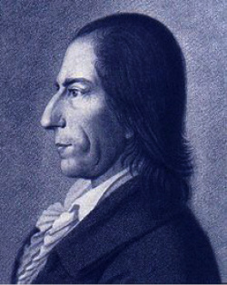
sanat 1. (art) Kişinin bedensel ya da maddesel gereksinimlerini karşılamak üzere gösterilen çaba ve az çok ustalık isteyen becerili iş; zanaat, sanat. 2. (fine arts) Güzel şeyler ortaya koyma uğraşları; güzel sanatlar.
sanat psikolojisi (art psychology) Güzel sanatlardaki yaratma olayını; sanatçının kişiliğini, sanat yeteneğini; sanatın etkisinin derinlik ve genişliğini, estetik yaşantıyı inceleyen psikoloji dalı; estetik psikolojisi, sanat ruhbilimi. Bkz. VYGOTSKİ, Lev Semionovivh.
sanat ruhbilimi Bkz. sanat psikolojisi.
sanat sağaltımı Bkz. sanat tedavisi
sanat sosyolojisi (sociology of art) Toplumsal yapılarla sanat anlayışları ve etkinlikleri arasındaki bağlantıları, sanatla ilgilenen kişiler,in kendi aralarında ve öbür insanlarla geliştirdikleri ilişkileri inceleyen sosyoloji dalı.
sanat tedavisi (art therapy) Resim, el sanatları gibi uğraşların tedavi amacıyla kullanımı; sanat terapisi, sanat sağaltımı. Bu tür tedavi uygulamaları özellikle kendilerini sözle anlatmada zorlanan insanlarda özellikle yararlı oluyor Algısal yetileri, devimsel becerileri ve özsaygıyı artırmayı amaçlayan bu uğraşlar, ruh sağlığı gibi beden sağlığına da iyi geliyor.
sanat terapisi Bkz. sanat tedavisi
sanayi psikolojisi Bkz. endüstri psikolojisi.
sanrı Bkz. varsanı.
sanrısal imge Bkz. varsanısal imge.
sansür (censorship) İktidarın ilişkilerine ya da toplumsal-kültürel dengelere zarar vereceği düşünülen her türlü sözlü, yazılı ya da görüntülü iletişimin denetim altına alınması. İletişim odaklarının kendilerini denetlemeleri otosansür deniyor. Bkz. karşıt enerji boşalımı.
sapaklık (anomaly) 1. Ortalamadan ya da normalden sapma. Doğuştan kusurlar, bu tür bir sapmadır. 2. Psikiyatride, normal kabul edilen şeyin sınırındaki nevrozlar ya da şizoid kişilik gibi kişilik özellikleri.
sapık (deviated) Tutum ve davranışları, grubun benimsediği törel ölçülerle bağdaşmayan kimse.
sapık düşünce (paralogical thinking) Özellikle şizofrenlerde gözlemlenen mantıksız düşünme ve sözel anlatım; mantık ötesi düşünce. Şizofren hastaların yanlış sonuçlar çıkardıkları, konunun özünü atladıkları, sorulan sorulara yanlış yanıtlar verdikleri görülüyor. Bleuler’in ünlü örneğinde şizofren hasta, İsviçreli olduğunu haklı çıkarmak için “İsviçre özgürlüğü sever. Ben de özgürlüğü severim. Öyleyse ben İsviçreliyim.” diyor. Bkz. mantık öncesi düşünme.
sapıklık (perversion) 1. Temel bir içgüdü ya da eğilimin soysuzlaşması, bozulması ya da sağlıksız duruma gelmesi; sapkınlık, soysuzlaşma. 2. Psikanalize göre, daha çok cinsel konularda doğal ve normal olandan sapma eğilimi. 3. Bulguları kötü yolda sunma.
Sapir-Whorf hipotezi (Sapir-Whorf hypothesis) Benjamin Whorf ve Edward Safir’in, insan dili ile düşüncesi arasında yakın bir ilişki bulunması gerektiğini savunan varsayımı. Bu görüş, sıklıkla iki versiyon olarak ortaya konuluyor. Birincisine göre dil, düşünceyi, kişinin dünyayı algılama biçimini belirliyor ve buna dilsel belirlenimcilik deniyor. İkinciye göre ise farklı diller, farklı düşünceleri kodluyor. Buna da dilsel görelilik adı veriliyor. Bkz. Whorf varsayımı.
sapkınlık (perversion) Özellikle cinsel davranış alanında toplumca ilgisiz bulunan yollara sapma durumu.
saplanım (fixation) Çocuğun gelişim sürecinde ilk çocukluk döneminin kimi özelliklerini benliğinde tutması ve sonraki dönemlerde de bunları bırakmaması biçiminde ortaya çıkan savunma mekanizması; fiksasyon, saplanma. Kimi çocuklar, yeni bir gelişim dönemine geçmeleri gerekirken, önceki gelişim döneminin özelliklerine saplanıp kalıyorlar. Bunları, sonraki dönemin özellikleriyle uyumlu duruma getiremiyorlar. Bu gelişim döneminde aşırı engellenmeleri yüzünden yaşam boyunca, bu engellenen gereksinimlerini özleyip duruyor ve onları arıyorlar. Belli bir dönemde aşırı doyurulmak da sonraki dönemlere geçmeyi zorlaştırabiliyor. Örneğin, bebeklik döneminde çocuk, tam bağımlıdır. Tüm bakım ve korumayı başkalarından; özellikle de annesinden bekliyor. Onun bu dönemi geride bırakmasına fırsat verilmeyip bu döneme saplanıp kalmasına yol açıldığında çocuk, ilerki yaşlarında da bu bağımlılığını sürdürmek istiyor. Hep başkalarından bekleyen bencil, bağımlı, edilgin bir kişilik sergiliyor. Bununla birlikte, bir dönemin tüm özelliklerinin sürüp gitmesi de olanaksızdır. Yoğun saplanımları olan kişilerde bile, sonraki dönemlere özgü özellikler de kişilikte yer alıyor. Bkz. ruhsal-cinsel gelişim kuramı.
saplanım yasası (law of fixation) Öğrenme ve alıştırmayı, yalın anımsama noktasının ötelerine götürmenin, öğrenmeye süreklilik kazandıracağını savunan kural.
saplantı (fixed idea; fixation; obsession) Yersiz olduğu bilinen; ama kişinin kendini etkisinden bir türlü kurtaramadığı düşünce; obsesyon, takınak. Bkz. tümden nevroz.
saplantı nevrozu obsessional neurosis) Hastanın türlü düşünce ve eylem saplantılarına yol açan nevroz; takınak nevrozu. Bkz. obsesif-kompülsif nevroz.
sara (epilepsy) Türlü nedenleri ve görünümleri olan, genellikle bilincin kararması, sarsıntı ve çırpınmalarla kendini belli eden, beyin süreçlerindeki bozulmalar; epilepsi, tutarık. Her yaşta görülebilen ve tedavisi bulunmayan; ancak, ilaçla nöbet araları uzatılabilen bu hastalık, merkez sinir sisteminden kaynaklanıyor ve çırpınmalarla ortaya çıkıyor. Hastalığı, “beynin ritmik elektriksel etkinliklerindeki değişimlere koşut olarak görülen bilinç değişimleri” diye tanımlayanlar da vardır. Sara nöbeti zorlanma, kanda şekerin düşmesi gibi değişik nedenlerle ortaya çıkıyor. Büyük nöbet, küçük nöbet, odaksal sara (Jackson sarası) ve ruhdevimsel (psikomotor) sara olarak dört tür sara tanımlanmıştır. Büyük nöbet (Grandmal): Sara denince, en ağır ve gösterilisi olan bu sara biçimi akla geliyor. Büyük sara nöbeti çoğunlukla hiçbir ön belirti göstermeden, birdenbire genel bir çarpıntı, seyirme bunalımlarıyla; kimi zaman da çığlık atarak yere düşmekle başlıyor. Nöbette gerileme, çırpınma, gevşeme ve nöbet sonrası evreler yer alıyor. Gerileme evresinde beden kasılıyor, gözler bir yana kayıyor, çeneler kenetleniyor, ağız köpürüyor, dil ısırılmışsa ağız kanlanıyor. Çırpınma evresinde baş ve gövde, şiddetli devinimlerle rastgele sarsılıyor. Hasta çeyrek saatte ya da daha uzun bir süre sonra derin bir komaya giriyor. Bu, gevşeme evresidir. Hasta, nöbet sonrası evrede şaşkınlık, perişanlık, bozulma, utanma duygularıyla birlikte, tanyerinin ağarması gibi yavaş yavaş komadan çıkıyor. Çoğunlukla güçsüzlükten, baş ağrılarından yakınıyor. Hastanın altına kaçırması, ötesini berisini yaralaması, görülen olaylardandır. Saralı, bir kaya başında, deniz kıyısında nöbete girdiğinde ölüm tehlikesi belirebiliyor. Büyük sara nöbetleri birbirini izlerken çok tehlikeli durumlar ortaya çıkıyor. O nedenle böyle hastalar izlenmelidir. Bunlar, sıklıkla suç işliyorlar. Adam öldürme, yaralama, yangın çıkarma, aşağılama ve gözdağı verme, bunların başlıcalarını oluşturuyorlar. Hastalar, kişilik yapıları gereği, öldürme suçlarını özellikle öfkelenmeleri sonucu ya da nöbetin baş ve sonundaki şaşkınlık, perişanlık dönemlerinde işliyorlar. Öldürmeyi genellikle bıçak ya da balta vuruşuyla ve acımasızca yapıyorlar. 15-20 balta ya da bıçak vuruşuyla öldürülenleri, büyük olasılıkla saralılar öldürmüşlerdir. Saralı, annesini, çocuğunu bile öldürebiliyor. Acı olayın ayrımına nöbet sonrasında varıyor. Yaptığı işten dolayı bu kez kendini de öldürdüğü görülebiliyor. Büyük nöbeti benzerlik gösterdiği histerik büyük bayılmalarla karıştırmamalıdır. Histerik nöbetlerin altında hep bir duygusal yaralanma vardır ve bilinç tümüyle yitirilmiyor. Histerik bayılmalarda saranın sinirsel belirtileri de görülmüyor. Ağır sara nöbetinden sonra ya da önce psikotik tepkiler ortaya çıkabiliyor. Kimi zaman bu tepkiler nöbetin yerine geçiyor. Saralının, nöbet dışı zamanlarda da kimi psikotik tepkiler gösterdiği de görülebiliyor. Uzun yıllar sara nöbeti geçirmiş kişide ileri aşamalarda süreğen psikoz belirtileri ortaya çıkabiliyor. Küçük Nöbet (petitmal): Bunda hasta birdenbire 15-20 saniyelik bilinç bulanıklığı ya da bilinç yitimi yaşıyor. Bir konuşma, herhangi bir iş ya da eğlence sırasında birdenbire işini bırakıyor, bir süre duraklıyor. 3-5 saniye kendini yitiriyor, göz kapaklarını kırpıştırıyor; dudaklarını, sararan yüzünü oynatıyor. Kimi zaman da esniyor ya da gülüyor. Bu arada altını ıslattığı da oluyor. Bu saranın çocuklukta görülüp ergenlikte geçtiği ya da yerini ağır sara nöbetine bıraktığı da görülebiliyor. Hasta, istençsiz; ama bilinçli ve genellikle iki yanlı olarak kas sarsıntıları geçiriyor. Odaksal Sara (Jackson sarası): Bu sara çeşidi, bulucusunun adıyla Jackson sarası olarak da anılıyor. Bu sarada nöbet, önce el ve parmak kaslarının sarsılmalarıyla başlıyor. Bu sarsılmalar yavaş yavaş kola, ordan yüze ve aynı yandaki bacağa yayılıyor. Tüm bedene yayıldığında hasta kendini yitiriyor. Odaksal sara görme, işitme, koklama ve dokunma duyularından birine bağlı olarak ortaya çıkıyor. Kimi nöbetler ruhsal etkinliğe, sanrılara, bilinç değişikliklerine ve kendiliğinden devinimlere yol açabiliyor. Yarım baş ağrısı, mide, böbrek ağrıları, apandisit bunalımları, soluk darlığı nöbetleri görülebiliyor. Saranın başlangıç noktası, beynin şakak bölgesi ise devinim bunalımı beliriyor. Ruhdevimsel Sara (psychomotor epilepsy): Ayrıntılı ve birden çok duyu, devinim ya da ruhsal bileşeni bulunan bir sara türü de ruhdevimsel saradır. Belirleyici özellikleri arasındabilincin bulanması, dudak şapırdatma, çiğneme ve benzeri kendiliğinden, istemsiz,uygunsuz ve amaçsız davranışlar, paramnezi, sanrılar, kimi olaylarda öfke patlamaları, başka duygusal patlamalar, korkular yer alıyor. EEG, uyku sırasında şakak lopunda sıklıkla çivi boşalması gösteriyor. İyi incelenip uygun tedavi yöntemi seçilince, düzenli denetlenip izlenince saralı iyileştirilebiliyor. Nedeni bilinmeyen saralılara ise düzenli ve ölçülü bir yaşam öneriliyor; hastanın ruhsal zorlanmalardan uzak kalması isteniyor. Bol yağ, az karbonhidrat ve az tuzlu su rejimi uygulanıyor. Ayrıca ilaç tedavisi de yararlı oluyor.
sarsıntı Bkz. travma.
sarsıntı bunaması Bkz. travmatik bunama.
sarsıntı sağaltımı Bkz travma tedavisi.
SATI BEY (1880-1968) Eğitimci ve düşünür; Osmanlı Devleti’in eğitimini çağdaşlaştırma ve Arap milliyetçiliği konularında çalışmalar yapan Arap. Satı Bey, Yemen’in başkenti Sana’da doğdu; Bağdat’ta öldü. Yargıç olan babasının sıklıkla yer değiştirmesi nedeniyle özel öğrenim gördü, Fransızca öğrendi. İstanbul Mülkiye Mektebi’nin idadi (lise) bölümüne girdi. 1900’de bu okulun yüksek bölümünü bitirdi. Yanya’da öğretmenliğe başladı. Eğitimde yenileşme çabaları nedeniyle 1905’te Kosova kaymakamlığına alındı. Ertesi yıl Manastır’ın Florina kazasına atandı. II. Meşrutiyet’in ilanından sonra İstanbul’a gitti. 1909’da Darülmuallimin müdürlüğü görevi verildi. Orada genç bir kadroyla Batılı ölçülere uygun bir eğitim sistemini uygulamaya koydu. Sosyoloji, psikoloji ve etnografya gibi derslerin programa alınmasını sağladı. Avrupa’ya geziler yaptı. Tedrisat-ı İptidadiye Mecmuası’nı çıkararak ilk ve orta öğretim üstüne yazılar yayımladı. 1912’de maarif nazırı ile anlaşamama nedeniyle görevinden ayrıldı. Bir süre Darüşşafaka müdürlüğü yaptı. Çıkardığı Terbiye adlı dergide eğitim bilimi üzerine makaleler yazdı. Batı’nın bilim ve teknolojisinin yanı sıra uygarlık değerlerinin de benimsenmesi gerektiğini savundu. Mondros Mütarekesi’nden sonra, artık Osmanlı Devleti’nin yaşamayacağına inandığı için Şam’a gitti. Emir Faysal’la yakın ilişkiler içinde etkin siyasete atıldı. Suriye hükümetinde eğitimle ilgili görevler aldı. Fransızların hükümeti yıkması üzerine İtalya’ya; oradan da İstanbul’a geçerek Kuva-yı Milliyecilerle ilişki kurmaya çalıştı. Girşimi sonuç vermeyince Kahire’ye döndü. 1921’de gittiği Irak’ta eğitim genel müdürlüğü görevine getirildi. Yayımladığı Eğitim ve Öğretim Dergisi aracılığı ile İslami özellikler dışında bir Arap birliği anlayışına dayalı ve Batı uygarlığını özümsemiş yeni bir Arap kültürü yaratmaya yönelik çağdaş bir eğitim sistemi oluşturmaya çalıştı. 1927’de muhalifleri artınca görevinden ayrılmak zorunda kaldı. Dört yıl Bağdat’taki Darülmuallimin’de ders verdi. Kısa bir eğitim müfettişliğinden sonra 1935’e dek Hukuk Fakültesi dekanlığı yaptı. Oradan Eski Eserler Genel Müdürlüğü’ne alındı. Eski uygarlıkların gün ışığına çıkarılması ve korunması konusunda önemli çalışmalar yaptı. İngiliz yanlısı Nuri Said’in dış siyasetinin karşısında yer aldığı için İngiliz müdahalesinin ardından Halep’e sürüldü. Oradan geçtiği Beyrut’ta üç yıl kaldıktan sonra Suriye hükümetince eğitim danışmanlığına getirildi. Fransız etkisini silmek amacıyla eğitim sistemini Araplaştırmaya çalıştı. Laik tutumu tepki topladığından 1946’da Beyrut’a döndü; ertesi yıl da Kahire’ye yerleşti. Orada Arap Birliği Kültür Komitesi danışmanlığının yanı sıra Kahire Üniversitesi’nde ders verdi. 1953’te Arap İncelemeleri Yüksek Enstitüsü’nün başına geçti ve 1957’ye dek bu görevde bulundu. Arap birliği düşüncesini benimsemiş kuşakların yetiştirilmesinde etkili oldu. Ölümünden kısa süre önce Bağdat’a yerleşti. Satı Bey, gerçekleştirmeyi düşlediği düzen için eğitime birincil önemi vermiş; Osmanlıcılıktan Arap milliyetçiliğine dönüş yaptıktan sonra “önce Araplık düşüncesiyle öz kültür kaynaklarını laik ve çağdaş bir yorumla canlandırmaya uğraşmıştır. Başlıca yapıtları: Fenn-i Terbiye, 2 cilt, 1909; Ümit ve Azm, 1913; Vatan İçin, 1913; Ârâ ve Ahâdisfi’t-Terbiye ve’t-Talim, 1944 (Eğitim ve Öğretim Hakkında Düşünceler ve Konuşmalar); Ârâ ve Ahâdis fi’l Vataniye ve’l-Kavmiye, 1944 (Yurtseverlik ve Milliyetçilik Hakkında Düşünceler ve Konuşmalar); Difaen el-Urube, 1956 (Araplığın Savunulması); el Bidaü’l-Arabiye ve’d-Devleti’l-Osmaniye, 1957 (Arap Ülkeleri ve Osmanlı Devleti).
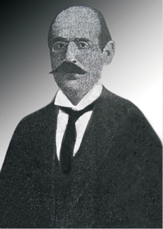
satiryazis Bkz. Don Juan karmaşası.
savaş nevrozu (combat neurosis) Savaş sırasında önde çarpışanlar arasında gelişen ve bilinçdışı düzeyde tehlikeden uzak kalma özlemini yansıtan nevroz.
savaş örselenmesi Bkz. savaş travması.
savaş şoku (battle shock) Savaş alanında dış kaynaklı stresin neden olduğu psikiyatrik çöküntü. Savaş şoku, klinik açıdan belirtilerin ortaya çıkış hızına bağlı olarak akut (çarpışma şoku) özelliğindedir. Tedrici olan ise çarpışma yorgunluğu olarak adlandırılmaktadır.
savaş travması (shell shock) Savaş koşulları ve özellikle ağır bombardımanlar sonucunda gelişen ruh ve sinir bozuklukları; savaş sarsıntısı, savaş örselemesi.
savaş yorgunluğu (operational combat fatigue) Savaşta geçirilen uzunca bir zaman sonunda ortaya çıkan, yerinde duramama, uykusuzluk, karabasan görme, kolayca sinirlenme, sindirim bozuklukları, ürkeklik ve genel olarak sinirlilik gibi belirtileri olan ruhsal dengesizlik. Bkz. savaş şoku.
savsaklama sendromu (neglect syndrome) Beynin bir yanındaki zedelenmeden kaynaklanan ve hastanın, vücudunun öbür yanında olup bitenlerden habersiz olduğu nörolojk bir bozukluk. Kişinin bütün duyuları bundan etkilenebiliyor. Örneğin beyninin sağ yanı zedelenen bir hasta, sol yanından gelen sesleri işitemiyor, görüntüleri göremiyor.
savunma (defense) Kaygı, değer duygusunun yitirilmesi gibi hoş olmayan, yoğun bir acı veren durumlara karşı kişinin benliğini kendiliğinden savunmasına yarayan ruhsal işlev; müdafaa. Bkz. benliğin savunma mekanizmaları; yapısal kuram (Üstbenlik).
savunma mekanizmaları Bkz. benliğin savunma mekanizmaları.
savunulabilir alan (defensible space) Bireyin içinde yaşadığı, kişiselleştirdiği, kendini güvende duyumsadığı sınırları belli bir alan; kurtarılmış bölge.
saygı (esteem, respec) Yaşama düzeni ya da felsefe, program, örgüt, kurum gibi üstünlük, yaş, nitelik ve benzerleri bakımından başkalarına ya da başka nesnelere duyulan sevgi ile çekinme karıoşımı bir bağlılık duygusu; hürmet.
saygınlık (prestige) Toplumsal konuma ya da statüye mal edilen ve o yeri işgal edenin kişisel özelliklerinden bağımsız olan onur. Saygınlık, toplumsal bir konuma ya da statüye toplumun genelince de dar bir çevrece de mal edilebiliyor. Saygın kişiler, genellikle saygın oldukları alanlarda insanları etkileme gücüne sahiptirler. Bkz. karizma; saygınlık telkini.
saygınlık gereksinimi Bkz. gereksinimler aşama sırası.
saygınlık telkini (prestige suggestion) 1. Belli bir konuda saygınlığı olan kişileri kendi yanına çekerek başkalarını ikna etme; prestij telkini. 2. Terapistin hastanın gözündeki saygınlığına dayanarak yaptığı destekleyici, yönlendirici, belirtilere dayalı psikoterapi. Hastanın gözünde “her şeye gücü yeten” terapist, telkin yoluyla en azından bir süreliğine hastalık belirtilerini ortadan kaldırabiliyor. Bkz. telkin.
sayılama ruhbilimi Bkz. istatistik psikolojisi.
sayıltı (assumption) Doğru olduğu varsayılan yargılar, ilkeler, genellemeler; Bilim insanı, bu sayıtlılarla araştırmasına başlıyor. Sayıltılar doğru olabileceği gibi, yanlış da olabiliyor. Araştırma sonucunda elde edilen bulgularla doğruluğu kanıtlanmayan sayıltı, terk ediliyor. Sayıltılar kanıtlanabildiği gibi, hiçbir zaman kanıtlanamadığı da oluyor. Bununla birlikte, şu ya da bu biçimde belirli sayıtlılara dayanılarak yola çıkmanın kaçınılmaz olduğu bilinmelidir. Sayıltılar, gelişigüzel saptanmıyor. Daha önce yapılan çeşitli araştırmalardan çıkarılan sonuçlar üzerine yapılandırılıyor. Her araştırma başlangıcında sayıtlıların oluşturulması zorunludur. Örneğin, “Örneklemimiz evreni temsil eder.” bir sayıltıdır. Bunun gibi, bilimin de sayıtlıları vardır: “Belirli olaylar, belirli sonuçlar doğurur.”, “Doğayı bilmemiz mümkündür.” gibi. Bkz. varsayım.
sayısal dereceleme ölçeği Bkz. dereceleme ölçeği.
sayısal yetenek (numerical ability) Matematiksel ilişkilerden yararlanma ve fen bilimlerindeki temel kavram ve ilkelerle düşünme gücü. Bkz. yetenek testleri; zekâ testi.
sayı sapıklığı (arithmomania) Nesneleri saymaya karşı hastalıklı bir tutku duyma ya da gereği ve önemi yokken sayı bağlantılarıyla aşırı biçimde ilgilenme durumu. Bkz. mani.
sayı yitimi (acalculia) Çok yalın sayısal işlemlerde bile başarısız olma durumu.
sayrılık sayrılığı Bkz. hastalık hastalığı.
sayrılık ürküsü Bk. hastalık korkusu.
sayrılık yılgısı Bkz. hastalık korkusu.
SD Bkz. standart sapma.
seans (seance) 1. Oturum, tedavi ya da başka bir iş, uğraç gibi belli bir amaçla her defa bir arada harcanan süre. 2. Kişilerin özel olarak hazırlanmış ortamlarda; örneğin, karanlık bir odada oturarak doğaüstü şeyler yapmaya ya da gözlemlemeye; örneğin, ruhlarla konuşmaya çalışmaları biçimindeki parapsikoloji etkinliği. 3. Sinema, tiyatro, müzik gibi sanat dallarında yapılan gösterimlerden her biri; gösterim.
seçenek (alternavite) Bir işin ya da sorunun iki ya da daha fazla yönünden her biri; alternatif, almaş.
seçerek algılama Bkz. algısal seçicilik.
seçici algı Bkz. algısal seçicilik.
seçici anımsama (selective recall) Kişinin beklentileriyle, tutumlarıyla tutarlı olan bilgilerin daha iyi anımsanması. Bkz. seçici saklama.
seçici dikkat (selective attention) Birden çok uyarıcının bulunduğu ortamlarda kişinin dikkatini yalnızca önemli gördüğü uyarıcılar üzerinde toplama ve diğer uyarıcıları yok sayma yetisi; seçici algı. Bkz. filtre kuramı; filtre paradoksu.
seçici dikkatsizlik (selective inattention) 1. H. S. Sullivan’a göre, kaygı verici ya da korkutucu deneyimlerin göz ardı edildiği ya da unutulduğu bir tür algısal savunma.
seçici dilsizlik Bkz. dilsizlik.
seçici saklama (selective retention) Anımsama kapasitesinin, anımsanacak şeyin canlılığı, doğruluğu, niteliği ve içeriği bağlamında kişiden kişiye ve söz konusu kişinin ilgisine, yaşantısına, güdülenmesine ve duygusal etkenlere bağlı olarak değişmesi. Bkz. seçici anımsama.
seçici serotonin geri alım engelleyicisi (serotonin-specific reuptake inhibitor (SSRI) Üç halkalı, dört halkalı ilaçlarla ve MAOI’lerle birlikte bu ilaçlar, başlıca antidepresan ilaçlar arasında sayılıyor. Ayrıca çift kutuplu I bozukluğu, dysthmic disorder, yeme bozuklukları, panik bozukluğu, takınaklı-zorlanımlı belirtiler, sınır kişilik bozukluğu da içinde olmak üzere başka birçok bozukluğun tedavisinde de etkili oluyor. Genellikle öbür antidepresanlardan daha az olumsuz yan etkileri bulunması nedeniyle daha yaygın olarak kullanılan bu ilaçların en ünlüsü fluoksetindir (Prozac’tır). Histamin, asetilkolin ve norepinefrin alıcılarına çok daha az bağlanmaları nedeniyle üç halkalı antidepresan ilaçlara göre çok daha az sedadif, antikolinerjik ve kardiyovasküler etkileri vardır. Ayrıca monoamin oksidazı engellemiyorlar; antikolinerjik etkileri de bulunmuyor.
seçici soyutlama Bkz. bilişsel şema.
seçici uyum (selective adaptation) Bir deneğin yeniden yeniden uyarılması durumunda uyumun gerçekleşmesi ve deneğin o uyarıma duyarlığının azalması biçimindeki uyum. Deneğin ancak benzer; ama ayırt edilebilecek düzeyde farklı uyarımlara normal bir tepki vermesi durumunda seçici uyum sağlanmış oluyor.
seçilim Bkz. ayıklama.
seçimli dikkatsizlik (selective inattention) Renkli olarak yazılmış sayıları ya da çizilmiş şekilleri kısa bir süre deneğe gösterip ardından deneği sorgulayınca, deneğin sayı ya da biçimleri anımsamasına karşın renkler konusunda izlenimsiz kalması durumu.
seçimli sessizlik (selective silence) Ruhsal tedavi ya da danışma sırasında, tedavi edilenin açığa vurmak istemediği tepkilerini gizlemek için başvurduğu konuşmama durumu.
seçimli yaşam alanı Bkz. temel yaşam alanı.
seçim yanlılığı (selection bias) Deney ya da araştırma için seçilen örneğin popülasyonu temsil etmemesinden; yani araştırmaya katılanların özelliklerinin, katılmayanlarınkinden sistematik olarak farklı olmasından kaynaklanan hataların oluşturduğu yanlılık.
seçkin (elite) Bir toplumsa saygın ve etkin yerlerde ve görevlerde bulunan ve toplumun eğitim, ekonomi, siyaset, askerlik, din, sanat ve benzeri alanlarında denetimi elinde tutan azınlık. 2. Bir grubun içinde yönlendirici gücü elinde tutan ve kendilerinde üstün özellikler bulunduğu düşünülen kişi ya da kişiler; elit.
seçkisiz hata Bkz. güvenirlik.
seçme tekniği (nominating technique) Her üyenin, en çok sevilen, en geçimsiz, en uyumlu ve benzeri ölçütlere en iyi uyan kişiyi seçmesi yoluyla grubun yapısı konusunda bilgi toplamaya yönelik bir sosyometrik teknik.
sedasyon (sedation) 1. Özellikle bir ilacın etkisiyle ruhsal heyecanın yatışması ya da fizyolojik işlevlerin bastırılması, yavaşlaması. 2. Bu biçimde yaratılan durum. Bkz. sedatifler.
sedatifler (sedatives) Kaygı, ağrı, uykusuzluk, gerilim belirtilerinin giderilmesinde kullanılan sakinleştirici, rahatlatıcı bendoniazepinler ve benzeri ilaçlar. Diazepam, klordiazepoksid, ailprazolam, klonazepam, temazepam, lorazepam, flurazepam, oksazepam, klorazepat ve triozolom bunlardandır.
seğirme (fasciculation) Kasta görülebilecek küçük, yersel bir kasılma; tek bir hareket sinir lifinin ateşlenmesi ile bir dizi kas lifinin kendiliğinden boşalması.
sekiz benlik gelişim dönemi Bkz. insanın sekiz çağı.
sekme (saccade) Gözün bir sabitlenme noktasından ötekine çok hızlı, sıçramalı hareketi. İnsan gözü yalnızca çok küçük bir görsel açıya net olarak odaklanabildiği için, gözün görsel dünyayı yorumlaması için birçok hareketi gerçekleştirmesi gerekiyor. Bu sıçramalı hareketler sırasında yeni bilgilerin algılanması bastırılıyor; bu da istikrarlı bir dünya algısını olanaklı kılıyor.
sekmeli hareket (saccadic movement) Hareketli nesneyi izlerken gözlemlenen yumuşak izleme hareketlerinin tersine, gözün görsel bir alanı tararken; örneğin, okurken, bir resme bakarken yaptığı birden bire, hızlı hareketler.
seks Bkz. cins; cinsellik.
seksoloji (sexology) Cinsel etkinliği ve üremeyi, anatomisi, fizyolojisi ve psikolojisi ile inceleyen bilim dalı; cinselbilim.
seksüel mazohizm Bkz. cinsel özezerlik.
seksüel sadizm Bkz. cinsel elezerlik.
seksüel travma Bkz. cinsel travma.
sekülerizm (secularism) İnsanileşme. Dinsel olan ya da dinsellik atfedilen tüm değer ve ilkeleri bireysel ve toplumsal yaşamın dışına çıkaran; yalnızca bu dünyayı yaşanabilir kabul edip öte dünya ile ilişkisini koparan insan odaklı düşünme ve yaşama biçimi; sekülerleşme, dünyasallaşma. Semavi dinlerle bağların koparılması ideolojisi; insanın kendikendine yeteceğini kabul eden felsefe. Birbirinin yerine de kullanılan sekülerizm ve laiklikten birincisi belli bir yaşam biçimini; ikincisi ise o yaşam biçiminin siyasal örgütlenme biçimini dile getiriyor. Bkz. aydınlanma; laiklik.
semantik açıklama Bkz. açıklama.
sembiyotik evlilik symbiotic relatedness) Nevrotik gereksinimlerini doyurmak için birbirine bağımlı iki bireyin evliliği. Bu eşlerden ikisinin de nevrotik ya da evlilik dışında kolaylıkla doyuramayacakları normal dışı gereksinimleri olabiliyor. Bkz. sembiyotik ilişki.
sembiyotik evre Bkz. ayrılma-bireyleşme.
sembiyotik ilişki (symbiotic relatedness) Bir bireyin, nevrotik gereksinimlerini doyurmak için bir bireyin ötekine asalakça bağlanması. Erich Fromm’a göre, bu ilişkide kişi, ruhsal özerklik kazanamıyor ve anormal bağımlılıkla karşısındakiyle kaynaşmaya dayanan bir ilişki biçimi geliştiriyor. Bkz. sembiyotik evlilik; sembiyoz.
sembiyotik psikoz. Bkz. yaygın gelişim bozukluğu
sembiyoz (symbiosis) 1. Genel ve özgün anlamıyla birlikte yaşama. Biyolojide iki canlı türünün, bağımlı bir ilişki içinde yaşaması. Bu yaşam biçiminin her zaman her ikisi için de yararlı olması gerekmiyor. Bkz. sembiyotik ilişki. 2. Psikiyatride Fromm’a göre, iki insan arasında aşırı bağımlılıkla ve karşılıklı birbirini kullanmayla ya da taraflardan birinin yaşamak için asalakça ötekine tutunmasıyla ortaya çıkan hastalıklı ilişki. Elezer-özezer kişilik, bunu örneklendiriyor. Fromm’ın verdiği ikinci bir örnek de yakın akraba ile sevişmedir (ensest ilişkidir). 3. Bebeğin gelişiminde, annesine tam bağımlı olduğu ve bu nedenle ne bedensel ne de ruhsal anlamda kendini annesinden ayrı görmediği evre. Normal görülen bu evrenin aşılamaması, ağır bozukluklara yol açıyor. Bkz. ayrılma-bireyleşme.
sembol Bkz. simge.
sembolik proses Bkz. simgesel süreç.
sembolizasyon Bkz. simgeleştirme.
sembolleştirme Bkz. simgeleştirme.
seminer (seminar) 1. Bir uzman, öğretmen ya da gözetmen yönetiminde yapılan, belli bir konunun kapsamlı biçimde irdelenmesine yönelik özel mesleksel çalışma; bu tür çalışmaların sunulduğu toplantı. 2. Üniversitelerde bir öğretim elemanının denetiminde öğrencilerin yürüttüğü inceleme- araştırma çalışmaları.
semiyoloji Bkz. göstergebilim.
sempati Bkz. duygudaşlık; duygu yakınlığı.
sempatik işlevler Bkz. merkez sinir sistemi.
sempatik sinir sistemi Bkz. özerk sinir sistemi.
sempozyum (symposium) Belli bir konuyla ilgili olarak birçok konuşmacı ya da uzmanın hazırlamış olduğu bildirileri, bir dinleyici topluluğu önünde sundukları, çeşitli yönleriyle ele alıp tartıştıkları, herkese açık bilimsel toplantı.
semptom Bkz. belirti.
semptomatik fiil Bkz. belirtisel eylem.
semptomatik tedavi (symptomatic treatment) Nedenleri, koşulları ortadan kaldışmaya, hastanın kişiliğini yeniden oluşturmaya çalışmaktan çok, sıkıntıya yol açan belirtilerin hafifletilmesini hedefleyen davranış tedavisi, hipnoterapi, telkin tedavisi gibi tedavilerin ortak adı; belirtisel tedavi.
semptomatik terapi Bkz. semptomatik tedavi.
semptom grubu Bkz. belirti grubu.
semptom lokalizasyonu Bkz. belirti lokalizasyonu.
semptom teşekkülü Bkz. belirti oluşumu.
senaryo çözümlemesi (script analysis) Etkileşimsel çözümlemede, hastanın bilinçsiz yaşam planını (yaşam senaryosunu) bütün olarak çözümleme.
sendrom (syndrome) Birlikte ortaya çıkan ve ayırt edilebilir bedensel ya da ruhsal bir bozukluğu oluşturan bir belirtiler kümesi; hastalık tablosu. Sıklıkla “hastalık” terimiyle eşanlamlı kullanılsa da “hastalık” daha özel bir durumdur. Gerçekte hastalıkların birçoğu birer sendromdur.
sentaksi (syntaxis) H. S. Sullivan’a göre, nesnel, başkalarının gözlemine ve doğrulamasına açık bir düşünme ve iletişim modu. Bkz. parataksik çarpıtma; sentaksik düşünce; sentaksik mod.
sentaksik düşünce (syntaxic thought) H. S. Sullivan’a göre, mantıklı, hedefe yönelik, gerçek yönelimli bir düşünme biçimi; en yüksek biliş düzeyi. Bkz. sentaksi; sentaksik mod.
sentaksik tepe değer (syntaxic mode) H. S. Sullivan’a göre, dünyayı algılamadaki en yüksek evre; sentaksik mod. Ona göre bu algı modunda kişi, gerçeklik konusunda başkalarınca doğrulanan bütünsel, mantıklı, tutarlı bir tablo oluşturuyor. Bkz. sentaksik düşünce.
sentez (synthesis) 1. Parçaları, ayrı öğeleri bir bütün oluşturacak biçimde birleştirme ya da bu biçimde birleştirilmiş şey. 2. Psikiyatri ve psikolojide tutumlar, inançlar, davranışlar, kişilik özellikleri gibi öğelerin bütünleştirilmesi; bireşim. Bkz. analiz.
serbest anımsama (free recall) Bkz. özgür anımsama.
serbset bırakma teorisi Bkz. özgür bırakma kuramı.
serbest bırakma terapisi Bkz. özgür bırakma tedavisi.
serbest çağrışım Bkz. özgür çağrışım.
serbest hatırlama Bkz. özgür anımsama.
serbestlik derecesi Bkz. t dağılımı.
serbest sinir ucu (free nerve ending) Deride bulunan ve basınç, sıcaklık ve acı uyarılarını algılayan duyu alıcı hücreler.
serbest tedai Bkz. özgür çağrışım.
serbest yaratıcı çalışma Bkz. özgür yaratıcı çalışma.
serebral (cerebral) Serebrum (beyin) ile ilgili. Bkz. serebral korteks.
serebral korteks Bkz. beyin kabuğu.
serebrum (cerebrum) Beyinciğin ön, üst bölümünde bulunan ve iki yarımküreden oluşan en büyük, en önemli bölümü; beyin. En son evrimleşen ve insanda 15 milyardan fazla sinir hücresi içeren beynin kabuğu zekâ, düşünme, bellek, bilinçli hareket denetimi, algı gibi yüksek bilişsel süreçlerden sorumludur. Bkz. beyin.
sergileme kuralları (display rules) Kişinin hangi ortamlarda ne tür duygular sergileyebileceğini ya da hangi duyguları sergilemekten kaçınması gerektiğini belirten öğrenilmiş kurallar.
seri (serial) Çabuk, hızlı. Bkz. seri anımsama; seri davranış; seri ilişkilendirme; seri konum eğrisi; seri konum etkisi; seri öğrenme; seri pekiştirme; seri yorum.
seri anımsama (serial recall) Değişmeyen bir sıralamaya göre öğrenilen bilgilerin, yine aynı sıraya göre anımsanmasının beklendiği bir bellek araştırma yöntemi; seri hatırlama. Bkz. özgür anımsama; seri öğrenme.
seri davranış (serial behavior) Piyano çalmada olduğu gibi, biri öbürünü uyaran ve bütünleşmiş değişmez sıralamaya sahip olan davranış dizisi.
seri hatırlama Bkz. seri anımsama.
seri ilişkilendirme (serial association) Dizelgedeki bir maddenin, bir sonraki maddeyle ilişkilendiği bir tür öğrenme tekniği. Bkz. seri öğrenme.
seri konum eğrisi (serial position curve) Bir özgür anımsama deneyinin sonuçlarını grafik halinde gösteren eğri. Bu grafiğin X ekseni, anımsanacak maddelerin sırasını; Y ekseni ise deneklerin genel ortalamasıyla elde edilen ve söz konusu madde için belirlenen anımsanma olasılığını gösteriyor. Bu eğri U biçimindedir. Bunun nedenleri ve yorumu için Bkz. öncelik etkisi; seri konum etkisi; sonralık etkisi;.
seri konum etkisi (serial position effect) Özgür anımsama deneylerinde dizelgenin başında ve sonundaki bilgilerin ortadakilere göre daha kolay anımsanması. Bkz. öncelik etkisi; seri konum eğrisi; sonralık etkisi.
seri öğrenme (serial learning) Bilgilerin verilen sıraya göre öğrenilmesi ve anımsanması. Bu öğrenme biçiminde her bir tepki (yanıt), dizideki bir sonraki tepkiyi tetikliyor (o tepki için bir uyarıcı oluyor). Bir şiirin ezbere okunması, bunun yalın bir örneğidir. Bkz. seri anımsama; seri pekiştirme.
seri pekiştirme (serial reinforcement) Her doğru tepkinin (yanıtın), doğru tepkinin yinelenme olasılığını artırdığı bir seri öğrenme tekniği.
seri yorum (serial interpretation) Psikanalize göre, birbirini izleyen bir dizi rüyayı birlikte yorumlama. Bu tür rüyalar tek tek ele alındığında pek bir anlam taşımıyor; ancak, birlikte değerlendirildiğinde önemli ipuçları veriyorlar.
serotonin (serotonin) Temel aminoasitlerden biri olan triptofandandan türetilen; kanda, sinir hücrelerinde, kimi dokularda bulunan ve sinir hücreleri arasındaki sinyal alışverişini düzenleyen monoamin bir sinir iletici; mutluluk hormonu. Serotonin, kanın pıhtılaşmasından düzenli kalp atışlarına, vücut ısısının düzenlenmesine, bellek işlevlerine, uykuya geçişe, yeme bozukluklarına dek birçok bedensel, duygusal-davranışsal süreçte etkili oluyor. Ayrıca kaygı bozuklukları, depresyon, şiddete yönelik davranışlar, obsesif kompulsif bozukluk, şizofreni, oburluk, şişmanlık, mevsime bağlı duygusal bozukluk, migren, alkol bağımlılığı gibi birçok bozuklukta da etkendir. Serotonin, vücudun biyolojik saatini düzenleyen melatoninin de öncülüdür. Bkz. serotonin geri alım engelleyicisi; sinir ileticileri.
serotonin gerialım engelleyici (Serotonin Reuptake İnhibitor: (SRI)) Beyin sinir hücrelerinin serotonini geri almasını yavaşlatan ve depresyon tedavisinde kullanılan ilaçların ortak adı. Bu ilaçlar en iyi sonucu, artırımlı doz ile veriyor. Bunlar monomin oksidaz engelleyici ilaçlarla birlikte alındığında, kas ve sinir bozuklukları, nöbetler, hatta koma ve ölüm gibi tehlikelere yol açabiliyor.
sert akıllı (tough-minded) William James’e göre, maddeci, kuşkucu, yazgıcı ve görgül olarak tanımladığı bir kişilik türü. Bkz. yumuşak akıllı.
sert zar (dura mater) Beyni ve omuriliği koruyan en dıştaki kalın, sert zarlardan oluşan üçlü tabaka.
sert zar altı kanaması (subdural hemorrhage) Kafa travması, ur, inme ve benzeri nedenlerle sert zar ile beyin arasında kanamanın olması. Kanamanın yol açtığı nörolojik belirtiler, beynin kanamadan etkilenen bölümüne bağlı olarak değişiyor.
sesbilim (phonology) Dilleri, ses özellikleri ve değişimleri bakımından inceleyen ve bu alanda kuramlar geliştiren bilim dalı. Bkz. dil psikolojisi.
ses kısıklığı (ophonia) Ruhsal kökenli olduğunda bir histerik dönüşüm belirtisi. Nedeni organik olan ses kısıklığı, gırtlaktan ya da bunun sinir bağlantılarındaki bir hastalıktan kaynaklanıyor. Bkz. alali.
ses-simge ilişkisi (sound-symbol association) Seslerle bunlara karşılık gelen harfler ya da işaretler arasında ilişki kurma yetisi. Okuma için bu bir önkoşuldur.
sessiz alanlar (silent areas) Beyin kabuğunda ön, art kafa ve şakak loplarının elektrikle uyarılması durumunda hiçbir duygusal ya da devimsel tepki yaratmayan bölümleri.
sessiz konuşma (internal speech) İçten, sessiz olarak kendi kendine yapılan konuşma.
ses yitimi (aphonia) Normal konuşma sesini, beyin özürleri dışındaki organik ya da ruhsal nedenlerle yitirme.
set Bkz. uysal tepki seti.
s etkeni (s factor) Spearman’a göre, belli bir işe özgü bir zekâ etkeni; s faktörü. Belli bir testteki s etkeni, testle ilgili alandaki özel yeteneği temsil ediyor.
sevecenlik (tenderness) Acıma, kollama, koruma duygusuyla sevme; şefkat. Bkz. sevecenlik bağları; sevecenlik davranışları; sevecenlik itkisi; sevecenlik gereksinimi; sevecenlik içerikli sevgi; sevecenlik yönelimi.
sevecenlik bağları (affectional attchments) Çoğu kez anne olmak üzere temel bir sevgi nesnesine olduğu kadar, evcil hayvanlar da içinde olmak üzere ailenin öbür üyelerine karşı da duyulan sevecenlik. Yaşamın ilk yılının sonlarında başlayan öpme, okşama, sevgi sözcükleri gibi sevecenlik dışavurumları ortaya çıkıyor. Bu bağlar, tutunma, sarılma, okşama gibi davranışlarla sürüyor. Çocukların ayrılık durumunda yaşadıkları yitirme duygusu, üzüntü ve kaygı, sevecenlik bağlarının varlığına kanıt oluşturuyor.
sevecenlik davranışları (affectional behaviors) İki insan; örneğin karı koca, iki dost arasındaki ilişkinin sevecenlikle benimsenip onaylanarak sürmesini sağlayan davranışlar.
sevecenlik dürtüsü Bkz. sevecenlik itkisi.
sevecenlik itkisi (affectional drive) Bebeklerin doğdukları andan başlayarak kucağa alınmaya tepki göstermeleri nedeniyle birçok psikologun doğuştan geldiğini kabul ettiği sevecenlik gösterme ve sevecenlik duygusunu alma itkisi; şefkat dürtüsü, sevecenlik dürtüsü. Soğuk ve mekanik davranışla karşılaşan çocuklar, genellikle mutsuzluk; dahası acı çekme belirtileri gösteriyorlar. Freud ise çocuğun annesine ya da onun yerini alan kişiye bağlanmasının nedenini, bu kişilerin, onun temel gereksinimlerini karşılamaları ile açıklamıştır. Son zamanlarda yapılan araştırmalarda da örneğin, sarılacak bir annesi ya da anneye benzer yumuşak bir yapay anne bulamayan maymun yavrularında ağır depresyon belirtilerinin ortaya çıktığı görülmüştür. Bkz. anne yoksunluğu; duygusal yoksunluk.
sevecenlik gereksinimi Bkz. gereksinimler aşama sırası; ilk depresyon.
sevecenlik içerikli sevgi (affectionate love) Kişinin karşısındakine yakın olmak istemesi ve ona karşı derin bir sevecenlik ve sevgi duyması.
sevecenlik yönelimi (affectional orientation) Kendimizi yanında rahat, dingin duyumsadığımız; cinsellik içermeyen bir duyguyla kendimize yakın bulduğumuz kişilere yönelme; şefkat meyli. Bu yöneliş, iki cinse de olabilir.
sevgeç Bkz. libido.
sevgeç değişimleri Bkz. libido değişimleri.
sevgeç esnekliği Bkz. libido esnekliği.
sevgi (love) İnsanı bir kişiye ya da şeye karşı yakın ilgi ve bağlılık göstermeye yönelten içsel duygular bütünü, sevme duygusu. Fromm’a göre sevgi, güvenliğin özünü oluşturan içtenliğin başta gelen öğesi, besin kaynağı; iki ayrı varlık olarak kalanların bir olması olgusunun hazırlayıcısı ve sürdürücüsüdür. Var olmanın çözüm yolu sevgiden geçiyor. Sevgi olgusu, yalnızca özgürlük içinde gerçekleşebiliyor. Sevgi, başlı başına bir sevinç olan verme işidir. Kişi, sevme ile içinde yaşayan sevinçlerden, anlayıştan, ilgilerden bir şeyler veriyor ve bunlarla karşıdakini de zenginleştiriyor. Verme, karşıdakini de verici kılıyor Bu karşılıklı vermelerle ortaklaşa bir şeyler yaratmanın sevinci paylaşılmış oluyor. Sevgi; kardeş sevgisi, anne baba sevgisi, çocuk sevgisi, arkadaş sevgisi, cinsel sevgi gibi ayrı nitelikleriyle yaşanıyor. Başkalarını seven insanın, kendini de sevmesi doğaldır. Ancak, bunu bencil kişilerin sevgisiyle karıştırmamalıdır. Benciller, elde edemedikleri mutlulukları yaşamdan koparıp almaya çalışan; başkaları gibi kendilerini de sevmeyen kimselerdir. Bkz. aşk; dostluk; duyuşsal öğrenme; evlilik (Sağlıklı Bir Eş Olma ve Eş Seçmenin Koşulları: Tanımak, Sevmek, Paylaşmak); özgürlükten kaçış yaklaşımı (Benliğin Etkinlik Gereksinimi, Güvenlik ve Sevgi); sevgi gereksinimi; sevgi yetersizliği; varoluşçu psikoloji.
sevgi gereksinimi Bkz. gereksinimler aşama sırası; ilk depresyon; MASLOW, Abraham.
sevgi güdüsü Bkz. sevgi; sevgi gereksinimi.
sevgi yetersizliği (affective deprivation) Duygusal güvenlik, insan ilişkileri, onaylanma gibi temel birtakım ruhsal doyumlardan yoksun kalma ya da bunların eksikliği. Sevgi yetersizliği, önce şaşkınlık, saldırganlık ve kaygı davranışı gibi belirtilerle ortaya çıkıyor. Uzun sürdüğünde, içe kapanma gibi cesaretsizliklere yol açıyor. Bu yoksunluk, küçük yaşlarda daha önem taşıyor. Suça yönelenler arasında anne sevgisinden yoksun kalan çocukların oranı yüksektir.
sevi Bkz. aşk.
sevicilik (lesbianism) Kadınlarda cinsel ilginin birbirine yönelmesi durumu; lezbiyenlik.
sevilme Bkz. güvenli bağlanma.
sevinç (joy) Çok istenen ya da hoşa giden bir şeyin gerçekleşmesiyle duyumsanan coşku.
sevişme (caressing each other) 1. Birbirini sevme. 2. Birbirini kucaklayarak öpme, okşama. 3. Cinsel ilişkide bulunma.
sevme ( love; like) 1. Birine ya da bir şeye sevgi ve bağlılık duyumsamak. 2. Birine gönül vermek, âşık olmak. 3. Çok hoşuna gitmek, yapmaktan zevk almak. Bkz. sevgi.
seyirci etkisi (bystander effect) Başkalarının varlığının, kişinin yardım etme davranışını engellemesi. Acil bir durumda, olaya tanıklık edenlerin sayısı ne kadar fazlaysa, acil gereksinimi olan kişilere yardım etme olasılığı o kadar düşük oluyor. Başka deyişle, olay yerinde yalnız olan, büyük olasılıkla yardıma koşuyor. Bunun, kent yaşamının yol açtığı genel duyarsızlaşmadan kaynaklandığını düşünenler olduğu gibi basit bir varsayım eğilimine dayandığını ileri sürenler de var. Olay yerinde çok sayıda izleyicinin bulunması, her izleyicinin, oradakilerden birinin yardım edeceğini düşünmesine yol açıyor. Bu da hiç kimsenin yardım etmemesi gibi bir sonucu doğurabiliyor. Bkz. özgecilik; yardım davranışı.; sorumluluğun dağılması.
seyirci sağaltımı Bkz. seyirci tedavisi.
seyirci tedavisi (spectator therapy) Grup tedavisine katılanların, benzer sorunlara sahip olan başka hastaların tedavilerini gözlemleme yoluyla tedaviden yararlanma eğilimi; seyici terapisi, izleyici sağaltımı. Bu, yeni davranış biçimlerinin denenerek öğrenilmesinde yararlı oluyor.
seyirci terapisi Bkz. seyirci tedavisi.
sezgi (intuition) 1. Yargılama ya da düzenli bir düşünce söz konusu olmadan kişinin edindiği düşünce ya da yargı; içgüdüsel bilgi. Sezgiler, bilinçli, yönlendirilmiş düşünsel süreçlerin değil, duyguların, duyu izlenimlerinin ya da bilinçdışı güçlerin bir ürünü gibi görülüyor. 2. Jung’a göre, kişiliğin dört temel ruhsal işlevinden biri olan ve insanın duygu ve düşüncelerinin ötesine geçerek gerçeğin özüne ulaşabilmesini sağlayan bilinçdışı süreçler aracılığı ile gerçekleştirdiği algılama. Jung ve yandaşlarına göre, bu tür bir farkında olma, insanlığın ortak bilinçdışında saklı olan birikmiş bilgelikten kaynaklanıyor. Sezgiler, sıklıkla mistik ya da normalüstü bir izlenim bırakıyor. Öbür üç ruhsal işlev için bkz. analitik psikoloji (Kişiliğin Dört İşlevi); kavram; sezgisel düşünme basamağı; sezgisel öğrenme; sezgisel tip.
sezgisel düşünme basamağı Bkz. bilişsel gelişim kuramı.
sezgisel öğrenme (insightful learning) 1. Hayvanın, amaca ulaşmayı kolaylaştıran ipuçları ya da sorun oluşturan durumlarda ilişkileri kavradığı bir öğrenme. 2. İlişkileri kavramanın yol açtığı bir öğrenme.
sezgisel tip (intuitive type) C. G. Jung’un dört temel işlevsel tipinden, dış gerçekliğe, bilinçsiz algılara, belli belirsiz uyarıcıları algılama ve yorumlama yeteneğine dayanarak uyum sağlayan; akıl yürütmeden, yargılamadan çok, algıları öne çıkaran us dışı kişilik tipi. Bkz. işlevler; işlevsel tipler.
s faktörü Bkz. s etkeni.
Sheldon’un bedensel yapı sınıflaması (Sheldon’s classification of somatic structure) Sheldon’un, beden yapısını temel alarak ortaya koyduğu ve atletik beden; dal beden; kütüksü beden; orta beden diye adlandırdığı üçü özgün; biri de karışık olan tipler. 1. Atletik beden (mesomorphy); mezomorfi. Bu tip, mezoderm dokusunun baskınlığı sonucu, gelişkin bir iskelet ve kas sistemine sahip bulunan geniş omuzlu, ince belli, güçlü pazulu, kasları gelişkin tiptir. Spordan, sürprizlerden hoşlanan, önder olma eğilimli, hareketli olan bu tipte bedencil kişilik egemendir. 2. Dal beden (ectomorphy); ektomorfi. Bu tip, dölütün dış dokusuna bağlı olarak, dar omuzlu, basık göğüslü, ince ve uzun kemikli, uzun boylu; aşırı duygulu, yalnızlıktan hoşlanan, içe dönük, zihinsel etkinliklere öncelik veren, soyut kavramlara eğilimli, uyanık ve hoşgörüsüz olarak nitelenen beyinsel kişilikli beden tipidir (serebrotonik). 3. Kütüksü beden (endomorphy); endomorfi. Bu tipte endoderm dokusu baskınlığı söz konusu olduğu için bunun iç organları iyi gelişmiştir; kare biçimine yakın, şişmanca ve kısa boylu bir beden yapısı vardır. Bu tip, rahatı seven, insancıl, hoşgörülü, iyi huylu, canlı, yemeğe düşkün, toplumsal zekâsı güçlü, geleneklere uyumlu sindirimcil kişiliklidir. 4. Orta beden (middle body) ise Sheldon’un kütüksü, atletik ve dal beden özelliklerini taşımayıp bu üç tipin özelliklerini de gösteren ve sayıları öteki tiplerden daha çok olan tiplere verdiği addır. Bkz. Kretschmer’in bedensel yapı sınıflaması; SHELDON, William Herbart.
SHELDON, William Herbert (1898-1977) ABD’li psikolog. Warwick, Rhode İsland’da doğdu. Çalışmaları arasında özellikle ortaya koyduğu tipoloji dikkati çekti. Tipolojisinde beden yapısını üç kurucu etkene temellendirdi ve üç de ruhsal kurucu öğenin bulunduğüunu ileri sürdü. Bunların yanı sıra istatistik yöntemle ruhsal ve bedensel türden ve iki kurucu öğeden oluşan üç grup arasında öbür olası korelasyonlara oranla daha yüksek korelasyon olduğunu belirledi. Bkz. Sheldon’un bedensel yapı sınıflaması; tipoloji.
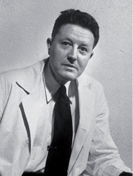
sıçramalı iletkenlik (saltatory conduction) Miyelinli sinir hücrelerinde sinyalin (eylem gizilgücünün) bir Ranvier düğümünden öbürüne sıçradığı bir sinir sinyali iletim biçimi.
sıfır sıralı korelasyon (zerro-order correlation) İki değişken arasında diğer ilişkili değişkenleri sabit tutmadan hesaplanan bir korelasyon; sıfır sıralı bağlılaşım. Bu korelasyon, -1 ile+1 arasında değişiyor
sığlaşma Bkz. duygu.
sıkıntı 1. (embarressement, confusion) Hoş olmayan tasa ve bir ölçüde karışıklık ile refleks çatışmalarının yol açtığı duygusal durum. 2. (distress) Bir karışıklığın, bozukluğun neden olduğu güç durum ya da etkili ve sürekli ruhsal ve bedensel yorgunluk. 3. (poverty, indigence) Yokluğun ve parasızlığın neden olduğu geçim darlığı. 4. Büyük acı, güçlük, zorluk.
sıkıştırma tekniği (squeeze technique) Erken boşalma tedavisinde, erkeğin boşalmak üzere olduğunu duyumsadığı an, erkeğin ya da eşinin penisin uç bölümünü boşalma itkisi ortadan kalkıncaya dek sıkarak beklemesi.
sık rastlanan engeller (high incidence disabilities) Genel nüfusta yüzde 2-3 dolayında görülen zekâ geriliği, bedensel engel, öğrenme güçlükleri, duygusal bozukluklar, konuşma bozuklukları gibi engeller; sık rastlanan özürler.
sık rastlanan özürler Bkz. sık rastlanan engeller.
sınama (trial) 1. Belli bir sonuca ulaşmak için gösterilen bir çaba; özellikle bir dizi çabadan biri. 2. Deneylerde ya da testlerde tek deneme; belli bir uyarıcı grubunun yol açtığı tek tepki karmaşası. 3. Bir şeyi deneme ya da kanıtlama süreci. Bkz. sınama yanılma yoluyla öğrenme.
sınama-yanılma yoluyla öğrenme (trial-and-error learning) Hedefe ulaşmak için yapılan davranımlardan “sorun”un çözümüne yardımcı olanların benimsenmesi, öbürlerinin yinelenmemesi biçiminde gerçekleştirilen öğrenme; sonuçlara ilişkin geribildirim alarak yapılan öğrenme; geribildirimle öğrenme, deneme-yanılma ile öğrenme. Yazıyı yeni öğrenen çocuk, öğretmeninden harfleri doğru yazıp yazmadığına ilişkin bir geribildirim alamazsa, doğru yazıp yazmadığını bilemez. Okullarda yapılan ara sınavlar da öğrenci için bir geribildirimdir. Bilimsel olarak, ilk kez Thorndike’ın incelemiş olduğu sınama-yanılma yoluyla öğrenmede öğrenen, amaca ulaşmak için birçok yolu deneyen davranımlar yapmaya güdülenmiş olmalıdır. Birey, sonuçta olumsuz davranımları yinelemekten vazgeçecek; olumlu olanları sürdürecektir. Labirent deneyleri, bu öğrenme biçimine iyi bir örnek oluşturuyor. Thorndike, bu konudaki deneylerden hazırlık ilkesi (güdülenme), yineleme ve alıştırma, davranışların sonucunun önemi gibi öğrenme ilkelerini çıkarmıştır. Thorndike, 1930’larda çevredeki hoş uyarıcıların, hoş olmayanlardan daha çok yinelendiği görüşünü dile getiren etki yasasına (etki ilkesine) daha çok önem vermeye başlamıştır. Bununla, psikolojiyi daha sonra çok etkileyecek olan pekiştirme ilkesinin de tohumlarını atmıştır. Fiziksel, toplumsal ve duygusal birçok beceri, sınama-yanılma yöntemiyle öğreniliyor. Bkz. öğrenme.
sınav (examination) Sınıf geçme, bir okulu bitirme, bir üst okula girme durumundaki öğrencilerin ya da bir işe girmek isteyenlerin zekâ, yetenek, bilgi ve beceri derecesini belirlemek için yapılan sözlü ya da yazılı yoklama; imtihan.
sınavda başarılı olma ( being successful in the exams) Girilen sınavda istenen en az yeterliği gösterme. Sınavda Başarılı Olmak İçin Bilinmesi ve Yapılması Gerekenler: Bunlar şöyle sıralanıyor: (1) Sınav gözde büyütülmemelidir. Hiçbir sınav ölüm kalım sorunu değildir. Bu gerçeği unutmayarak kişi kendini gereksiz yere strese sokmamalıdır. Çevrenin olumsuz etkilerine kulak asmamak da önemlidir. Çünkü hiç kimse, sınava girecek kişinin başarıulı olup olmayacağını tam olarsak kestiremez. Bu nedenle sınava girecek olan kişi asla özgüvenini sarsmamalıdır. (2) Her sınav, kişinin başkasından çok kendisiyle yarışı olarak görülmelidir. Başarısızlığı bir felaket gibi göreceğine, başaramama durumunda neler yapabileceğini düşnmelidir. Örneğin, bir sonraki sınava daha güçlü olarakhazırlanmayı düşünebilir. (3) Kişi kendisini başkalarıyla karşılaştırmamalıdır. Kendini başkalarının yerine değil, kendi yerine koymalıdır. (4) Sınavdan yeteri kadar önce şu konularda bir karara varmalıdır: a) Bildiği ve bilmediği konuları belirlemelidir. b) Süreyi nasıl kullanacağını, soruları yanıtlarken nelere dikkat edeceğini saptamalıdır. c) Önce kolaylıkla öğrenebildiği konuları öğrenmelidir. ç) Dinlenme, beslenme ve yeterince uyumaya dikkat etmelidir. Sınav arifesine, şöyle bir göz atma gereksinimi duyduğu işler dışında pek bir şey bırakmamalıdır. d) Sınavdan önceki akşam, rahatsız etmeyecek besinler yenmeli, zamanında yatılmalıdır. e) Sabah kahvaltısı ihmal edilmemeli, kimseyle can sıkıcı tartışmalara girilmemelidir. f) Aşşırı heyecan, en büyük düşmandır. İşiniz o düşmanla muhatap olmamızı gerektirmediğine; muhatabımızın sorular olduğuna göre, aşırı heyecan bir yana bırakılıp soruları çözmeye bakmalıdır. g) Sınavla ilgili açıklamalar iyi dinlenmeli, ve onlara uyulmalıdır. ğ) Sorular dikkatle ve tümüyle okunarak yanıtlamaya geçilmelidir. h) Önce iyi bilinen sorular çözülmeli; iyi bilinmeyen sorulara takılıp zaman yitirilmemeli; kalan sürede onlar yanıtlanmaya çalışılmalıdır.
sınıf (class) Belli ölçülere göre ortak özellik taşıyan insan, nesne ya da kavram kümesi; öbek. 2. Üretime katkıları, üretimden aldıkları pay ve üretim ilişkilerinin ya da üretim araçlarının mülkiyetine sahip olma bakımından konumları birbirine benzeyen; bu konumlarının bilincinde olan insanların oluşturduğu toplumsal gruplardan her biri. Bkz. sınıfa katma; sınıf geçme; sınıflama ölçekleri; sınıflandırıcı çiftleşme; sınıflandırma; sınıflandırma testi; sınıf testi; sınıf toplumsal çizgesi; sınıf yönetimi; toplumsal sınıf.
sınıfa katma (class inclusion) Parça-bütün ilişkilerini anlama. Piaget’ye göre, bir nesneyi aynı anda birden çok sınıfa sokma işlemi. Bilişsel gelişimin somut işlemsel evresindeki çocuğun, daha genel nesne sınıflamalarını olduğu kadar, alt gruplar arasındaki ilişkileri de aynı anda düşünmeyi öğrenmesi. Çocuk, bu evrede kişisel etkenlere, algısal özelliklere ve ortak işlevlere dayalı bir sınıflandırmadan, aşama sıralı ilişkilere dayalı bir sınıflandırmaya geçiyor. Örneğin, maymun bir memelidir (alt sınıflandırma); ama ayrıca omurgalı bir hayvandır (genel sınıflandırma). Bkz. bilişsel gelişim kuramı.
sınıf geçme (promotion) Bir öğrencinin bir üst sınıf öğrencisi olmaya hak kazanması ve bir üst sınıfa geçmesi.
sınıfın tehdit edici ortamı Bkz. bilişsel öğrenme.
sınıflama ölçekleri Bkz. ölçek.
sınıflandırıcı çiftleşme (assortative mating) Fiziksel ya da toplumsal nedenlerle belli kişilerin eş olarak seçilmesi ya da seçilmemesi.
sınıflandırma (classification) Varlıkları gruplara ayırma, belli ilkelere göre düzenleme ya da daha kolay tanımlayabilmek için benzer özelliklere sahip olan birimleri öbürlerinden ayırarak bir araya getirme; tasnif etme, öbeklendirme, sınıflama. 2. Karşılaştırma yapmak amacıyla sınıflar oluşturma.
sınıflandırma testi (classification test) classification test) 1. Öğretim amacıyla öğrencileri gruplamaya, sınıflandırmaya ya da sınava girenleri yetenekleri, başarıları bakımından sınıflandırmaya yarayan test. 2. Algılama ve benzerlikleri ayırt etme yeteneğini ölçen nesnel bir test. Bu sınıflandırma testi, şu tür soruları içeriyor: Yeşil, mavi, siyah, sıcak, turuncu; 5, 3, 6, 1, 9; yürümek, koşmak, durgun, dinlenmek, bakmak. Sınava giren kişiden, her soruda öbürlerinden ayrılan ya da öbürlerine banzemeyenleri seçmesi isteniyor.
sınıf testi (classroom test, informal objective test) Sınıfta kullanılmak üzere öğretmenlerce hazırlanan çoktan seçmeli ya da kompozisyon türü test; standartlaştırılmamış test.
sınıf toplumsal çizgesi (class sociogram) Sınıftaki toplumsal ilişkileri belirlemek amacıyla uygulanan toplumsal ilişki ölçümünün değerlendirilmesi sırasında kimlerin kimleri istediğini; bu istemelerin karşılıklı olup olmadığını; kümeleşmelerin durumunu daha açık bir biçimde gözler önüne sebilmek için hazırlanan bir çizge; sosyogram.
sınıf yönetimi (classroom management) Sınıfın çalışmalarına yön verme ya da sınıf çalışmalarını yönetme; sınıf idaresi. Bu görev, özellikle disiplin, sınıftaki demokratik toplumsal ilişkiler, araç gereçlerin bakımı ve kullanımı, dersliğin görünümü gibi konuları içeriyor.
sınırda kişilik bozukluğu (borderline personality disorder) Özellikle nevroz ile psikoz arasındaki sınırda bulunan; özellikleri herhangi bir sınıflandırmaya sokulamayan ya da mekanizmaları psikotik olup da davranışları psikotik olarak değerlendirilmesini gerektirmeyen kişilik yapısı. Bu özellikleri taşıyan kişi, sürekli olarak, normal, uyumlu işleyişle gerçek ruhsal bozukluklar arasındaki sınır çizgisinde yaşıyor. Genellikle pek de açık olmayan bir dizi belirgin istikrarsızlıkla tanımlanıyor. Örneğin, bireyler arası ilişkileri istikrarsızlık eğilimi gösteriyor. Abartılı ve orantısız duygular, yaygın biçimde ve yersiz, yoğun öfke patlamaları ve şiddet sergiliyor. Özimgesi bozulabiliyor. Sıklıkla kumar oynuyor, soygunculuk yapıyor. Can sıkıntısı yaşıyor. Gerçek ya da düşsel terkten kaçınmaya yönelik yoğun çabaları oluyor. Bireyler arası ilişkileri, aşırı idealleştirme ile aşırı küçümseme arasında; özimgesi de kendini aşıp üstün görme ile aşırı aşağı görme arasında gidip geliyor. İntihar girişimlerini ya da tehditlerini ya da kendine zarar verici davranışları, duygusal dengesizlikleri yineliyor. Dürtüsellik, süreğen bir boşluk duygusu; geçici ve strese bağlı paranoid düşünceler ya da ağır çözülmeler sergiliyor.
sınırdaki şizofreni (borderline schizoprenia) Bazen gizilgüç anlamında şizofrenik olan; ancak stres karşısında şizofrenik tepkiler verebilmesine karşın, gerçeklikle daha bağlarını koparmamış olan şizofrenik kişide görülen bozukluk.
sınırlı bellek yitimi (catathymic amnesia) Belli bir yaşantının ya da sıkı ilişkileri bulunan belli yaşantıların unutulması.
sınırüstü zekâ (borderline intelligence) 1. Zihinsel gelişim basamağı bakımından kolaylıkla normal ya da zekâ geriliği sınıflarından birine konulamayacak durumda olan zekâ. Bu tanım daha çok, uygun toplumsal durumlarda yaşam koşullarına uyabilecek ve bir kurumda bakımına gerek olmayan hafif geri zekâlıları belirtiyor. 2. Z. B. ile gösterildiğinde yetenek derecesi 70-80 arasında olan kimse. Bkz. zekânın derecelendirilişi.
sıradüzen Bkz. aşama sırası; hiyerarşi.
sıralama becerileri (sequencing skills) Nesneleri, kavramları, etkinlikleri ve benzerlerini doğru bir biçimde sıralama yetisi. Örneğin, devimsel tepkileri doğru sıraya göre ve kesintisiz bir biçimde yapma, sözcükleri tümce içinde yerinde kullanma.
sıralama ölçekleri Bkz. ölçekler.
sıralama ölçekleri Bkz. ölçekler.
sızan kova varsayımı Bkz. unutma.
sızıntı (leakage) 1. Gerginliğe yol açan koşulların değişmesi ya da kalkması sonucu, gerginliğin gevşemesi. 2. Ruhsal tedavi sırasında, başka biri ile olup bitenler üzerinde konuşma ve tartışma.
sigma değeri Bkz. standart puan.
sigma puanı Bkz. z puanı.
siklofreni Bkz. manik depresif psikoz.
siklotimi (syclothymia) Özellikle iç uyaranların etkisiyle ve düzenli aralıklarla etkinlik-durgunluk, canlılk-bitkinlik, mutluluk-mutsuzluk arasında gidip gelme durumu; dönerlik. Bkz. siklofreni; siklotimik kişlilik.
siklotimik kişilik Bkz. döner kişilik; Kretschmer’in bedensel yapı sınıflaması.
silah etkisi (weapons effect) Silahların yalnızca bulundurulmasının bile saldırganlık olasılığını artırma eğilimi.
silvius kanalı (aqueduct of sylvius) Beyinde üçüncü odacık ile dördüncü odacık arasındaki iletişimi sağlayan kanal. Bkz beyin.
simge (symbol) 1. Yapısal bir ilişki, çağrışım, anlaşma, rastlantısal benzerlik gibi yollarla başka bir şeyi temsil eden, onun varlığına işaret eden nesne, figür, imge, mimik, eylem, olay, ses, harf, sözcük, işaret ve benzerleri; sembol, rumuz. Örneğin, “ağaç” sözcüğü, ağacın; + işareti toplama işleminin; kırmızı zemin üzerinde beyaz ay yıldız Tükiye’nin simgesidir. 2. Piaget’ye göre, dışsal değil, içsel, kişisel bir temsil. Bkz. simgesel işlev. 3. Psikanalize göre, bilinçsiz, bastırılmış bir istek, dürtü, ilişki, gereksinim, karmaşa, çatışma ve benzerlerini temsil ettiğine inanılan düşünceler, davranışlar, imgeler, belirtiler. Bkz. belirti; edim hataları; simge; simgecilik; simgeleştirme; simgesel düşünme; simgesel etkileşimcilik; simgesel eylem; simgesel işlev; simgesel süreç; simge setleri; üretken simge.
simgecilik (symbolism) 1. Simgelerin ya da simgeler kuramının sistemli biçimde kullanılması. 2. Freud’a göre, bilinçdışı baskıya alınmış olan duygu ve isteklerin kılık değiştirerek farklı belirtilerle bilinç alanına çıkması. 3. Estetikte, belirli bir yöntem olarak düzenli bir biçimde simgeler kullanan bir sanat türü.
simgeleştirme (symbolization) Psikanalizde, benliğin tehdit olarak algıladığı ve bu nedenle bastırdığı bir dürtünün, isteğin, duygunun ya da nesnenin yerine bir temsilini ya da simgesini koyma süreci; sembolleştirme; sembolizasyon. Bu anlamıyla simgeleştirmenin, üstbenliğin sansüründen kurtulmak gibi bir işlevi vardır. Bu süreç, rüyalar, histerik belirtiler, takınaklar, zorlanımlar, dil süçmeleri ve benzerlerinin oluşumunda önemli bir etkendir. Örneğin, cinsellik konusunda duyumsadığı suçluluk ya da kaygı duyguları nedeniyle cinsel isteklerini bastıran kişinin rüyalarında cinsel etkinlikler, merdivenden inip çıkma, yüzme, dağa tırmanma gibi simgelerle anlatılıyor. Freud’dan ayrılmasına karşın Jung da rüyalara büyük bir önem vermiş ve mitolojik, dinsel simgelerin ortak bilinçdışına ışık tuttuğunu; simgeleştirmenin her türlü sanatın, mitin ve dinin temeli olduğunu savunmuştur. Bkz. analitik psikoloji; bastırma.
simgesel düşünme (symbolic thinking) Varlıklara, somut olay ve olgulara dayanarak düşünmekten çok, simgeler ve soyut kavramlardan yararlanarak düşünme. Örneğin, cebirsel işlemler, simgesel düşünmeyi örneklendiriyor.
simgesel etkileşimcilik (symbolic interactionism) Sosyolojide ve sosyal psikolojide George Herbert Mead’ın geliştirdiği ve her türlü insan etkileşiminde simgelerin ve dilin oynadığı merkezi rolü vurgulayan bir yaklaşım. Bu yaklaşıma göre insanlar simgelerle iletişim kuruyor ve bireysel olduğu kadar toplumsal gerçeklik de insanlar arasındaki anlamlı etkileşimden doğuyor. “Her türlü gerçeklik, iletilen gerçekliktir.” Bu, simgesel iletişimle yorumlanıyor; dolayısıyla kişinin gerçekliğe bakış açısı, simgeleri nasıl yorumladığına bağlı bulunuyor. Başka deyişle toplumsal gerçeklik ve insan davranışı, hem biçim hem de içerik açısından simgesel. iletişimli ve özneldir. Bkz. etiketleme kuramı.
simgesel evre Bkz. işlem öncesi evre.
simgesel eylem (symbolic action) Tırnak yeme, saç çekme gibi altta yatan bir anlamı dışa vuran bilinçsiz, kendiliğinden bir hareket. Bkz. belirtisel eylem.
simgesel işlev (symbolic function) Piaget’ye göre, çocuğun sözcük, sayı, imge gibi simgeleri (zihinsel temsilleri) anlamlandırıp kullanma yetisi. İşlemöncesi düşüncenin belirgin bir özelliği olan bu yeti, simgesel oyunlarda, dilde ve ertelenmiş taklitte görülüyor. Bkz. bilişsel gelişim kuramı; simge.
simgesel süreç (symbolic process) Kavramlar, işaretler, formüller, imgeler ve benzeri simgelerin kullanımına dayalı her türlü zihinsel (bilişsel) etkinlik; sembolik proses.
simge setleri (symbols sets) İnsanların bir durumu tanımlamak ve toplumsal gerçekliği kurgulamak ya da anlatmak için kullandıkları simge grupları. Bu simgeler üç grupta toplanıyor. (1) Ses simgeleri: Sesin tonu, tınısı, yüksekliği, hızı ve benzerleri. (2) Yüz anlatımı, bedensel duruş. (3) Cinsiyet, yaş, otorite ve benzerlerini gösteren giysiler ve aksesuarlar. İletinin biçimini belirleyen bu simgeler, iletiden bağımsız ve iletiye ek olarak birçok bilgi ve ipucu veriyor.
sinaps (synapse) Sinir yolunda bir sinir hücresinin ucunun başka bir sinir hücresinin gövdesiyle ya da gövde zarıyla birleşme noktası. Birinci sinir hücresinden gelen sinir sinyali, bir sinir iletici aracılığı ile bu birleşme noktasında diğer sinir hücresinde de aynı biçimde bir sinyal yaratıyor. Sinapslar polarizedir; yalnızca bir yönde sinyal iletiyor; yorulmaya elverişli olduklarından sinyal geçişine direniyor ve çok çeşitli ilacın, kimyasal maddenin, oksijen eksikliğinin etkilerine açık bulunuyor. Bkz. sinir hücresi.
sindirimcil kişilik Bkz. Sheldon’un bedensel yapı sınıflaması.
sinema (cinema) 1. Sinema filimlerini düzenleme ve yönetme sanatı. Sinema denildiğinde bugün dramatik yapı, sahne düzeni, oyun, konuşma, görüntü çerçevelemesi ve düzenlemesi, kamera hareketleri, dekor, aydınlatma, ses, müzik, kurgu gibi bir filmi yaratan bütün öğelerin en eygun biçimde lkullanılmasını gerektiren sanat ve sanayi kolunu anlıyoruz. 2. Sinema filmi oynatılan salon.
sinerji (synergy) İki ya da daha fazla güç, etken, organ ve benzerlerinin birlikte, uyumlu bir işbirliği içinde çalışması.
sinerjik evlilik (synergic Marriage) Eşlerin, birbirinin ruhsal gereksinimlerini gidermede olumlu katkılar yaptığı bir evlilik ilişkisi. Bkz. sembiyotik evlilik.
sinir (nevre) MSS (merkezi sinir sistemi) ile vücudun öteki duyu organları, kasları, salgı bezleri arasında elektro-kimyasal sinyallerle bilgi alışverişi sağlayan liflerden oluşan ipliksi bir yapı. Bu yapılar, ya çevreden beyne doğru (merkeze giden) ve deriden, eklemlerden, kaslardan ve iç organlardan gelen duyusal uyarıcıların algılanmasına hizmet ediyor ya da beyinden çevreye doğru ve kasların ya da organların çalışması için gerekli yönergeleri taşıyor. Sinir türleri arasında duyusal, devimsel, özerk, ketleyici ve uyarıcı sinirler yer alıyor. Bkz. bedensel sinir sistemi; çevre sinir sistemi; merkez sinir sistemi; nöropsikoloji; özerk sinir sistemi; parasempatik sinir sistemi; sempatik sinir sistemi; sinir ağı; sinir akımı: sinir alıcısı; sinir argınlığı; sinirbilimci; sinir bilimi; sinir bozukluğu; sinir çöküntüsü; sinir hastalıkları bilimi; sinir hücresi: sinir ileticileri; sinir koruyucu; sinir lifleri; sinir merkezi; sinirsel alışkanlık; sinirsel iletim; sinirsel tepi; sinirsel tümevarım; sinirsel uyarım; sinirsel yansıma; sinir sistemi; sinir teli; sinir tıkanması; sinir yolu; sinir yolu kusuru.
sinir ağı (neural network) Bağlantıcı yaklaşıma göre, beyin işlevlerinde merkezi bir yer tutan ve birbiriyle bağlantılı sinirlerden oluştuğu varsayılan bir ağ sistemi. Bu sistemi oluşturan çok sayıdaki basit işlem birimi, karmaşık bir tetikleme-engelleme düzeni içinde birbirine bağlı bulunuyor ve etkinliği, bu bağlantılarla öteki birimlere yayılıyor. Belli bir birimin var olan durumu ve öteki birimleri tetikleme gücü, onları hareket ettirme etkisiyle biçimleniyor. Başka deyişle her birimin, öteki birimleri etkileme konusunda belli bir etkinlik değeri, ağırlığı vardır. Bu ağırlık, birimlerin karşılıklı olarak sahip olduğu bağlantı sayısına, öteki birimlerin onu etkileme gücüne bağlı bulunuyor ve bu deneyimden etkileniyor; yani öğrenmeye bağlı olarak değişiyor. Bu ağları yalnızca verilen yönergeleri sabit bir sıraya göre yürüten geleneksel bilgisayar sistemlerinden ayıran başlıca özellik, onun bu öğrenme yeteneğidir. Başka modellerden farklı olarak sinir ağları, paralel işlemler yapabiliyor; yani bilgi işlemleri sırasında farklı birimler, ortak bir çözüm üretecek biçimde sorunun farklı yanlarını birbirinden bağımsız olarak ele alabiliyor. Bkz. bağlantıcılık; sinir akımı; sinir sistemi.
sinir akımı (nevre impulse) 1. Uyarılması sonucu sinir telciğinde yayılan sinir akımının ya da dengenin bozulması. 2. Sinir hücresindeki sinir akımının tek atışı. Sinir akımı, bir sinir hücresinin, eşik uyarımı ile oluşturarak yaydığı elektrik akımıdır. Bu akım, sinir zarının sodyum ve potasyum iyonları gibi iyonlara karşı geçirgenliğinin hızla değişimi ile doğuyor. İyonlar sinir zarından geçerken, sinir akımının en belirgin özelliği olan elektrik akımı oluşuyor. Doğan sinir akımı, saniyede 120 metreye varan büyük bir hızla tüm sinir hücresi boyunca ilerliyor. Bu akımlar, “ya hep ya hiç” yasasına göre oluşuyor. Başka deyişle sinir hücresinin büyüklüğü ve durumu ölçüsünde beliriyor. Bu yasaya göre sinir hücresi ya da dokusu, akımı izleyen kısa bir süre, yalnızca bir kez duraklayıp dinlenmeye geçiyor. Bu nedenle çok güçlü de olsa hiçbir uyarıcı, saniyenin binde birkaçı kadar bir sürede, dokuyu uyaramıyor. Sinir hücresi, bundan çok kısa bir süre sonra yeniden akım verir duruma geçiyor. Bkz. sinir ağı; sinir ileticileri; sinir sistemi.
sinir alıcısı (neuroreceptor) Bir sinir hücresinin yüzeyinde bulunup bir sinir ileticisi ile uyarıldığında, sinir hücresinin tetiklenmesi ya da engellenmesi gibi tepkiler veren yapı. Sinir alıcıları, sinir ileticilerinin anahtar rolü oynadığı bir kilit mekanizmasına benzetilebilir. Bkz. sinir ağı; sinir akımı; sinir hücresi.
sinir argınlığı (neurasthenia) Yorgunluk, uykusuzluk, sinirlilik, kaygı, gürültüye katlanamama, baş ağrısı gibi bedensel ve ruhsal belirtilerle ortaya çıkan bozukluk; nevrasteni. Bugün bu bozukluk, ağırlıklı olarak duygusal çatışmalar, gerilimler gibi ruhsal etkenlere bağlanıyor.
sinir bilimci Bkz. nörolog.
sinir bilimi Bkz. nöroloji.
sinir bozukluğu (nervous disease) Sinir sisteminin ve işlevlerinin herhangi bir bozukluğu. Çoğu kez nevrotikleri de kapsayan oldukça hafif zihinsel bozukluklar. Bkz. zekâ geriliğinin yol açtığı ruhsal bozukluklar.
sinirce Bkz. nevroz.
sinir çöküntüsü (nervous breakdown) Birdenbire başlayan ve şiddetli bir kaygı yaratarak günlük yaşam düzenini bozan her türlü ruhsal bozukluk için halk dilinde kullanılan bir terim.
sinir dizgesi Bkz. sinir sistemi.
sinir gözesi Bkz. sinir hücresi.
sinir hastalıkları bilimi Bkz. nöropatoloji.
sinir hücresi (neuron) Sinir hücrelerinden biri; nöron, sinir gözesi. Sinir hücresi, sinir sisteminin temel birimidir. Çekirdeği içeren hücre gövdesi ile dentrit ve akson adı verilen kollardan oluşuyor. Dentrit ve aksonlara lif de deniyor. Dentritler, sinir hücresinin alıcı ucu; aksonlar da tepileri (impulslar’ı) öbür etkileyicilere (effectorlar’a) ve sinir hücrelerine veren ucudur. Akson, her sinir hücresinde tektir ve onun uzun olan bölümüdür. Birden çok sayıda olan dentritler ise gövdeden ayrılır ayrılmaz, incelip kısalıyor. Aksonlar, çevresel sinir sisteminde yenilenebiliyor ve onarılabiliyor. Merkezi sinir sisteminde bu olanak bulunmadığından, oradaki yıkım, kalıcı oluyor. Dört ayrı tip sinir hücresi vardır. Bunlardan hareket sinir hücreleri, merkezi sinir sisteminden verilen komuta göre, uyaranların gerekli organlara taşınmasını sağlıyor. Uyum sağlayıcı (ara) sinir hücreleri, duyusal ya da devimsel yollar üzerinde birleştirici çizgiler oluşturuyor. Çalımsı görünümdeki kısa ara sinir hücreleri ise yalnızca merkezi sinir sisteminde bulunuyor. Sinir sisteminde en büyük yeri, uyum sağlayıcı (ara) sinir hücreleri tutuyor. Öte yandan, alıcı sinir hücreleri, uyum sağlayıcı sinir hücreleri ve etkileyici sinir hücreleri biçiminde bir sınıflama da yapılmıştır. En çok, uyum sağlayıcı sinir hücreleri uzmanlaşmıştır. Bunlar, organizmanın, çevresindeki uyarıcılara çok çeşitli uyumsal tepki yapabilmesine olanak sağlıyor. Sinir sistemi gelişmiş canlılarda aksonun çevresi, bir kılıfla kuşatılmıştır. Kılıfın dışındaki nörilema ( neurilemma) denen ince zar ve nörilema ile akson lifi arasında, miyelin kılıfı denen bu yağlı kılıf, tepi (impuls) iletiminde çok etkin bir rol oynuyor. Yalnızca çevresel sinir sisteminde bulunan nörilema, onarım yapıyor. Mekkezi sinir sisteminde ise nörilemaya benzeyen glia hücreleri bulunuyor. Tüm aksonlarda miyelin kılıfı yoktur. Miyelin kılıfının, Ranvier boğumu denilen bölümleri vardır. Tepiler, bu boğumlar sayesinde sıçramalı bir biçimde ve yeniden oluşup ilerleyerek, her boğumda gücü azaltılmadan iletiliyor. Miyelinli liflerde tepi iletimi, saniyede 15-20 metre; miyelinsizlerde ise 1-5 metredir. Miyelin kılıfı, akım kaçağını önlüyor. Yeni doğan çocukların lifleri miyelinsizdir. O nedenle bir uyarana karşı özgül olmayan bütünsel sıçrama hareketiyle karşılık veriyor. Seçici olan hücre zarı ise, ortamla ilişkiyi sağlıyor. Kimi maddeleri içeri alıyor, kimisini dışarıda bırakıyor. İki yanındaki basınç ve iyon dengesini korumak, hücre zarının temel özelliğidir. Bu özelliği ile o, tepi iletimini gerçekleştiriyor. Zarın iki yanındaki negatif ve pozitif iyonların dengeli durumuna polarizasyon deniyor. Bu dinlenme durumunda hücre içi, dışına göre -71 mV bir değere sahip oluyor. Depolarizasyonda ise bu değer, +30 mV’a yükseliyor. Bu işleyiş, şöyle bir gelişim gösteriyor: Mekanik, kimyasal ya da elektriksel herhangi bir uyarım sonucu, bir sonraki sinir hücresinde “dereceli gizilgüç” oluşuyor. Bu gizilgüç, mekânsal ve zamansal olarak, akson tepeciğinde toplanıyor. Belirli bir uyarılma eşiğine ulaşınca (tepi birikimi eşiği aşınca); yani eylem gizilgücü adı verilen, tepi ilerlerken görülen bu “ya hep ya hiç” durumu oluştuğu zaman, aksonda iletim başlıyor. Bu sırada kimyasal olarak da hücre zarının dışındaki Na+, sodyum kapısından içeri giriyor; K+ da potasyum kapısından dışarı çıkıyor. Hücre içindeki protein anyonları (-) ile hücre içindeki Cl (-) iyonları da elektrostatik biçimde bu dengenin bozulmasında ve korunmasında etken oluyor. Hücre zarı, daha sonra yeniden polarize duruma geliyor. Sivri gizilgücün oluştuğu; yani zarın depolarize olduğu anda zar, bir başka uyarıcıya yanıt vermiyor. Bu duruma mutlak refrakter dönem deniyor. Zarın uyarılması bittikten sonra -71mV ile tanımlanan eski durumuna dönmesi, zaman alıyor ve bu arada zar uyarılabilirse de bu, daha zor oluyor. Bu dönem de göreli refrakter dönem diye adlandırılıyor. Bkz. sinir ağı; sinir akımı; sinir ileticileri.
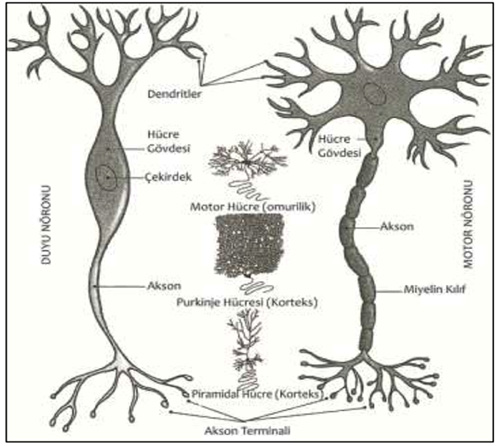
Sinir Hücresi
sinir ileticileri (neurotransmitter) Sinirsel uyarımın bir sinir hücresinden öteki sinir hücresine iletilmesini sağlayan kimyasal maddelerin ortak adı; nörotransmiterler. Bir sinirsel uyaranın, sinir hücresinin akson düğümüne ulaştığında presinaptik zardan salgılanan bu maddeler, sinaps yarığından geçerek öteki sinir hücresinin dentrit tomurcuklarını (postsinaptik zarını) eksitasyon ya da ketlenme için etkinliğe geçiriyorlar. Sinaptik, görevi bittiğinde parçalanıyor. Hücre, nörotransmiter maddeleri kan dolaşımında gerekli bileşenleri alarak bireştirdiği gibi, bu parçalanan nörotransmiterler de yeniden kullanılıyor. İşleyiş, şöyle gerçekleşiyor: Sinir hücresi uyarılınca Na+ içeri giriyor ve golgi cisimciklerinde paketlenmiş olan transmitterlerin iletilmesini sağlıyor. Sivri gizilgüç aşağı indikçe bu paketçikler de iniyor. Bu sinaptrik kesecikler, sinir akımının etkisiyle düğümün en ucundaki zarda kaynaşıyor ve çatlayarak içlerindeki nörotransmitter maddeyi boşluğa akıtıyorlar. Postsinaptik zarda bulunan ribozomlardaki proteinler, belli nörotransmitterlere karşı duyarlı oldukları için bir gizilgüç oluşuyor ve bu güç de aksona iletiliyor. Nörotransmiterler genellikle klasik, aminoasit, peptit nörotransmiterler ve nöroregülatörler olarak dörde ayrılıyor. Gerçek Nörotransmiter Maddelerin Yerine Getirdiği Dört Görev: Bu görevler şöyle sıralanıyor: (1) Maddenin hücre içinde sentezlenmesini ve yerine iletilmesini gerçekleştiriyor. (2) Sinir akımının etkisinde vezikülün içinde eçebilmesini sağlıyor. (3) Post sinaptik zarda bu maddeyi tanıyan alıcıları oluşturuyor. (4) Görevi tamamladıktan sonra sinaptik bölgede parçalanıp geri alınması görevini yapıyor. Bu konuda en önemli dört nörtotransmiter madde şunlardır: (1) Asetilkolin: Bu madde, beyinde, özerk sinir sistemi gangliyonlarındabulunmasını, akson zarıyla kaynaşmasını ve içindekilerin sinaptik boşluğa g, parasempatik sinir sisteminin hedef organlarında ve sinirle kas kavşağında bulunuyor. Beyinde yalnızca uyarıcı; ötekilerde ise hem uyarıcı hem de ketleyici etki yapıyor. Kan dolaşımı sırasında sinir hücresince alınan kolin ve asetil koenzim A’nın senteziyle oluşuyor. Etkinliğini, kolinesteraz emzimi sona erdiriyor. Asetilkolinin postsinaptik zardaki alıcıları sinirle çizgili kas kavşağında nikotinik; beyinde muscarinic’tir. (2) Nöroepinefrin: Beyinde, kan damarlarında, glia hücrelerinde ve öteki organlarda bulunuyor. Beyinde ketleyici; hedef organlarda ise uyarıcı işlev görüyor. Trosinden önce dopa; daha sonra nöroepinefrin sentezleniyor. Nöroepinefrini de monoamino eksidaz emzimi yıkıyor. Barbituratlar ise etkilerini nöroepinefrin etkinliğini ketleyerek gösteriyor. Nöroepinefrin, insanın heyecan durumuyla ilgilidir. (3) Dopamin: Beyinde bulunan bu madde, ketleyicidir. Aminoasit’in (trosin’in) sinir hücresinde sentezlenmesiyle oluşuyor. Yıkımı, monoaminoeksidaz emzimince gerçekleştiriliyor. Dopamin, insanın duygusal durumlarında ve amaçlı hareketlerinde rol oynuyor. Dopamin eksikliği, Parkinson hastalığında da etkili oluyor. (4) Serotonin:Aminoasitten (triptofan’dan) sentezlenmekte olan bu madde, beyinde ve omurilikte bulunuyor ve ketleyici bir etki yapıyor. Seretoninin insanda uyku gibi durumlarda etkin bir rol oynadığı biliniyor. Aminoasit nörotransmitterlerden Glumatik asit, beyinde uyarıcı; GABA, beyinde ketleyici; Glisin, arka beyinde ve omurilikte ketleyici etkide bulunuyor. Peptid transmitterler ise bir ya da birkaç aminoasitten, genetik şifreye uygun olarak ribozomlarda sentezleniyor; akson boyunca iletiliyor ve veziküllerde depolanıyor. Sinaptik boşlukta yıkımı yapıldıktan sonra geri alınmıyor. Transmitter maddeler, klasik nörotransmitterlerin duyarlık düzenleyiciliğini yapıyor; yeme davranışında, türe özgü davranışta, su içmede, acıya, ağrıya duyarlıkta etkili oluyor. Beyinde bulunan, sinapsa özgü olmayan nöroregülatörler, sentezlendikleri yerden çok uzaktaki yerlerde etken olabiliyor. Postsinaptik zarı uyarabiliyor, nörotransmiter maddelerin sentezlenmesini ve salınmasını etkiliyor. Psikoaktif ilaçlar, nörotransmiter maddelerin sinirsel iletimdeki etkin rolleri nedeniyle nörotrasnsmitterleri etkilemek için hazırlanıyor. Bkz. sinir hücresi.
sinir koruyucu (neuroprotective) Sinir hücresi ölümünü ve yaralanmasını engelleme gücü olan ilaçlar. Bu terim genel olarak glutamat ile aşırı tetiklenme sonucu oluşan sinir hücresi ölümlerini engelleyen ajanlar için kullanılıyor.
sinir lifleri (nevre fibers) Bir sinir hücresinin gövdesinden dışa doğru uzanan ve sinir sinyalleri taşıyan lifler. Bkz. sinir hücresi.
sinirli çocuk (nervous child) Bedensel ya da zihinsel bir nedenle çok sinirlenen ve kolayca öfkelenen çocuk; asabi çocuk. Bkz ruh durumu.
sinirlilik (nervousness) 1. Birden bire beliren amaçsız ya da içtepisel tepki. 2. Duygusal uyarımlara karşı birdenbire, aşırı ve uyum sağlamayan türden tepki yapma durumu. 3. Halk dilinde, sinirsel bir sağlık bozukluğu. Bkz. öfke.
sinir merkezi (nevre center) 1. Sinir sisteminde, çevreden gelen sinir akımını çevreye giden sinir akımına çaviren bir parça. Sinir merkezi, tek sinir hücresi de karmaşık bir grup sinir hücresi de olabiliyor. Adı ile belirtildiğinde, omurilikteki merkezleri de içeriyor. 2. Sinir sisteminde, çoğu kez beyin ve omurilikte yer alıp, uyarıldıklarında belirli tepkileri olan; yok edildiklerinde de belli işlevlerde büyük aksaklıklara yol açan yerler. Bu merkezler, yerlerine göre; beyin, beyin kabuğu, omurilik, beyincik, otomatik merkezler gibi sınıflandırılıp adlandırılıyor. 3. Beyinde özel görevleri olan ve bağımsız çalıştıkları varsayılan bir grup sinir hücresi. “Sinir” terimi çoğu kez “çevresel sinirler” anlamını dile getirdiği için “sinir merkezi” yerine “sinirsel merkez” demek, daha açıklayıcı oluyor. 1. ve 2. tanımlar sinirsel merkezi; 3. tanım da beyin merkezini belirliyor.
sinir ruhbilimi Bkz. nöropsikoloji.
sinirsel alışkanlık (nervous habit) Kişinin gerginlik, çatışma ve sinirlilik belirtisi olarak amaçsız; ama düzenli birtakım hareketler yapması.
sinirsel bellek yitimi (neurologycal amnesia) Sinir sistemini etkileyen hastalıktan ya da örselenmeden kaynaklanan bellek yitimi ya da bellek kötüleşmesi. İşitsel bellek yitimi, sözel bellek yitimi, görsel bellek yitimi, Wernicke bellek yitimi, bunlar arasında yer alıyor.
sinirsel biliş (neurocognition) Biliş psikolojisinde, beynin belli bölgelerinin, bilişsel işleyişin kimi yanlarında ağırlıklı rol oynadığı varsayımından yola çıkarak bilişsel işlevlerle kimi özel nöroanatomik yapılar arasındaki ilişkileri inceleyen bir dal. Bkz. nöroloji.
sinirsel iletim (neural conduction) Uyaran ve tepilerin sinir sistemi boyunca ya da sinir hücreleri arasındaki iletimi.
sinirsel tepi (neural impulse) Bir sinir hücresi boyunca geçen akım parçası.
sinirsel tümevarım (neural induction) Belirli bir etkinlik sistemi içindeki bir ketlenme süresinin, ilintili olduğu başka bir sistemdeki tepkiyi güçlendirdiği (olumlu iletim sağladığı) ya da belirli bir etkinlik sistemindeki uyarılmanın ilişkili bulunduğu başka bir sistemdeki ketlenmeye yol açtığı (iletimi olumsuzlaştırdığı) görüşü.
sinirsel uyarım (neural exitation) Herhangi bir uyaranla sinir sisteminden bir kesimin ve ona bağlı olan kasların etkin bir duruma geçmesi.
sinirsel yansıma (neural reverberation) Hebb’e göre, uyaranın bilinmesinden sonra beynin kısa bir süre daha eylemini sürdürmesi.
sinir sinyali (nevre impulse) Bir sinir hücresinden ya da ağından geçen ve alıcılardan gelen duyu bilgileri ile etkileyicilere giden hareket bilgilerini taşıyan elektro-kimyasal bir sinyal. Bkz. eylem gizilgücü.
sinir sistemi (nervous system) Vücudun iç ve dış uyarıcılara yönelik tepkilerini denetleyen ve düzenleyen sinir hücrelerinden, dokularından ve organlarından oluşan sistem; sinir dizgesi. Omurgalılarda bu sistem beyin, omurilik, sinirler, gangliya ile alıcı ve etkileyici organlardaki sinir merkezlerinden oluşuyor. Aşağıdaki çizemde sinir sisteminin ana bölümleri ve birbirleriyle ilişkileri gösterilmiştir. Her bölüm, alfabetik sıralamadaki yerinde açıklanmıştır.
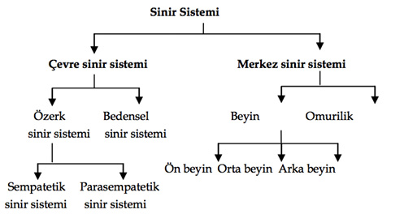
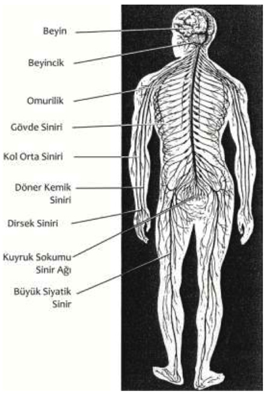
Sinir Sistemi
sinir teli (nevre fiber) 1. Sinir gövdesinden çıkan uzun kılcal uzantılar akson ve dallantılar; sinir iplikçiği. 2. Ak bir zarla kaplı ipliksi sinir hücreleri demeti.
sinir tıkanması (nevre block) 1. Bir sinirin sinir akımını bir yerde geçici olarak iletmemesi ya da aksak iletmesi. 2. Uyuşturucu bir ilaç ya da başka bir etkenle sinir yolları yakınındaki bir bölgenin uyuşması.
sinir yolu 1. (nevre pathway) Bir sinir sinyalinin sinir sisteminde izlediği yol. 2. (neural tube) Oğulcuğun (embriyonun) arka bölümünde bulunan ve daha sonra gelişerek omuriliğe ve beyne dönüşen tüp. Bkz. sinir yolu kusuru.
sinir yolu kusuru (neural tube defect) Sinir yolunun gereğince gelişmemesi ya da kapanması sonucu omurilik, beyin ve kafatası da içinde olmak üzere, merkezi sinir sisteminde ortaya çıkan ansefali ve spina bifida gibi doğum kusurları. Bugün bu tür kusurlar, gebelik sırasında yapılan standart tarama testleriyle belirlenebiliyor. Bkz. alfa fetoprotein.
sinkop (syncope) Beyne giden kan miktarının birdenbire azalması sonucu ortaya çıkan geçici bir bilinç yitimi, bayılma.
sinkretik düşünce (syncretic thought) Piaget’ye göre, işlem öncesi evredeki (simgesel evredeki) çocuklarda belirleyici olan temsili düşünme biçimi. Çocuğun yaşamındaki ilk; yani mantık öncesi düşünme biçimini karşılayan bu evrede çocuk, beniçinci, çoğu kez animistik düşünce süreçleri sergiliyor. Örneğin, basit bir tahta parçasına araba diyebiliyor; bir sopaya atlayıp ata biniyormuş gibi koşabiliyor. Bu evrede bağlantılar, rastlantıya bağlı olarak kuruluyor gibidir. Bkz. bilişsel gelişim kuramı.
sinyal (signal) 1. Bir şeyi anlatmakta kullanılan bir işaret; uyarı. Bkz. simge. 2. Bilgi ileten bir davranış yapısı. 3. Belli bir tepkiye yol açan bir uyarıcı. Bkz. sinyal saptama kuramı. 4. İletide kullanılan, örneğin, görüntü sinyali gibi şey.
sinyal kaygısı (signal anxiety) Psikanalize göre, içerden ya da dışarıdan gelen bir tehdit ya da tehdit beklentisi karşısında duyulan kaygı. Freud, konuya ilişkin sonraki değerlendirmelerinde kaygının koruyucu bir işlevi bulunduğuna ve kişiyi tehlikeye karşı kullanabileceği kaynakları harekete geçirmeye yönelten bir savunma sistemi olduğuna dikkati çekmiştir. Bkz. kaygı.
sinyal saptama kuramı (signal detection theory) Fiziksel sinyallerin saptanması, sinyalin varlığı ya da yokluğu konularındaki kararın, sinyalin şiddetine ve parazit miktarına olduğu kadar kişinin karar verirken kullandığı ölçütlere, güdülenme derecesine ve algı eşiğine de bağlı olduğunu ileri süren matematiksel bir kuram.
sistem (system) Birbiriyle ilişkili, etkileşimli, birbirine bağlı parçalardan oluşan tutarlı, karmaşık bir bütünlük; dizge. Bu bütünlük, bilgisayar sistemi gibi bir aygıtlar kümesi, organ ya da dolaşım sistemi gibi organlar kümesi ya da Marksist düşünce sistemi gibi, dünyayı, olayları belli bir perspektiften ele alan düşünceler, varsayımlar, kuramlar kümesi ya da kapitalist sistem gibi, toplumsal örgütleniş biçimi olabiliyor. Bkz. dizgeli öğretimde ders planı düzenleme; dizgeli (programlandırılmış) bilgisayarlı eğitim; dizgeli (programlandırılmış) eğitim; sistem kuramı; sistemli çarpıtma; sistemli duyarsızlaştırma; sistemli gözlem yöntemi; sistemli hata; sistemli kuruntu; sistemli sabuklama.
sistematik hezeyan Bkz. sistemli sabuklama.
sistem kuramı (systems theory) Fiziksel ve toplumsal gerçekliğin bütün düzeylerinde düzenin nasıl gerçekleştiğini açıklamayı hedefleyen ve dünyayı, her olayı birbiriyle ilişkili, birbirine bağımlı olarak, bileşen öğelerine indirgenemeyen özelliklere sahip bir bütün halinde değerlendiren kuram. Bir sistem, varlığını sürdürebilmek için genellikle çevresinden düzen geçişimine bağımlı bulunuyor. Bu kurama göre bir sistem, çevresinden düzen geçişimi sağlayamadığı zaman, ya çevrenin ya da sistemin değişmesi gerekiyor. Sistem kuramı, bir toplumun insani ve fiziksel çevresini göz ardı eden önlemleri, toplumun ve insanın yeterince anlaşılmasının önündeki politik engeller olarak görüyor. Bkz. negentropi.
sistemli çarpıtma (systematic distortion) Bellek izlerinin zamana bağlı olarak şu ya da bu ölçüde düzenli bir yapıda giderek, ilerlemeli değişimler geçirmesi.
sistemli duyarsızlaştırma (systematic desensitization) J. Wolpe ve diğerlerinin geliştirdiği davranış değiştirme tekniği; sistematik hissizleştirme. Bu tekniğin uygulanışında kişiye önce derin kas gevşetme alıştırmalarıyla rahatlaması öğretiliyor. Daha sonra en hafifinden başlanarak en yoğununa doğru, temel sorunla ilişkili kaygı yaratan çeşitli durumları sıralama gerçekleştiriliyor. Hastaya daha sonra, rahatlama alıştırmalarıyla birlikte, düşsel olarak ya da gerçekten, yine en hafifinden başlanarak, kaygı durumları ile karşı karşıya gelme çalışmaları yaptırılıyor. Kas gevşetme, kaygı ile uyuşmadığı için bu süreç sonunda hastada, kaygı yaratan durumlara karşı düzenli bir duyarsızlaşma ortaya çıkıyor. Öbür davranış değiştirme teknikleri; biçimlendirme, pekiştirme ve cezadır. Bkz. duygusal boşalım; gözlem; karşılıklı ketleme; sistemli gözlem yöntemi.
sistemli gözlem yöntemi (systematic observation method) Sonucu gözlemlenmek istenen değişkenlere, deney yapmak amacıyla herhangi bir müdahalede bulunmadan, bütün koşulların denetim altında tutulduğu bilimsel inceleme yöntemi. Bkz. gözlem (Düzenli Gözlem)
sistemli hata (systematic error) Hatalı teknik, donanım, ayarsızlık gibi nedenlerle beliren ve yinelenebi,lir hatalar. Bkz. sabit hata.
sistemli kuruntu (systematized delusion) Son derece gelişkin, yüzeysel açıdan tutarlı, inatçı ve değiştirilmesi zor bir inanç. Kişi, ortada bu konularda tek somut bir ipucu yokken, örneğin CİA’nın, mafyanın ve benzerlerinin kendisini izlediğine; birilerinin ona tuzak kurduğuna, ona karşı işbirliği yaptığına; uzmanlık sınavını başaramayan bir hekim, yetkili kurulun kendisine tuzak kurduğuna inanıyor ve toplumsal, mesleksel yaşamındaki başarısızlıkların ya da sorunların tümünü söz konusu tuzağa bağlıyor. Bu tür kuruntular, özellikle paranoid olaylarda görülüyor ve sabuklamada gözlenen geçici, bölük pörçük kuruntularla karşıtlık gösteriyor.
sistemli sabuklama (sytematized delusions) Gerçeğe uygun olmasa da kendi aralarında mantıklı bağlar kurulmuş olan düşünce ve inançlar sistemi; sistematik hezeyan.
sitosin (cytosine) DNA ve RNA yapı taşları olan nükleotidleri oluşturan nükleik asit bazlarından biri.
sivil itaatsizlik (civil disobedience) Belli bir politikanın ya da yasanın değiştirilmesi amacıyla sivil halkın protesto mitingleri, boykot, vergi vermeme, güvenlik güçlerine direnme gibi şiddet içermeyen yöntemlerle eylem gerçekleştirmesi.
sivri nesne fobisi (aichmophobia) Çivi, bıçak, iğne gibi sivri nesnelere yönelik hastalıklı bir korku. Hasta, bu tür aletlerden kaçınıyor; çünkü bunlar, onda bu nesneleri başkalarına saldırı amacıyla kullanma dürtüsünü güçlendiriyor.
siyasal (political) Siyasa özelliği olan, siyasayı ilgilendiren; siyasayla ilgili; siyasaya değgin; siyasi, politik. Bkz. siyasal eğitim; siyasal psikoloji.
siyasal eğitim (political education) 1. Hükümet sorunları üzerinde anlayış kazandırmayı ve siyasal yaşama katılma yeteneğini geliştirmeyi amaçlayan eğitim. 2. Düşünce aşılama amacıyla devletin yaptığı eğitim.
siyasal psikoloji (political psychology) Psikoloji bilgi ve yöntemlerinden siyasal konularda nasıl yararlanılacağını gösteren psikoloji dalı. Bkz. siyaset psikolojisi.
siyasal ruhbilim Bkz. siyasal psikoloji.
siyaset (politics) Siyasa, politika. Bkz. siyaset psikolojisi; siyaset sosyolojisi.
siyaset psikolojisi (political psychology) Siyasal davranışların kişisel ve ruhsal yönlerini, siyasal düşüncelerle kişiler arasındaki ilişkileri ve toplumlardaki siyasal önderlik imgelerinin ruhsal kökenlerini inceleyen psikoloji dalı. Bkz. siyasal psikoloji; siyaset sosyolojisi.
siyaset sosyolojisi (political sociology) Siyaset biliminin bir alt disiplini olmasına karşın daha çok, sosyolojinin yöntemlerini kullanarak, doğrudan siyasal kurum kabul edilmeyen aile, okul, din gibi kurumların siyasal yapı ve süreçlerle olan ilişkisi ve yerine getirdikleri işlevlerin niteliğini, değişik toplumsal grupların iktidarın belirlenmesindeki ağırlık, rol, karşılıklı ilişki ve etkileşim düzeylerini inceleyen sosyoloji dalı. Bkz. siyaset psikolojisi.
SKINNER, Burrhus (Frederick) (1904-1990) Davranışçı okulun önde gelen temsilcilerinden; işlemsel koşullamanın kurucusu; ABD’li psikolog. Skinner, Pensyllvania, Susquehanna’da doğdu. Önce İngiliz Dili ve Edebiyatı eğitimi aldı. Yazar olma isteği ile kısa öyküler ve şiirler yazıp yayımladı. Gazetelerde işçi sorunları üstüne yazılar yazdı. Ardından bir süre bohem yaşamı sürdürdü. Fizyolog İ. Pavlov’un koşullu refleks kuramından; B. Russel’ın davranışçılık üzerine yazdığı yazılardan ve bu akımın kurucusu olan J. B. Watson’ın düşüncelerinden etkilenerek psikolojiye yöneldi. 1931’de Harvard Üniversitesi’nde doktorasını tamamladıktan sonra, araştırmacı olarak bu üniversitede kaldı. 1936’da Minnesota Üniversitesi’nde öğretim üyesi oldu. İlk yapıtı olan Canlılarda Davranış: Deneysel Bir Çözümleme’yi bu dönemde yayımladı. Indiana Üniversitesi’nde 1945-1948 yılları arasında psikoloji dersleri verirken Skinner’in gerçekleştirdiği bir buluş, bilim çevreleri dışında da tanınmasını sağladı. Hava odacığı adını verdiği bu büyük kutu, mikroptan arındırılmıştı; ses geçirmiyordu; bir de hava düzeneği vardı. Bu kutunun, 0-2 yaş arasındaki bebeklerin büyüme süreçlerinde en uygun ortamı sağladığı düşünülüyordu. Skinner, 1948’de yayımladığı Valden İki adlı romanında yansıttığı toplum mühendisliği ile ilgili görüşleri nedeniyle sert eleştirilere uğradı. Bu tek kişilik ütopya deneyi, adını 1854’te yayımlanmış olan Valden’den almıştı. Yapıtta, davranışın toplum yararına denetlenip yönlendirildiği bir ütopya yaratmıştı. Skinner, 1948’de ders vermeye başladığı Harvard Üniversitesi’nde bütün bir psikolog kuşağını etkiledi. Tasarımını da kendisinin gerçekleştirdiği deney düzenekleriyle yaptığı deneyler, büyük bilimsel başarılar olarak nitelendirildi. Bu düzeneklerle çeşitli becerilere sahip olan hayvanlar; özellikle masa tenisi oynayan güvercinleri yetiştirdi. Skinner kutusu adıyla tanınan bir başka buluşu da ilaçların insanlardan önce hayvanlar üzerinde denenmesi için sanayide kullanıldı. Skinner, bir başarısını da deney hayvanlarını aşamalı biçimde eğitme deneyimlerinin sonucunda gösterdi. Bunlardan yararlanarak programlı öğrenme kuramını geliştirdi. Öğretim makinesi adını verdiği düzenek aracılığı ile gerçekleştirilen programlı öğrenme, ödüllendirme ve pekiştirmeye dayanıyordu. Öğrenci, öğrenmesi istenen konu ile ilgili soruları doğru yanıtladığında ödüllendiriliyor ve bu yolla, öğrenme pekiştirilmiş oluyordu. O, insan davranışını, “dış çevreden kaynaklanan uyaranlara karşı geliştirilen fizyolojik tepkiler” olarak açıklıyordu. İnsan doğasının en dolaysız yoldan, bu tepkilerin bilimsel olarak incelenmesiyle açıklanıp denetlenebileceğini ileri sürüyordu. İnsan davranışı konusunda doğru-yanlış, iyi-kötü gibi kavramlarla, kara kutu olarak değerlendirdiği dışarıdan gözlemlenemeyen ruhsal etkenlerle hiç ilgilenmedi; davranışı, yalnızca istenen hedef açısından etkili ya da etkisiz olması ile değerlendirdi. Çalışmalarında, organizmanın dış uyarıcılara ilişkin tepkilerini temel aldı. Ancak, klasik koşullamadan farklı olarak, öğrenmeyi, organizmanın çevresindeki uyarıcılara edilgin olarak tepki vermesi biçiminde değil, kendi davranışlarının çevre üzerinde yarattığı sonuçları algılayıp kavraması olarak tanımladı. Başka deyişle , Skinner’in tanımladığı öğrenme, klasik koşullama modelindeki neden-sonuç ilişkisinin tersine çevrilmiş biçimiydi. Klasik koşullamada dış uyaran neden; tepki sonuç iken, işlemsel öğrenmede organizmanın kendiliğinden davranışı neden; bu davranışın çevrede yarattığı değişiklikler ise sonuıçtu. Davranış teknolojisi diye adlandırdığı yöntemleri ve geliştirdiği kuramları Skinner, dile, eğitim yöntemlerine, öğrenmeye, kültürel çözümlemeye ve psikolojik tedaviye uyguladı. Skinner’in Özgürlük ve Onurun Ötesinde adlı kitabı da çok tartışıldı. Bu yapıtta, özgürlük ve onur gibi kavramların, kişiyi kendini yok etme noktasına dek götürebileceğini; ayrıca fizik ve biyoloji gibi bir davranış teknolojisi geliştirebileceğini savundu. Başlıca yapıtları: The Behavior of Organisms An Experimental Analysis (1938) (Canlılarda Davranış: Deneysel Bir Çözümleme), WEalden Two (1948) (Walden İki), Science and Human Behavior (1953) (Bilim ve İnsan Davranışı), Verbal Behavior (1957) (Sözel Davranış), The Analisis of Behavior (1961) J. G.Holland ile birlikte (Davranışın Çözümlenmesi), Technology of Teaching (1968) (Öğretim Teknolojisi), Beyond Freedom Dignity (1971) ( Özgürlük ve Onurun Ötesinde), Particulars of My Life (1976) (Yaşamımdan Ayrıntılar). Bkz. ardışık yakınsama; biçimlendirme; davranışçılık; indirgemecilik; işlemsel çözümleme; işlemsel davranış; işlemsel öğrenme kuramı; pekiştirici; taht; tanımlayıcı davranışçılık; tepki koşullama; tepki zinciri; vakum etkinliği.
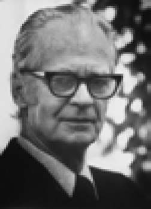
Skinnerian şartlandırma Bkz. işlemsel koşullama.
Skinner kutusu (Skinner Box) Deneysel psikolojiye göre, bir düğmeye basıldığında, bir ip çekildiğinde ya da bir mandal yerinden kaldırıldığında denek hayvanının içinden kurtulduğu ya da başka bir ödül elde ettiği kapalı kutu. Skinner’in geliştirdiği bu araç, çoğunlukla koşullu öğrenme deneylerinde kullanılıyor. Bkz. bulmaca kutusu.
skopofili (scopophilia) Sevişen kişileri izleme, çıplak resimlere bakma, pornografik film izleme ve benzeri etkinliklerden haz alma. Bu etkinlik, cinsel doyum için bir ön koşul olduğunda cinsel sapma olarak değerlendiriliyor. Bkz. röntgencilik.
Sodom Filistin’de Ölü Deniz (Bahr-i Lût) yakınında zenginliği ile ünlenmiş bir kent. Tevrat’a göre halkın ahlaksızlığı yüzünden Gomore ve başka kimi kentlerle birlikte Tanrı’nın ateşiyle mahvedilmiştir. Bkz. Sodomi.
Sodomi İncil’de geçen Sodom ve Gomore öyküsünün çağrıştırabileceği türlü sapıklıkların alışılageldiği ve o nedenle Tanrı’nın gazabına uğrayan Sodom kentinden esinlenilerek şu tür cinsel sapıklıklar için kullanılan bir terim: 1. İnsanların hayvanlarla cinsel ilişki kurması ve bu yolla doyum sağlaması. Bu konuda daha doğru olanı, bastialitedir. 2. Yetişkin erkeklerin genç oğlanlarla cinsel ilişki kurmaları. Oğlanlarda ağız ya da makat yolunun cinsel doyum sağlamak için kullanılması sapıklığı. Bkz. oğlancılık; Sodom.
soğancık (medulla oblangata) Merkez sinir sisteminin beyinle omurilik arasında yer alan, omuriliğin beyne gideceği yerde yumrulaşmış bölümü. Önemli yaşamsal işlevleri olan belli sinir hücreleri burada bulunuyor.
soğukkanlılık (cool-headedness) 1. En ağır durumlar karşısında bile telaşa, heyecana kapılmama, şaşkınlık göstermeme, kolayca öfkelenmeme, duygularını ölçülü kullanma, serinkanlılık durumu. 2. Soğukkanlı davranış.
soğukluk (coldness) 1. Duygusal yakınlık yokluğu; duygusuzluk. 2. Ruhsal nedenler yüzünden, olağan cinsel istekten yoksun olma. Bu durum, çoğunlukla kadınlarda ve uzun evlilik yıllarından sonra görülüyor. Bkz. cinsel soğukluk.
Sokrat yöntemi (socratic method) Biz dizi soru sorma ve onları yanıtlandırma yoluyla öğrenciyi istenen kararı vermeye ya da benimsemeye sürükleyen diyalektik tümevarım yöntemi. Eski Yunan felsefecisi Sokrates’in ortaya koyduğu ve yaydığı bu yöntem, eğitimde şöyle bir anlam taşıyor: Öğretmenin yöneteceği bir tartışma, akıl yürütmenin ya da sağlam bir sonuca varmanın tutarlılığı üzerinde, öğrencinin kafasında kuşku uyandırıyor.
sol (left) Yaşamı kolaylaştırmanın yolunun, değişim ve ilerlemenin önündeki engelleri kaldırmak olduğunu savunan siyasal ideolojilerin genel adı. Bkz. sağ.
solaklık (left-handedness) Eller kullanılarak yapılan işlerde sol elin baskın olması.
sol yarımküre (left hemisphere) Beyni önden arkaya doğru ikiye ayıran derin yarığın solunda kalan yarımküre. Beynin sol yarımküresi, vücudun sağ yanını; sağ yarımküresi ise sol yanını denetliyor. Bu yarımküreler birçok bakımdan birbirinin ayna görüntüsü biçimindeyse de aralarında önemli işlev farklılıkları bulunuyor. Örneğin birçok kişide konuşmayı denetleyen bölgeler sol yarımkürede; yer (mekân) algısını denetleyen bölgeler ise sağ yarımkürede bulunuyor. Bkz. beyin; sağ yarımküre.
soma (soma) 1. Bir bütün olarak beden; organsal dokuların tümü; beden. 2. Hücre gövdesi; nöronun denetim merkezi. Bkz. somatik bellek; somatik bozukluk; somatip; somatoform bozukluk; somatostatin; somatotopik örgütlenme; somatotropin.
somatik bellek (somatic memory) Organik bir bozukluk olmadan ortaya çıkan ve travmatik ya da istismar içerikli bir yaşantının çözülmeli bir yanını temsil eden fiziksel bir duyum ya da işlev değişikliği; beden belleği.
somatik bozukluk Bkz. bedensel bozukluk.
somatip (somatype) Kişinin vücut yapısına göre sınıflandırılması. Kimilerine göre bu, kişilik özelliklerini de belirtiyor. Bkz. Kretschmer’in bedensel yapı sınıflaması; Sheldon’un bedensel yapı sınıflaması.
somatoform bozukluk (somatoform disorder) Belli bir bedensel bozukluğu düşündüren; ama tıpsal muayeneler ve analizler sonucunda genel tıpsal bir bozukluktan, organik bir durumdan ya da başka bir ruhsal bozukluktan kaynaklandığı belirlenemeyen; buna karşılık ruhsal etkenlerle ilişkili olduğu konusunda açık ipuçları bulunan belirgin fiziksel belirtilerle tanımlanan ruhsal bozukluklar; bedenselleştirme bozukluğu. Bkz. nevrasteni.
somatostatin (somatostatin) Hipofiz bezinin salgıladığı ve somatotropin adlı büyüme hormonunun üretimini engelleyen; bazen de bir sinir iletici olarak görev yapan bir hormon,
somatotoni Bkz. bedencil kişilik.
somatotopik örgütlenme (somatotopic organization) Bedensel duyu sisteminin beyin kabuğu üzerinde belli bir düzene göre; yani vücudun çeşitli noktalarının beyin kabuğu üzerinde bunlara karşılık gelen noktalarla temsil edilmesi. Beyin kabuğu üzerindeki çeşitli noktaları elektrikle uyarıp bunun sonucunda vücudun yüz, kollar, bacaklar gibi bölümlerindeki hareketleri gözlemlenerek bunlara ilişkin beyin kabuğu haritası çıkarılmıştır.
somatotropin (somatotropin) Hipofiz bezinin ürettiği büyüme hormonu. Bkz. büyüme hormonu; stres hormonları.
somut (concrete) 1. Soyut ya da kavramsal olmayan, duyu organlarınca varlığı duyumsanabilen. 2. Yararlı, pratik, kullanılabilir olan. Bkz. somut düşünme; somut düşünme evresi; somut işlemler; somut işlemsel evre; somutlaştırma; somut tutum; somut zekâ.
somut düşünme (cocrete thinking) Soyutlama yerine doğrudan yaşantıya dayanan düşünme; gerçek şeylerden soyutlanan kavramlarla ya da düşüncelerle değil, somut şeylerle düşünme. Bkz. soyut düşünme. 2. Bireyin her durumu eşsiz olarak değerlendirdiği ve durumlar, olaylar, ilişkiler arasındaki benzerlikleri genelleştiremediği bir düşünme biçimi. Bu düşünme biçiminde sözcükler gerçek, özgün anlamıyla anlaşıldığı için mecazlar, özdeyişler ve benzerleri kolayca kavranılamıyor. Bu ikinci tanımdaki durumuyla somut düşünme, küçük çocukların, şizofrenlerin ve beyin travması geçiren kimi kişilerin belirgin özelliğidir. Bkz. bilişsel gelişim kuramı((3) Somut İşlemsel Evre).
somut düşünme evresi Bkz. bilişsel gelişim kuramı ((3) Somut İşlemsel Evre); çocuk ve ergenin gelişim Dönemleri ( 3) İkinci Çocukluk Dönemi).
somut işlemler (concrete operations) Piaget’nin somut işlemsel evrede bulunan çocuklara özgü saydığı; bu dönemde geliştiğini ortaya koyduğu sınıfa katma, sınıflandırma, tümevarımsal akıl yürütme; tersine dönebilirlik, geçişlilik gibi bir dizi bilişsel işlem. Bütün bu işlemler, gelişmekte olan çocuğun zaman, yer, nicelik gibi günlük yaşamın fiziksel öğeleriyle ilişkili zihinsel temsillerle yaptığı işlemlerdir ve mantık öğeleri içerse bile daha, somut, elle tutulur olanın ötesine geçememiştir. Bkz. bilişsel gelişim kuramı ((3) Somut İşlemsel Evre); bilişsel işlemler; formel işlemler.
somut işlemsel evre Bkz. bilişsel gelişim kuramı.
somutlaştırma (concretization) 1. Somut duruma getirme, somutlaşmasını sağlama. 2. Nedeni ve kaynağı belirsiz sıkıntı ve kaygıların somut bir nedene, duruma bağlanması. Olayların, uyaranların, tasarımların belirsizliği ve karmaşıklığı, insanda kaygı yaratıyor. O nedenle insan zihni, bunları somutlaştırma, belirli kılma gereğini duyuyor. Kalp nevrozunda olduğu gibi, ruhsal bir kaygının bedensel bir bozukluğa dönüştürülmesi; paranoid psikozlardaki gibi, belirli bir kuruntunun, belirli düşmanlara bağlanması, somutlaştırma örnekleridir.
somuttan soyuta ilkesi Bkz. bilişsel gelişim kuramı; öğrenme-öğretme ilkeleri; tam öğrenme.
somut tutum (concrete attitude) Belli bir nesneye ya da o anki duruma yönelik bir düşünüş, davranış biçimi. Somut tutum sergileyen bir kişi, soyut kavramlardan kaçınacak; soyutlamalardan çok, anın somut koşullarına göre düşünecek ve davranacaktır. Bkz. soyut tutum.
somut zekâ (concrete intelligence) Somut, pratik ilişkileri, durumları kavrama ve kullanma yetisi. Bkz. soyut zekâ.
son büyüme yaşı (MG-age) Boy ölçülerinde son gelişim basamağına erişilen yaş.
son çare sağaltımı Bkz. son çare tedavisi
son çare tedavisi (salvage therapy) Var olan tedavilere yanıt vermeyen ya da bu tedavileri kaldıramayan hastalara son çare olarak uygulanan tedavi; son çare terapisi. Bu tedavi, normal koşullarda uygulanmayan bir yöntem olabileceği gibi, hiç denenmemiş yeni bir ilaç denenerek de yapılabiliyor.
son çare terapisi Bkz. son çare tedavisi.
son pekiştirme (terminal reinforcement) Hedefe vardıktan sonra ya da organizma doğru tepkiyi ya da tepkiler dizisini verdikten sonra uygulanan bir pekiştirme.
sonradan gerçekleşen bastırma Bkz. bastırma; içgüdü kuramı.
sonuç bilgisi (knowledge of results) Öğrenmenin her basamağında öğrenciye sonuca ilişkin verilen bilgi. Bunun öğrenmeyi kolaylaştırdığı savunuluyor.
son uyarıcı (terminal stimulus) Bir organizmanın tepki verebileceği maksimum uyarıcı.
sormaca Bkz. anket.
soru çözümleme (item analysis) Belli bir test sorusu ya da konusunun, değişik derecelerde yetenek sahibi bireyleri ya da başka birtakım özelliklerde ayrık gösteren kimseleri ne dereceye kadar iyi ayırt edebildiğini belirtmek için testleri değerlendirmede ya da düzenlemede kullanılan birçok yollardan biri.
sorumluluğun dağılması (diffusion of responsibility) Örgütlü ya da anonim gruplarda zor durumdakilere yardım etme, onlara ilişkin karar verme ve sorumluluk üstlenme eğilimlerinin azalması. Ortamdaki insan sayısı arttıkça bu eğilim azalıyor. Bkz. seyirci etkisi; sorumluluk.
sorumluluk (responsibility) Bir kimsenin üstüne aldığı, yapmak zorunda olduğu ya da yaptığı bir iş için gerektiğinde hesap verme durumu, mesuliyet. Kişide sorumluluk duygusu geliştirmeye çocukluktan başlanması; her yaşa ve gelişim düzeyine uygun olarak düzenli ve sürekli bir çaba ile bunun geliştirilmesi gerekiyor. Bkz. sorumluluğun dağılması.
sorun (problem) 1. Önemli, şaşırtıcı ve meydan okuyan gerçek ya da düşsel her durum; mesele. Soronun çözümü, çare bulacak biçimde düşünmeyi, çözüm yollarını bulmayı ve o yolların gerektirdiği adımları atarak sonuca ulaşmayı gerektiriyor. Bkz. sorun çözme. 2. Matemetikte, yanıtı, belli tanım ve kurallara göre, bilinenden bilinmeyene yönelen usavurmayı gerektiren bir soru; problem. Bkz. sorun çözme; sorun çözme yeteneği; sorun çözme yöntemi; sorun kutusu; sorunla baş edememe korkusu; sorunlu çocuk; sorunlu davranış; sorun odaklı başa çıkma; sorun tarama listesi.
sorun çözme (problem solving) İstenen amaca varabilmek için türlü olanaklar arasından etkili ve yararlı olan araç ve davranışları seçme, kullanma ve sonuca varma; problem çözme. Bkz. öğrenme ve öğretme yöntem ve teknikleri.
sorun çözme yeteneği (problem solving ability) Sorunların çözümünde olası olanaklar arasından, amaca ulaşmada en etkili olanları seçme ve kullanma yeteneği.
sorun çözme yöntemi Bkz. bilişsel alan kuramı.
sorun kutusu (problem box) Deneysel psikolojide kullanılan Skinner kutusu gibi denek hayvanının sürgü ve benzeri şeyleri açmasını başarınca ödül elde ettiği bir kutu ya da kafes.
sorunla baş edememe korkusu Bkz. zekâ geriliğinin yol açtığı ruhsal bozukluklar.
sorunlu çocuk (problem child) Zekâsı, tutumları, davranışları ve kişiliği normal çocuklarınkinden oldukça farklılık gösteren ve gelişebilmesi özel önlemler gerektiren çocuk; problemli çocuk.
sorunlu davranış (problen behavior) Gelişim güçlüğü ve uyumsuzluk belirtisi sayılan davranış.
sorun odaklı başa çıkma (problem focused coping) Stres koşullarını değerlendirerek o koşulları değiştirmeye ya da onlardan, kaçınma yoluyla kurtulma stratejisi. Bkz. duygu odaklı baş etme.
sorun tarama listesi (problem scanning list) Öğrencilerin her birini üzmekte ya da düşündürmekte olan sorunların saptanıp giderilmesine yardımcı olmak amacıyla hazırlanmış olan liste. Bu amaçla ortaokullar ile lise ve dengi okullar için iki ayrı Problem Tarama Listesi yayımlanmıştır.
soru sorma (questioning) Dikkatlerini çekmek, sınıfa canlılık getirmek ya da anlayıp anlamadıklarını öğrenmek amacıyla öğrencilere soru yöneltmek. Bkz. soru sorma yaşı.
soru sorma yaşı (age of asking questions) Çocuk gelişiminin adları sorma dönemi. Bu dönem, ikinci yaşta “Ne?” diye; dördüncü yaşta ise “Neden?”, “Niçin?” diye başlayan ikinci soru sorma yaşını içeriyor. Bkz. soru sorma.
soruşturma (questionnaire) Bir konuyla ilgili durum ya da tutumu belirlemek için düzenlenmiş ayrıntılı ve kapsamlı soru dizisi.
soru-yanıt yöntemi (question answer method) Öğrencilerin yanıtlaması gereken sorular kullanılarak öğretimin yürütülmesi ve sınavların yapılmasına dayanan bir öğretim ve sınav yöntemi. Bkz. öğrenme-öğretme yöntemleri.
sosyal adalet (social justice) (toplumsal adalet) 1. Gelir dağılımı, yaşam standardı, fefah düzeyi gibi ölçütler açısından değişik toplum kesimleri arasında belli bir dengenin sağlanmış olması; kamplaşmalara yol açabilecek gelişim farklılıklarının, uçurumların ortadan kaldırılması. 2. Dil, din, ırk ve cinsiyet ayrımı yapmadan insanlara yeteneklerini değerlendirebilecekleri eğitim ve çalışma olanaklarının sağlanması; istedikleri yerde yaşama olanağının yaratılması ve çalışmaları karşılığında hak ettikleri ücretin verilmesi.
sosyal adaptasyon Bkz. toplumsal uyum.
sosyal antropoloji Bkz. kültürel antropoloji.
sosyal baskı Bkz. toplumsal baskı.
sosyal beceri Bkz. toplumsal beceri.
sosyal belirlemecilik Bkz. kültürel belirlemecilik.
sosyal benlik Bkz. toplumsal benlik.
sosyal bilimler (social sciences) Doğa olaylarının yasalarını saptayan pozitif bilimlere karşılık, insanı, toplum olaylarını ve ağırlıklı olarak onun bir parçası olan bireyin bireylerle, toplumla ve öbür varlıklarla ilişkilerini sistemli bir biçimde incelemeyi amaçlayan, bilimsel yöntemlerle üretilmiş düzenli bilgilerle oluşturulmuş olan bilimlerin ortak adı; içtimai ilimler, toplumsal bilimler. Bu bilimler, yalnızca siyaset, iktisat, hukuk, antropoloji, sosyoloji gibi toplumsal disiplinler; eğitim, ahlak, felsefe, psikoloji gibi yarı toplumsal disiplinler ve biyoloji, tıp, coğrafya, dil, sanat gibi toplumsal yönlü disiplinler olarak üç sınıfa ayrılıyor.
sosyal buluşma Bkz. toplumsal buluşma.
sosyal çatışma Bkz. toplumsal çatışma.
sosyal Darwincilik Bkz. toplumsal Darwincilik.
sosyal dayanışma Bkz. toplumsal dayanışma
sosyal destek Bkz. toplumsal destek.
sosyal determinizm Bkz. kültürel belirlenim.
sosyal devlet (social state) Ekonomik ve toplumsal alanda devlete planlama, düzenleme ve gerektiğinde piyasaya etkin müdahale işlevi yükleyen; bu bağlamda bireylere toplumsal güvenlik ve adalet getirici politikalar geliştirme ödevi veren refah devleti modeli.
sosyal drama (social drama) Oyun tekniklerinden yararlanarak, kişilere insan ilişkileri konusunda gerekli bilinç ve beceriyi kazandırmak için uygulanan bir deney sel eğitim tekniği. Bu uygulamada ilgi, kişilerden çok, kümenin ortak sorunlarına yöneltiliyor ve kişinin öbür kişilerle kurduğu ilişki biçimleri inceleniyor. Bu uygulamada oyuncular, belirli tipleri inceliyorlar. Önce, oyunun konusu ve roller belirleniyor. Ardından, oyuncular seçiliyor ve sahne hazırlanıyor. Sonra da gözlemciler belirlenerek oyun oynanıyor ve oyun tartışılıp değerlendiriliyor
sosyal endişe Bkz. toplumsal kaygı.
sosyal evrenseller Bkz. toplumsal evrenseller.
sosyal fobi (social phobia) Kişinin, başkalarının gözlemlediği bir grup içindeki konuşma, yemek yeme ve benzeri etkinlikleri sırasında duyumsadığı bilinçdışı inatçı bir korkuyla bu tür etkinliklerden kaçınmaya zorlanması biçimindeki kaygı bozukluğu; toplumsal yılgı. Çoğunlukla küçük düşme, olumsuz izlenim bırakma, aptalca davranma gibi başarısızlık korkularından kaynaklanıyor. Kaçınma, sınırlı düzeyde kalabileceği gibi, kaygı ve panikle birlikte yaşamın her alanına da yayılabiliyor. Böyle durumlarda sosyal fobiyi agorafobiden ayırmak zorlaşıyor. Bu duruma beynin cesaretsizlik anlarındaki serotonin eksikliği yol açıyor. Yetkincilikte de beynin ön bölgesi etkin oluyor. Bu bölge, ilaç tedavisi ile ayarlanıp dengelenebiliyor. İletişim kurma, konuşma, dinleme, soru sorma becerileri geliştirilerek sosyal fobinin zayıflatılması olasıdır. Sosyal fobinin tedavisinde korku merkezinde bir bozukluk olup olmadığı araştırılarak bu tür bir bozukluk olmadığı belirlendikten sonra, hastanın zorlanma ve sıkıntılarıyla baş edebilme yöntemlerini uygulamasına geçiliyor. Bu hastalarda depresyon, alkol bağımlılığı da görülüyor.
sosyal güdü Bkz. toplumsal güdü.
sosyal hareket Bkz. toplumsal davranış.
sosyal hareketlilik Bkz. toplumsal hareketlilik.
sosyal hizmet uzmanı (social worker) Bireylerin ve grupların hastalık, işsizlik, yoksulluk, geçimsizlik gibi sorunlarının; toplumun okul, yol, su gibi sorunlarının çözümüne yardımcı olmakla görevli uzman. Sosyal hizmet uzmanının, alan bilgi ve becerilerinin yanı sırta Türkçe, psikoloji, sosyoloji, ekonomi, hukuk alanında da yetkin olması gerekiyor. Çünkü farklı toplumsal,ekonomik ve kültürel düzeylerde kişi ve gruplarla iletişim kurmak durumundadır. Çalışma alanı oldukça kapsamlıdır.
sosyal hüviyet teorisi Bkz. toplumsal kimlik kuramı.
sosyal ihtiyaçlar Bkz. toplumsal gereksinimler.
sosyal ikilem Bkz. toplumsal ikilem.
sosyal ikili Bkz. toplumsal ikili.
sosyal iklim Bkz. toplumsal iklim.
sosyal istenirlik Bkz. toplumsal istenirlik.
sosyalizm Bkz. toplumculuk.
sosyal kategori Bkz. toplumsal sınıflama.
sosyal ketleme Bkz. toplumsal ketleme.
sosyal kıyaslama teorisi Bkz. toplumsal karşılaştırma kuramı.
sosyal kod Bkz. toplumsal kod
sosyasl kolaylaştırma Bkz. toplumsal kolaylaştırma.
sosyal kuvvet Bkz. toplumsal güç.
sosyalleşme Bkz. toplumsallaşma.
sosyalleşme araçları Bkz. toplumsallaşma araçları.
sosyal mesafe Bkz. toplumsal uzaklık.
sosyal mesafe ölçeği Bkz. toplumsal uzaklık ölçeği.
sosyal motif Bkz. toplumsal güdü.
sosyal mübadele teorisi Bkz. toplumsal değiş tokuş kuramı.
sosyal nesne Bkz. toplumsal nesne.
sosyal nüfuz Bkz. toplumsal nüfuz.
sosyal öğrenme Bkz. toplumsal öğrenme.
sosyal öğrenme teorisi Bkz. toplumsal öğrenme kuramı.
sosyal patoloji Bkz. toplumsal hastalık.
sosyal psikiyatri (social psychiatry) Ruhsal bozukluklarla toplumsal çevre arasındaki ilişkileri inceleyen psikiyatri dalı; toplumsal ruh hekimliği. Çevresel, antropolojik, toplumsal etkenlerin ruhsal bozuklukların oluşumundaki önemi, giderek daha iyi anlaşılıyor. Fromm, Horney, Sullivan gibi ünlü psikologlar, kültürel etkenlerin, ruh sağlığı üzerindeki önemini belirlemişlerdir. Bunların da etkisiyle kamu sağlığı diye bir alanın ortaya çıkması, psikiyatride toplumsal bakış açısının ağırlık kazanmasını sağlamıştır.
sosyal psikoloji (social psychology) Bireyin düşünce, duygu, inanç ve davranışlarının, başkalarının gerçek ya da düşsel varlığından nasıl etkilendiğini (insan davranışlarının toplumsal kaynaklarını) inceleyen psikoloji dalı; toplumsal ruhbilim. Bireyle birey, bireyle grup ve grupla grup ilişkileri ve etkileşimleri (toplumsal etki ve uyum, grup yapısı ve dinamiği, iletişim, toplumsallaşma); bu ilişki ve etkileşimlerin aile, din, devlet gibi toplumsal kurumlar aracılığı ile nasıl yönlendirilip biçimlendirildiği; toplumsal kimlik, tutum, norm, rol ve statülerin nasıl tanımlandığı (kültür ve kişilik, toplumsal değişim ve kişilik değişimi), sosyal psikolojinin başlıca konularını oluşturuyor. Sosyal psikoloji, bu niteliği ile psikoloji, toplumbilim ve antropoloji arasında bir disiplin olarak yerini almış bulunuyor. Bkz. davranış bilimleri; sosyoloji; psikoloji.
sosyal referans noktası alma Bkz. toplumsal referans noktası alma.
sosyal rol Bkz. rol.
sosyal seçim Bkz. toplumsal seçim.
sosyal sınıf Bkz. toplumsal sınıf.
sosyal statü Bkz. toplumsal statü.
sosyal şuur Bkz. toplumsal bilinç.
sosyal tecrit sendromu Bkz. toplumsal ayırma sendromu.
sosyal tercih Bkz. toplumsal seçim.
sosyal tesir teorisi Bkz. toplumsal etki kuramı.
sosyal teşkilatlanma Bkz. toplumsal örgütlenme.
sosyal vakıalar Bkz. toplumsal olgular.
sosyal varlık Bkz. toplumsal varlık.
sosyal yapı Bkz. toplumsal yapı.
sosyobiyoloji (sociobiology) İnsanda ve hayvanlardaki toplumsal davranışların biyolojik ve genetik temellerini belirlemeye; başka deyişle toplumsal davranış yapılarını biyolojik evrim yasaları temelinde anlamaya çalışan bilim dalı. Birçok hayvan türünün yuva yapma, çiftleşme, yavrularına bakma gibi sonradan öğrenilmeyen karmaşık davranış yapılarına sahip olduğu gerçeğinden yola çıkan sosyobiyoloji, insanda bu türden programlı (genetik) davranış yapılarının ne ölçüde bulunduğu; bu yapıların öğrenilmiş davranışlarla ne ölçüde devre dışı bırakıldığı ve hangi koşullarda genetik programlı davranış yapılarının harekete geçtiği gibi sorulara yanıt arıyor.
sosyodrama (sociodrama) Rol oynama (drama) tekniklerinden yararlanan bir deneysel eğitim yöntemi; toplumsal oyun. İnsan ilişkileri ile ilgili tutum, bilinç ve becerileri daha iyi öğrenmek ve kavramak amacıyla insanın çözüm bekleyen durumlarda kendi rolünü değil de başka bir insanın rolünü oynaması. Bunda oyuncular, kişileri değil, belirli tipleri canlandırıyorlar. Örneğin, grup üyelerine, iş arayan bir kişinin nereye, nasıl başvuracağı oynatılarak, grubun bu toplumsal sorun konusunda bilinçlenmesi ve olumlu tutum geliştirmesi sağlanıyor. Toplumsal oyun düzenlenirken (1) Oyun hazırlanıp konu ve roller belirleniyor. (2) Oyuncular seçiliyor. (3) Sahne hazırlanıyor. (4) Gözlemciler belirleniyor. (5) Oyun oynanıyor. (6) Oynanan oyun tartışılarak değerlendiriliyor. Bkz. psikodrama.
sosyodramatik oyun (sociodramatic play) 3-4 yaşın üzerindeki çocuklar arasında annelik, babalık, doktorluk gibi kişilikleri içeren ve sıklıkla esinini anne babalar arasındaki ilişkilerle görsel medyadan alan ayrıntılı rol oyunları.
sosyoekonomik statü (socioeconomic bias) Kişinin katmanlaşmış bir toplumda gelir düzeyi, mesleği, eğitim düzeyi, toplumsal sınıfı gibi göstergelere dayalı olarak tanımlanan toplumsal statü endeksi.
sosyogram Bkz. toplumsal ilişki çizgesi.
sosyolinguistik (sociolinguictics) Dilin ancak toplumsal bağlamda anlamlı olabildiği ilkesinden yola çıkan ve dil ile davranış arasındaki ilişkiyi, etkileşimi her yönüyle ele alan oldukça yeni bir bilim dalı. Antropoloji, dilbilim, sosyal psikoloji, eğitim psikolojisi ve sosyoloji gibi birçok alanı içeren sosyolingüistik, dillerin evrimi ve tanımı üzerinde çalışan sosyolinguistik çeşitleme; dilsel etkileşimi yöneten toplumsal gelenekleri inceleyen konuşma etnografisi ve toplumsal yapının dil seçimini nasıl etkilediğini inceleyen dil sosyolojisi gibi alt disiplinlere ayrılıyor. Bu yaklaşıma göre dil, kişisel olmaktan çok, toplumsal bir olgu olduğu için bir yandan toplumsal yapıyı yansıtıyor; öte yandan da bu yapıya katkıda bulunuyor. Bkz. psikolinguistik.
sosyoloji (sociology) 1. Toplumsal gruplaşmaların ve davranışların incelenmesi ya da bilimi; toplumbilim. Sosyoloji, konuyu genel ve ortaklaşa ele alıyor ve özel olarak da insan toplumunun kökenini, amaçlarını, gelişimini, görevlerini, uyumlarını ve öbür özelliklerini inceliyor. 2. Grup içinde yaşayan insanın incelenmesi. Bkz. davranış bilimleri.
sosyometri (sociometry) Grupta bireyler arasındaki ilişkilerin yapısını ve dinamiklerini belirlemek amacıyla J. L. Moreno’nun geliştirdiği bir ölçüm tekniği; toplumsal ilişki ölçümü. Bu teknik uygulanırken her üyeden, örneğin, birlikte çalışmak, yemek yemek, aynı evde oturmak ve benzerleri için istediği kişi ya da kişileri seçmesi isteniyor ve elde edilen bilgiler, bir toplumsal ilişkiler çizgesi (sosyogram) üzerinde gösteriliyor. Bu yöntem, kimlerin en popüler olduğunu; kimlerin reddedildiğini ya da toplumdışı (isolate) bırakıldığını; kimlerin önder olduğunu, anlamlı bilgiler olarak ortaya çıkarıyor. Bu teknikle sağlıklı bilgiler elde edilebilmesi için teknik, grup üyeleri yeterince birbirini tanıdıktan sonra uygulanması gerekiyor. Bkz. seçme tekniği.
sosyopat Bkz. antisosyal kişilik bozukluğu; sosyopati.
sosyopati Bkz. antisosyal kişilik bozukluğı; sosyopat; sosyopatik kişilik.
sosyopatik kişilik Bkz. antisosyal kişilik bozukluğu.
sosyoterapi (sociotherapy) Hastanın toplumsal çevresinde iyileşme ve değişiklik yapmaya yönelik destek tedavilerinin ortak adı; toplumsal tedavi; toplumsal sağaltım. Hastanın bireylerarası iletişim ve ilişkilerini düzeltmeye çalışan grup tedavileri, psikodrama, karşılaşım grupları, hasta yakınlarıyla görüşme, aile danışmanlığı, iş danışmanlığı ve benzerleri, bu kapsamda değerlendiriliyor. Bkz. grupta psikolojik danışma.
Soto sendromu (Soto’s syndrome) Uzun, büyük bir kafası, iri çenesi, ayrık gözleri, iri elleri bulunan ve hafif ya da orta düzeyde zekâ geriliği olan bireylere özgü doğumsal bir hastalık.
soyaçekim Bkz. kalıtım; soyaçekimsel bilinçdışı.
soyaçekimsel bilinçdışı Bkz. kalıtsal bilinçdışı; soyaçekim.
soyarıtımı (eugenics) Soyaçekim yasalarını kullanarak bilinçli ve denetimli biçimde yeni kuşakların ya da ırkın kalıtımsal özelliklerini daha iyi bir duruma getirme çabası. Bu yönelim, insan hak ve özgürlüklerine ve değerlerine aykırıdır.
soygelişim ilkesi (phylogenetic principle) Bireyin gelişiminde, türün gelişimindeki aşamaların yinelendiğini savunan ilke.
soykırım (genocide) Dinsel, ırksal, ulusal ya da etnik bir grubun ortadan kaldırılmasına yönelik sistemli eylemler; jenosit. Bu eylem, açıkça kitlesel imha biçiminde olabileceği gibi, kısırlaştırma ve benzeri yöntemlerle söz konusu grubun çoğalmasını önleme, doğan çocukları başka gruplar içinde asimile etme, yaşam koşullarını kötüleştirme gibi çok farklı yöntemlerle de uygulanıyor.
soyluluk sabuklaması Bkz. paranoya.
soysuzlaşma (degeneration) Bir canlının ya da organik gelişimin, herhangi bir anlamda iyiden kötüye gitmesi; dejenerasyon.
soyut (abstract) 1. Somut olmayan; maddesel nesneleri ya da belli örnekleri değil; bir niteliği, durumu ya da eylemi andıran sayılar, soyut gerçek gibi yalnızca zihinde var olan; mücerret. 2. Somutun tersine, bir nesnenin diğer özelliklerinden ayrı ele alınan belli bir özelliğini, özeli değil; “memeliler” gibi genelleştirmeleri anlatan. Bkz. soyut algılar; soyut düşünce; soyut düşünme; soyut düşünme yeteneği; soyut kavram; soyut kimlikler; soyutlama: soyut modelleme; soyut öğrenim; soyut tutum; soyut yargılama; soyut yetenek; soyut zekâ.
soyut akıl yürütme Bkz. soyut zekâ.
soyut algılar (abstract perception) Vücutta ve vücut çevresinde, uçma, dönme, yükselme ve alçalma gibi algılar. Çoğunlukla uykuya dalmadan hemen önce, rüyalarda ve stresli ortamlarda ortaya çıkan bu algılar, bebeklikteki öznel yaşantıların yankıları olabiliyor.
soyut düşünce (abstract idea) Somut deneyimlerden ayrı değerlendirilen genelleştirilmiş düşünce; mücerret fikir. Somut bir olgudan çok, genel kavramlaştırmayı tanımlayan bir öğe ya da simge.
soyut düşünebilme Bkz. bilişsel gelişim kuramı.
soyut düşünme (abstract thinking) Bilinen kavramları yeni durumlara ve ortamlara uygulayabilme, soyutlama ve genelleştirmelerden yararlanma yetisine dayanan bir düşünme biçimi; akıl yürütme. Kendiliğinden zihinsel varsayımlar yapabilme; bir olay ya da olgunun çeşitli durumlarını ve değişkenliğini tasarlayabilme; bir bütünün özelliklerini ve bir bütün içindeki parçaları ayırt edebilme, yaratabilme. Olay ve olguların temel özelliklerini kavrama, durumların farklı yanlarını aklında tutma ve bir durumdan ötekine zihinsel olarak geçme, önceden kestirebilme ve planlama, simgesel düşünme ve sonuç çıkarma becerisi. Bkz. bilişsel gelişim kuramı ((4) Biçimsel-İşlemsel Evre).
soyut düşünme yeteneği Bkz. çocuk ve ergenin gelişim dönemleri ( 4) Ergenlik ve Delikanlılık Dönemi); soyut düşünme;
soyut kavram (abstract cancetpt) Özel bir olgu ya da nesneyle ilgili olmak yerine, gizilgüç anlamında farklı birçok durum ya da nesne için geçerli olabilen adalet, özgürlük gibi bir kavram ya da düşünce. Bilişsel kusuru olan (yeterli yaşantıları olmayan) kişiler soyut kavramları anlamakta sıkça zorlanıyorlar. Bkz. bilişsel gelişim kuramı (Soyut Düşünme Basamağı); çocuk ve ergenin gelişim dönemleri (3)İkinci Çocukluk Dönemi: c) Zihinsel ve Dilsel Gelişim)
soyut kavramlaştırma (abstract conceptualization) Özgürlük, eşitlik, hak, adalet gibi soyut kavramlar oluşturma süreci. Bkz. soyut düşünme.
soyut kimlikler (abstract identifications) “Ben kimim?” sorusuna verilen yanıtların çözümlenmesinde “Ben bir insanım.” biçimindeki toplumsal kimlik öğelerini oluşturamayacak kadar genel tanımlar içeren bir aşama.
soyutlama (abstraction) Düşünce aracılığı ile elde edilen nesnelerden ya da belirgin somut örneklerden ayrıştırma ve genelleştirme işlemi. Belli olaylardan ve olgulardan genel kavramlar oluşturma; somut bir bütünden belli parçalar ya da özellikler çıkarma. Örneğin, “Bütün ördekler kuştur; ama bütün kuşlar ördek değildir.” yargısı bir soyutlamadır. Sınıflandırma için soyutlama gereklidir. Zekâ geriliğinde ve şizofrenide soyutlama yetisi genellikle zayıftır; güzellik, iyilik gibi kavramlar bozulmuştur. Bkz. KÜLPE, Oswald.
soyut modelleme (abstract modeling) Toplumsal öğrenme kuramının bir uzantısı. Davranış yapılarını bir dizi gözlemden ortak öğeler, ilkeler ya da ortak yapısal özellikler çıkararak kazandığımızı ve bunları daha sonraki davranış yapılarına kattığımızı savunan bir öğrenme kuramı. Önceki toplumsal öğrenme kuramı, çocukların gördüklerini taklit ederek öğrendiğini varsayıyordu. Soyut mıodelleme, eski kuramda değişiklik yapmış ve çocukların, gözlemledikleri davranıştaki genel yapıları ayırt ettiğini ve bu gözlemsel yapılara dayanarak, gözlemledikleri özgün davranıştan oldukça farklı davranışlara yol açabilecek kendi kılavuz ilkelerini geliştirdiklerini varsaymıştır.
soyut öğrenim (abstract learning) Durum ve nesnelere değil, kavram ve simgelere dayanan öğrenim. Bkz. bilişsel gelişim kuramı ((4) Somut İşlemsel Evre); çocuk ve ergenin gelişim dönemleri (4)Ergenlik ve Delikanlılık Dönemi: c)Zihinsel ve Dilsel Gelişim).
soyut tutum (abstract attitude) Goldstein’ın, somut ve yalnızca doğrudan deneyim terimleriyle düşünmenin tersine, genel kavram ya da simgelerle farklı bakış açıları arasında gidip gelerek, eldeki sorunu bileşenlerine ayırarak düşünme, planlama ve kurgulama gibi becerileri içeren bir bilişsel işleyiş biçimi; kategorik tutum. Soyut tutum geliştirememek ya da durumun gereklerine uygun olarak somuttan soyuta kolayca gidip gelememek, birçok psikiyatrik bozukluğun belirgin özelliğidir. Bkz. bilişsel gelişim kuramı ((4) Biçimsel-İşlemsel Evre); somut tutum ((3) Somut İşlemsel Evre); soyut düşünme.
soyut yargılama (abstract reasoning) Somut veriler yerine simgeler ve genellemelerle gerçekleştirilen yargılama; mücerret muhakeme.
soyut yetenek (abstract ability) Soyut kavramları, bunların birbiriyle ilişkilerini anlama ve bunları kullanma yeteneği; mücerret kabiliyet.
soyut zekâ (abstract intelligence) İlişkileri anlama, somut nesnelere olduğu gibi kavramlara, elle tutulmayan görüşlere, imgelere ve simgelere tepki verebilme, soyut kavramlarla düşünme becerisi; toplumsal zekâ. Bkz. somut zekâ; soyut düşünme.
sömürü (exploitation) Karşısındakinin gereksinim ve haklarını hesaba katmadan onun üzerinden kendi gereksinim ve çıkarlarını giderme eğilimi, eylemi ve düzeni; istismar.
söndürme (extinguish) Öğrenme ilkelerinden biri. Bkz. alışma; davranış değiştirme teknikleri; genelleme; sönümleme.
sönme Bkz. alışma.
SÖNMEZ, Veysel (1943- ) Sönmez, Sürmene’de doğdu. İlk ve orta öğrenimini Ankara’da tamamladı. İstanbul Üniversitesi Felsefe Bölümü’nü bitirdi. Türkiye’nin çeşitli yerlerinde öğretmenlik ve yöneticilik yaptı. Hacettepe Üniversitesi Program Geliştirme Anabilim Dalı’nda 1976‘da master; 1978de de doktorasını tamamladı. Aynı üniversitede 1988‘de doçent; 1996 ‘da da profesör oldu. Hacettepe Üniversitesi’nden 2010‘da emekliye ayrıldı. Yüzden fazla araştırma yönetti ve bu alanda ona yakın yapıt verdi. Sönmez, olabilirlik felsefesine, köy enstitüsü modeline, tam öğrenme yaklaşımına, bilgi işleme sürecine ve bilgisayar destekli eğitime dayandırarak yapılandırdığı dizgeli eğitim modeli’ni geliştirdi. Bu eğitim modelini Dizgeli Eğitim adlı yapıtının Önsöz’ünde, kırk yılı aşan kendi eğitim deneyimlerine; Türkiye’deki ve ilerlemiş kimi ülkelerdeki eğitim birikimlerine; insanın hazırbulunuşluk düzeyine ve doğal yapıdaki değişimlere; Türkiye’nin politik, toplumsal (kültürel) gerçeğine; çağdaş bilim, sanat ve düşüncedeki gelişmelere dayandırarak oluşturduğunu belirten yazar, bunlara özetle şu görüşlerini de ekliyor: Bu yaklaşımda bilim, önemli bir değişkendir; çünkü bilimdeki hızlı gelişim ve değişim, tüm yaşamı etkiliyor; eğitime bakışı da farklılaştırıyor. Kalkınmakta olan ülkelerden biri olarak bizde de kolay olan ve yanlış bir yöntem benimsenerek bilimsel sonuçlar dışarıdan alındı ve olduğu gibi uygulanmaya kalkışıldı; bunun bilimsel yaklaşım olduğu sanıldı. Sonuçta beklenmedik sorunlar ortaya çıktı. Bocalanıp kalındı; çünkü yapılan, bilime tersti. Takınılan tutum sorgulanacağına, bilime karşı olumsuz yargılar oluşturuldu. Eğitimde de böyle oldu. İkinci bir yanılgıyı insan hakları, çocuk hakları, demokrasi, özgürlük, eşitlik gibi kavramların yanlış yorumlanması, bu konularda uçlara kaçılması oluşturdu. Çocuk eğitiminde de uçlarda dolaşıldı. Çocuğun ya her isteğini yerine getirmeye; ya çocuğu aşırı korumaya; ya da ona karşı vurdum duymaz bir tutum sergilemeye yönelme oldu. Eğitim sistemimiz yaz boz tahtasına döndü. Eğitime yapılan yatırımlar boşa gitmenin ötesinde, ters işlemeye başladı. Yazara göre “bir ülkenin güvenlik, adalet, dışişleri, merkez Bankası ve eğitim kurumları çağdaş bilime, sanata ve düşünceye dayandırılmalı ve özerk olmalıdır.” Sönmez, Gelecekteki Olası Eğitim Sistemleri adlı yapıtında dizgeli (programlandırılmış) eğitim modeli kapsamında geleceğin eğitim sistemlerine ilişkin modelleri de geliştirmiştir. Başlıca yapıtları: Program Gelkiştirmede Öğretmen El Kitabı, 1985; Sevgi Eğitimi, 1986; Eğitim Felsefesi, 1992; Gelecekteki Olası Eğitim Sistemleri; 2000; Dizgeli Eğitim, 2004; Eğitim Bilimine Giriş, 2006; Öğretim İlke ve Yöntemleri,2007; Bilim Felsefesi, 2008; Örneklendirilmiş Bilimsel Araştırma Yöntemleri, 2011. Bkz. biyoteknolojik eğitim; dizgeli öğretimde ders planı düzenleme; dizgeli (programlandırılmış) bilgisayarlı eğitim; dizgeli (programlandırılmış) eğitim; öğrenme kuramları; öğrenme-öğretme yaklaşımları; robotlarla eğitim.
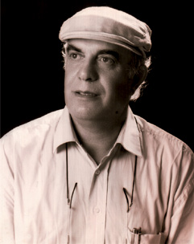
sönümleme (extinction) Davranışçı psikolojinin ortaya koyduğu öğrenme ilkelerinden biri. Daha önce pekiştirilen bir davranımın artık pekiştirilmemesi. Öğrenilmiş davranış, sönümleme sonucu zayıflıyor. Tepkisel koşullamada zil sesiyle birlikte yiyecek verilmezse; edimsel koşullamada da hayvanın manivelaya basması ödüllendirilmezse, davranım sıklığı giderek azalıyor. Örneğin, her zaman açtığımız kapı açılmazsa, açmak için her günkü davranımı yineliyoruz. Yine açılmazsa, belki ona şiddetle vurmayı bile deniyoruz. O zaman da açılmadığında kapıyı açma girişimimizi azaltıyor; sonra da girişimden vazgeçiyoruz. Pekiştirme tarifeleri, sönümlemeyi etkileyen önemli değişkenlerdir. Örneğin, aralıklı pekiştirme tarifeleri, davranımı, sönümlemeye daha dirençli duruma getiriyor. Pekiştirecin şiddeti ve miktarı, pekiştirilmiş davranım sayısı arttıkça, direnç de artıyor. Organizmanın geçirdiği sönümleme yaşantılarının sayısı, sönümlemeyi etkileyen bir başka değişken özelliği taşıyor. Sönümleme sürecini, organizmanın sönümleme sırasındaki güdülenme şiddeti de etkiliyor. Bunlar, olumlu pekiştireçlerle yapılan öğrenmelerde geçerlidir. Korku, kaçınma koşullaması gibi itici uyarıcılarla oluşan öğrenmeler, çok güç sönümleniyor. Öbür öğrenme ilkeleri ayırt etme, enelleme ve pekiştirmedir.
sönümleme patlaması (extinction burst) Normalde pekiştirilmeyen bir davranış, zamanla ortadan kalkarken, davranış tümüyle sönmeden önce koşullu davranışta birdenbire, sıklıkla ortaya çıkan güçlü bir artış. Organizma, sanki yeterince çok denerse ödülü alacağını düşünüyor. Bu artışa sönümleme patlaması deniyor. Koşullu davranış daha güçlü ve belirgin olup, uzun sürede oluşuyor. Davranış patlaması ortadan kalkmadan davranış pekiştirildiğinde, daha güçlü olan tepki pekiştiriliyor. Sönümleme patlaması genellikle yeni davranış düzeyinin pekiştirilmesi ile davranışın daha yüksek bir düzeyde biçimlenmesi için kullanılıyor. Bkz. sönümleme.
sönümlemeye direnme (resistance to extinction) Sönümleme çalışmaları sırasında koşullu bir tepkinin varlığını sürdürmesi ya da sönümleme sağlamak için gerekli uygulama sayısının fazla olması. Bu, koşullamanın gücünün değerlendirilmesinde bir standart görevi yapıyor. Bkz. sönümleme.
söylem (discourse) (diskur) 1. İktidar ilişkileri ile birlikte geliştirilen ve kendi içinde mantıksal tutarlılığı olan bir düşüncenin sözlü ya da yazılı anlatımı (M. Foucault). 2. Kişilerin içinde anlam ürettikleri ya da anlam oluşturdukları tarihsel, kurumsal ve toplumsal önermeler, sınıflar, terimler ve inançlardan oluşan belli bir yapı. Bkz. eylem.
söyleme güçlüğü Bkz. sönümleme; söyleme yitimi.
söyleme yitimi Bk z. adsal söz yitimi; söyleme güçlüğü.
söylencebilim Bkz. mitoloji.
söyleyiş bozukluğu (anarthria) Beyindeki konuşma hücresinde oluşan bir bozulmadan ötürü sözcüklerin söylenmesinde beliren bozukluk.
söyleyiş güçlüğü Bkz. telaffuz güçlüğü.
söz (speech) Bir duyguyu, bir düşünceyi eksiksiz anlatan sözcük ya da sözcük dizisi. Bkz. söz dinleme; söz dizimi; söz sağırlığı; söz yitimi.
sözcük (word) Bir ya da birden çok heceden oluşan, belli bir anlamı olan, tümce kurmaya yarayan ve tümce kuruluşunda özel görev yüklenen kavramın adı; kelime. Bkz. sözcük çağrışımı; sözcük çağrışım testi; sözcük dağarcığı; sözcük körlüğü; sözcük öğrenme; sözcük salatası.
sözcük çağrışımı (word association) Denekten, kendisine sunulan sözcüğe karşılık aklına gelen ilk sözcüğü söylemesi istenen bir tür yansıtma testi. Tekniği, 1879’da bireyler arası farklılıkları inceleyen Francis Galton geliştirmiştir. Jung, bu testi bilinçdışı karmaşaları belirlemek amacıyla kullanmıştır. Bkz. CATTELL, James McKeen; çağrışım.
sözcük çağrışım testi Bkz. JUNG, Carl Gustav.
sözcük dağarcığı (vocabulary) Bir dilin, kişinin ya da grubun sahip olduğu söz varlığı; kelime hazinesi. Bu varlığın kullanılanı, kullanılmayanı vardır. Ayrıca konuşulanının, yazılanının sayısı değişik olabiliyor. Örneğin kişinin anlamını bildiği sözcük sayısı yazılı anlatımda kullandıklarından; yazılı anlatımda kullandığı sözcük sayısı da sözlü anlatımda kullandıklarından daha çoktur.
sözcük körlüğü (word blindness) Normal zekâya ve öncesinde okuma yazma öğrenilmiş olmasına karşın yazılı sözcükleri tanıma ya da anlama yetisinin yitirilmesi. Bkz. aleksi.
sözcük öğrenme (word learning) Hiçbir sözcük bilgisi olmayan yeni doğmuş bebek, 4.-6. aylarda ma, mu, da gibi sesler çıkararak kendi kendine konuşmaya başlıyor. 9.-10. aylarda, yetişkinlere öykünmede bu sesleri kullanıyor. Bir yaş dolayında mama, baba gibi ilk sözcüklerini söylüyor. Bu süreçte, sözel davranışları ve giderek onlarla birlikte işitsel davranışları ayırt etmeyi öğreniyor. İnsan yavrusu, genetik olarak yatkın olduğu konuşmayı, öykünmeyle, klasik ve edimsel koşullanmayla kavramak üzere işe, sözcükleri öğrenmekle başlıyor. Bkz. CHOMSKY, Noam; kavram; kavram öğrenme.
sözcük salatası (word salad) Kimi ruh hastalıklarında görülen ve anlamlı tümce ilişkisine göre söylenmemiş sözcükler yığını.
sözde (pseudo) Gerçekte öyle olmayıp öyle bilinen, öyle sanılan. Bkz. sözde psikoloji; sözde öğrenme.
sözde bilim (pseudoscience) Bilimsel olduğu savunulan ya da bilimsel olduğuna inanılan; ancak, bilimle ilgisi olmayan astroloji, biyoritm, duyu ötesi algı, psikokinezi, telepati ve benzeri kuramlar ve yöntemler sistemi; syalancı bilim.
sözde öğrenme Bkz. bilişsel öğrenme.
sözde psikoloji (pseudo psycholohy) Psikolojinin benimsenip yerleşmiş ilke ve yöntemleriyle çatışmasına karşın kendini psikoloji ya da psikoloji görüşü sayan sistem ya da öğreti; yalancı psikoloji.
sözde ruhbilim Bkz. sözde psikoloji.
söz dinleme (obedience) Anne baba, öğretmen gibi otoritenin buyruk ve isteklerine uygun davranış gösterme; itaat, boyun eğme.
sözdizimi (syntax) Dilbilgisinde sözcüklerin ilgilerine göre sıralanışını, tümce yapısını inceleyen bilim; sentaks.Bkz. dilbilgisi.
sözel (verbal) Sözle ilgili, söze değgin, dile dayalı; dilsel. Bkz. sözel beceri; sözel bellek; sözel bellek yitimi; sözel davranış; sözel döngü varsayımı; sözel olmayan bellek; sözel okuma yitimi; sözel olmayan iletişim; sözel olmayam zekâ; sözel öğrenme; sözel ölçek; sözel özezerlik; sözel performans; sözel zekâ.
sözel ataklık Bkz. atak çocuk.
sözel beceri (verbal ability) Konuşma ile etkili iletişim kurma yetisi. Bu hem konuşmada kullanılan sözcüklerin örtülü anlamlarını, ayrıntılarını anlamayı hem de sözel akışkanlığı içeriyor.
sözel bellek (verbal memory) Şiir gibi sözel bilgileri öğrenme ve anımsama yetisi. Bu yetinin ağırlıklı olarak beynin sol yarımküresinin derin yapılarıyla ilişkili olduğu sanılıyor. Bkz. beyin.
sözel bellek yitimi (verbal amnesia) Sinirsel bozukluklar nedeniyle sözcükleri anımsama yetisinin yitirilmesi. Bkz. bellek yitimi.
sözel bilgi Bkz. öğrenme koşulları.
sözel davranış (vebal behavior) Konuşma, söylenenlere yanıt ya da tepki verme, sözel araçları öğrenme ve benzerleri de içinde olmak üzere, sözel tepkiler içeren davranışlar.
sözel döngü varsayımı (verbal loop fypothesis) Duyusal-algısal bilgilerin, algılanan şeylerin sözcüklere dönüştürülerek edinilip saklandığı ve bu biçimde anımsandığı savı.
sözel düşünme Bkz. düşünme.
sözel körlük Bkz. adsal söz yitimi.
sözel mazohizm Bkz. sözel özezerlik.
sözel okuma yitimi Bkz. okuma yitimi.
sözel olmayan (nonverbal) Dil kullanımına dayanmayan iş, süreç ya da durumlar için kullanılan sıfat.
sözel olmayan bellek (nonverbal memory) Şekilleri, yer ilişkilerini ve benzerlerini içeren bellek. Bu belleğin sağ şakak lopunun derin yapılarına dayalı olduğu düşünülüyor. Bkz. beden dili; beyin.
sözel olmayan iletişim (nonverbal communication) Konuşulan dil kullanılmadan ses tonu, bakışlar, yüz anlatımı, el kol işareti, dokunma gibi hareketlerle gerçekleştirilen iletişim; sözsüz iletişim.
sözel olmayan zekâ (nonverbal intelligence) Sözlü dil yeteneğinin kullanımını gerektirmeyen işlerin yapımında ortaya çıkan zekâ; sözsüz zekâ. Bkz. sözel zekâ; sözsüz test.
sözel öğrenme (verbal learning) Uyarıcı ya da davranım olarak sözcüklerin kullanımını gerektiren öğrenme. Düşünme ve iletişim için belli kurallara göre kullanılan bir simgeler bütünü olan dil, sözel öğrenme ile oluşuyor. Simgeleri genellikle sözcükler oluşturuyor. O nedenle sözel öğrenme, önce sözcüğü söylemeyi; sonra da kavramları öğrenmeyi anlatıyor. Bebekler sözcükleri öykünmeler, tepkisel koşullamalar ve edimsel koşullamalarla öğreniyorlar. Bkz.CHOMSKY, Noam.
sözel ölçek (verbal scale) Genel zekâ testlerinin, sözel becerileri ölçen bölümleri.
sözel özezerlik (verbal masochism) Kişinin küçük düşürücü, yaralayıcı sözler duymaktan cinsel haz aldığı ruhsal-cinsel bozukluk; verbal mazoşizm.
sözel performans (verbal performance) Sözel başarım; elde edilen sözel iyi sonuç. Bkz. sözel zekâ.
sözel sağırlık Bkz. adsal söz yitimi.
sözel söz yitimi Bkz. söz yitimi.
sözel yetenek Bkz. tam öğrenme.
sözel zekâ (verbal intelligence) İletişimde ve sorun çözmede, sözcükleri, kavramları ve simgeleri etkili bir biçimde kullanma yetisi. Bu yeti, genel bir dili öğrenme yetisi ya da örneğin, ağırlıklı olarak tarih, edebiyet gibi sözel öğrenmeye dayalı sözel performans olarak ortaya konuluyor.
sözleşme (contract) Tedavi edenle hasta arasında, hasta açısından tedavide güvenli ve makul sınırlar çizmek amacıyla yapılan yazılı ya da sözlü anlaşmalar. Bu tür sözleşmeler, hastanın neden-sonuç duygusunu besliyor ve onu davranışlarının sorumluluğunu yüklenmeye özendiriyor.
sözlü düşünme (verbal thought) Vygotsky’ye göre, dil kullanımını gerektiren ve dolayısıyla dil ile düşüncenin kaynaşmasını temsil eden bir akıl yürütme süreci. Bkz. arı anlam.
sözlülük ve nişanlılık Bkz. evlilik (Sağlıklı Bir Eş Olma ve Eş Seçmenin Koşulları: Tanımak, Sevmek, Paylaşmak).
sözlü olmayan iletişim Bkz. sözsüz iletişim.
söz sağırlığı Bkz. işitsel söz yitimi.
sözsüz iletişim Bkz. beden dili.
sözsüz test (nonverbal test) Uygulanması ve içerdiği sorunların çözümü, sözlü ya da yazılı dil simgelerine dayanmayan test. Bkz. otizm.
sözsüz zekâ Bkz. sözel olmayan zekâ.
söz yitimi (aphasia) Özellikle beynin sol yarısında inme, yaralanma ve benzeri nedenlerle oluşan zedelenmelerden ileri gelen konuşma, yazma, okuma, mimikler, dinleme, dili anlama; simgeleri, mimikleri yorumlama gibi dil modalitelerini etkileyen ve dille ilgili yetilerin bir ölçüde ya da tümüyle yitirilmesine neden olan organik bozuklukların, edinilmiş dil kusurlarının genel adı; afazi, söyleme yitimi. Bu kusurlar ya kendini sözle anlatamama ya başkalarının konuştuklarını anlayamama ya da her ikisinin birleşimi biçiminde ortaya çıkıyor. Dildeki simgeleri anlayamama, işitsel anlama zorlukları, sözcük anımsama zorlukları, sözcük dağarcığının daralması ve benzerleri, dil kusurlarının ortak özellikleri arasında yer alıyor. Söz yitimi, sorunun kaynaklandığı beyin bölgesine, organik sorunun kökenine ya da belirtinin türüne bağlı olarak ikiye ayrılıyor. Bunlardan biri olan alıcı söz yitimi, sözcükleri anlamada yetersizlik biçiminde kendini belli ediyor. Bu belirtiyi gösterenler, bir metni okuyabiliyorlar. İkincisi ise, anlatımsal/devimsel söz yitimidir. Anlatımsal söz yitiminde, bir tümcedeki sözcüklerin yerinin ya da sözcüğün hecelerinin değiştirilmesi gibi, sözcük ve tümce yapısına ilişkin sorunlar yaşanıyor. Devimsel söz yitimi ise günlük dilde çok kullanılan sözcükleri anımsayamama biçiminde ortaya çıkıyor. Bunların dışında; adları anımsayamama, nominal söz yitimi; açık, anlaşılır bir söyleyiş (telaffuz), normal konuşma ritmi; anlamsız ve uzun anlatımlar, yanlış sözcükler ya da sesler gibi belirtilerle tanımlanan konuşma bozukluğu da akışkan söz yitimi (fluet aphasia) olarak adlandırılmıştır. Bkz. beyin; Wernicke söz yitimi.
spastik (spastic) Spazmla ilgili ya da spazm içeren. Bkz. spastik çocuk; spastik felç; spastik konuşma; spastiklik; spastik tip.
spastik çocuk (spastic child) Spastik bozukluğu olan çocuk.
spastik felç (spastic paralysis) Kısmi felçle birlikte ortaya çıkan spastiklik. Bu durum, genellikle hareket sinirlerindeki zedelenmelerden ve beyin felcinden kaynaklanıyor.
spastik konuşma (spastic speech) Spastik bozukluklarla ilişkili olarak ses üretiminde rol oynayan kasların düzensiz çalışması sonucu güçlükle ve düzensiz, inişli çıkışlı konuşma..
spastiklik (spasticity) Beyin ya da omurga zedelenmesi sonucu kasların normal esnekliğini yitirmesiyle ortaya çıkan bir hareket siniri bozukluğu. Belirtileri arasında genellikle eklem yerlerinde kas gerginliği, harekete karşı direncin artması ve buna bağlı olarak sarsak, titrek yürüyüş, kasların uzamasına yönelik istemsiz direnç, derin kiriş refleksleri ve klonus yer alıyor.
spastik tip Bkz. beyinsel kötürümlük.
spazm (spasm) Bir kasın ya da kas grubunun birdenbire, şiddetli ve istemsiz kasılması. Bu kasılma kesintisiz olabileceği gibi, kasılma-gevşeme biçiminde de gelişiyor. Bkz. spazmodik hareket.
spazmodik hareket (spasmodic motion) Spazm biçiminde ortaya çıkan hareket. Bkz. spazm; yüz tikleri.
Spearman-Brown Formülü (Spearman-Brown Formula) 1. Gözlem sayısını artırarak güvenirlik katsayısını iyileştirmek için kullanılan istatistiksel denklem. 2. Her birinin güvenirliği bilinen iki ayrı alt testten oluşan bir testin güvenirlik kestirimi için kullanılan bir teknik.
SPEARMAN, Edward (1863-1945) İngiliz psikolg; zekâ psikolojisinde faktör analizleri okulunun öncülerinden. Londra’da doğdu; aynı kentte öldü. Leamington College’ı bitirdikten sonra felsefenin kafasındaki sorulara yanıt veremediği düşüncesiyle 1883’te orduya ve çeşitli savaşlara katıldı. O yıllarda yaşadıkları ve gözlemledikleri psikolojiye yönelmesine yol açtı. Ve 1987’de Almanya’ya giderek Leipzig Üniversitesi’nde ünlü psikolog W. Wundt’un yanında doktora yaptı. 1907’ye dek Almanya’da Würzburg ve Göttingen üniversitelerinde araştırmalar yaptı. 1907’de Londra’da University College’da deneysel psikoloji okutmanı olarak çalıştı. 1911’de profesör oldu. 1931’de emekli oluncaya dek aynı görevi sürdürdü. 1923-1926 arasında İngiliz Psikoloji Derneği’nin başkanlığını üstlendi. Spearman, birbiriyle bağlantılı iki nedenle psikoloji alanında önem taşıyor. Bunlardan birincisi psikolojide, fizik bilimlerde olduğu gibi genel yasaların saptanmasına inanması nedeniyle zekâyı ve bilmeyi (cognition’u) belli yasalara bağlama çabası; ikincisi ise zekânın iki faktörü kuramıdır. Her bilme ediminin iki belli işlevlerin yapılmasında rolü olan faktör içerdiğini savundu ve bunlardan, farklı bireylerin ve yeteneklerin tümü için geçerli olan genel zekâ faktörünü g faktörü; özel yetenekleri gösteren faktörü ise s faktörü olarak adlandırdı. Çok eleştirilmiş olmasına karşın bu yaklaşımıyla Spearman, zekânın ölçülmesi konusunda psikolojide faktör analizleri okulunun geklişmesinde öncü bir rol oynadı. Başlıca yapıtları: The Nature of Intelligence and the Principles of Cognition, 1923 (Zekânın doğası ve b ilmenin İlkeleri)¸The Abilities of Man, 1927 (İnsanın Yetenekleri); Creative Mind, 1930 (Yaratıcı zigin).
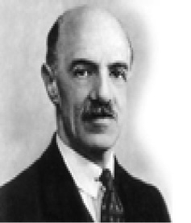
spektral duyarlık (spectral sensitivity) Duyu alıcılarının, belli bir spektrumun tümündeki uyarıcılara; örneğin, retinanın ışık dalga boylarına, kulağın ses frekanslarına tepki verme duyarlılığı.
spektrum (spetcrum) Ses ve ışık gibi dalga özelliği taşıyan bir enerji kaynağının frekans ya da dalga boyu olarak adlandırılan bileşenleri; tayf.
spekülasyon (speculation) 1. Bir konunun düşünülmesi, ele alınması. 2. Veriye dayanmayan, kestirim yoluyla ulaşılan bir sonuç, bir kanı, kuram ya da bilimsel verilere dayanmayan akıl yürütme; kurgu.
SPENCER, Herbert (1820-1903) Evrim kuramını yaşamın bütün alanlarına uygulayan, bilimsel bir felsefe sistemi kurmaya çalışan İngiliz düşünür. Özgür düşünceli bir öğretmenin oğlu olarak Derby’de doğdu; Brighton’da öldü. Doğa bilimlerine ilgi duyan Spencer, bir süre serbest bırakıldıktan sonra düzenli eğitim görmesi için Bath yakınında oturan amcasının yanına gönderildi. Disiplininden sıkıldığı okulu güçlükle bitirdi. Amcasının göndermek istediği Cambridge Üniversitesi’ne gitmeyi reddederek kendi çabasıyla bilgisini artırmada karar kıldı. 1837’de Derby’de başladığı öğretmenliği üç ay sonra bırakıp demiryolu inşaat mühendisliğine başladı. Bu sırada bulduğu fosiller üzerindeki gözlemlerinin onu evrim konusuna yönelttiği sanılıyor. 1841’de demiryolu tamamlanınca evine döndü. Teknolojik buluşlar, frenoloji, doğa tarihi üzerinde çalışırken genel oy hakkı üzerindeki kitlesel hareketlere katılıp hareketin Derby’deki kolunun başkanlığına getirilince bu çalışmalarını bıraktı. Yazdığı makalelerde devletin iktisadi ve toplumsal yaşama müdahalesini eleştirdi. 1848’de The Economist dergisinin yayın yönetmen yardımcısı oldu. George Eliot, Thomas Henry Huxley gibi dönemin ünlü kişileriyle tanıştı. 1850’de yayımladığı Sosyal Statik adlı kitabında insanın doğal haklarını kullanabilmesi için gerekli koşulların yaratılması ile birey ve çevre arasında denge kurulacağını ve siyasal örgütlenmenin ideal koşulu olan statik uyumun gerçekleşeceğini savundu. 1852’de yayımlanan Gelişme Varsayımı adlı makalesinde canlı türlerinin ayrı ayrı yaratıldığı biçimindeki görüşü reddedip organik evrim kuramını ortaya koydu. 1855’te yayımladığı Psikolojinin ilkeleri’nde yaşamın tüm biçimlerinin, ileriye doğru bir evrimin sonucunda ortaya çıktığını ileri sürdü. 1857’de yazdığı İlerleme; Yasası ve Nedeni adlı makalede, evrimsel gelişimin yalnızca biyolojik organizmalarda değil; insanlarda da söz konusu olduğunu savundu. Doğabilimci K. E. Von Baer’in, canlı yaşamının basitten karmaşığa doğru giden bir süreç olduğu biçimindeki görüşünü Güneş sistemlerinin, hayvan türlerinin, insan toplumlarının, endüstrinin, dilin, sanatın evrimine uyarladı. 1859’da çıkan Darwin’in Türlerin Kökeni adlı kitabına büyük bir ilgi gösterdi ve eleştirilere karşı onu savundu. Bilimsel verilere ve yöntemlere dayanarak her şeyi kapsayan bir felsefe kuramı ortaya koyma amacıyla metafizik, pisikoloji, sosyoloji ve ahlak konularını evrimci bakışlaincelemeye girişti. 1860’ta, Sentetik Felsefe adıyla bu geniş kapsamlı yaklaşımın taslağını yayımladı. Sentetik Felsefe’nin ilk kitabı olan ve evrim ilkesini kapsamlı olarak ele alan İlk Prensipler’i yayımladı. 1867’de üç araştırmacının yardımıyla çeşitli toplumların kültürel özellikleri ile toplumsal kurumlarına ilişkin verileri değişik başlıklar altında sınıflandırdı ve Tanımlayıcı Sosyoloji genel başlığı ile 8 cilt halinde yayımlamaya başladı. Ancak bu dizi Spencer’in ölümünden sonra tamamlanabildi. Dizi özellikle ABD’de etkili oldu; Spencer ünlendi. Düşünür, bilginin madde ile sıkı bir ilişkisi olduğu önermesine dayandırdığı bilgi kuramını Ahlak Biliminin İlkeleri adlı kitabıyla ortaya koydu. O, biri deney; öbürü gerçeklik olarak adlandırdığı iki alanın varlığını kabul ediyor. Ona göre deney, gerçeklik ve tikel insan organizması arasındaki etkileşimden doğuyor. Dışsal uyarıcı var; ama onun nasıl bir şey olduğu kesin biçimde bilinemiyor. Gerçekliğin doğası bilinemeyeceği için bilinemeyene inanmak zorunlu oluyor. Ancak bu Tanrı’nın varlığına inanmak biçiminde anlaşılmamalıdır. Bilgi için tümüyle duyusal veriye bağımlı olmak, bu bilinemeyenin herhangi bir tanrısal töz ile karıştırılıp karıştırılamayacağının söylenmesini olanaksız hale getiriyor. Tanrıcılık’ın da Tümtanrıcılık’ın da yadsınması, bilinemeyenin var olmadığını değil; yalnızca bilinemeyene ilişkin bilgi bulunmadığını gösteriyor. Bilinemezcilik, yalnızca usa uygun inançtır. Spencer, Darwin’in varsayımının gerçek bir felsefi kuramın çekirdeği olabileceğini düşünüyordu. Her şeyin basit, ilkel bir aşamadan, daha karmaşık işlevler gören aşamaya doğru geliştiğini ileri sürüyor ve evrimi “kesinlikten uzak, belirsiz, homojen bir durumdan göreli kesin, heterojen bir duruma doğru değişim” olarak tanımlıyordu. Her şeyde var olan başlangıç, denge ve son dönemleri, sınırlı bir uzam ve zamanda gerçekleşiyordu. Toplumlar da doğan, olgunlaşan ve ölen insanlar gibi kuruluyor, denge aşamasına ulaşıyor ve iç, dış etkenlerle parçalanıyor. Evrim yasaları her yerde işlediği halde, evrenin bu sürece bir bütün olarak uyup uymadığı hiçbir zaman bilinemiyor. Spencer, Lamarck’ın kazanılan ya da yitirilen yapısal görünümün yeni döllere aktarıldığı biçimindeki görüşünü benimsemekle Darwin’den ayrılıyordu. Daha sonra ise doğal seçmenin biyolojik evrimin nedenlerinden biri olduğunu benimsedi. Spencer’e göre duygular da evrimle oluşuyor. Haz, yaşamın sürmesi için gerekli bir duygudur. Acı ve keder ise bunu tehlikeye düşüren duygulardır. Organizma, kendini yeniden ürettiği ve yaşamı sürdürdüğü için ödüllendirilmezse yaşamak için çaba göstermeyebilir. Toplumsallık ve sempati duyguları, insanların yaşam savaşımı sırasında duydukları işbirliği gereksinimi sonucu doğmuştur. Toplumsallaşma hazzı, işbirliğinin sürmesi için ödül oluyor. Gelişen toplumsallık ve sempati de yeni toplumu doğurmuş bulunuyor. Batı uygarlığı, olgunluk dönemine gelmiştir. Sempati ve anlayış artmış, uluslar daha az savaşır olmuşlardır. Konuşma, din, basın özgürlüğü güvence altına girmiştir. İnsanlar, daha üst basamaklara daha kolay çıkabilmektedir. Temsili hükümet benimsenmeye başlanmıştır. Doğal seçme yoluyla uyumsuz bireylerin ayıklanması yararlı olacaktır. Her bireyin kendi çıkarı için davranması, iktisadi sistemin iyi işlemesini sağlayacaktır. Anne babaların, çocuklarının eğitimini seçme hakkı olmalıdır. Çocuk, eğitim görmeden de toplumun iyi bir üyesi olabilir. İnsanlara çevreleriyle mücadele etme bilgileri verilmelidir. Spencer’in bireyciliği, onu yararcı bir ahlak sistemi geliştirmeye itmiştir. Spencer’in savunduğu “Bırakın yapsınlar.” ilkesi, ABD’deki acımasız rekabet koşullarına iyi bir ideolojik dayanak oluşturmuştur. 20. yüzyılda bu görüş önemini yitirmiştir. Yalnız, Spencer’in sosyolojiye katkıları kalıcı olmuştur. Spencer, sistemli, karşılaştırmalı sosyolojinin öncüsü olmuştur. Başlıca yapıtları: Social Statics, 1850 (Sopsyal Statik); First Principle, 2 cilt, 1862 (İlk Prensipler); The Principles of Biology, 2 cilt, 1864-1867 (Biyolojinin İlkeleri); Descriptive Sociology, 17 cilt, 1873-1934 (Tanımlayıcı Sosyoloji); The Principles of Sociology, 3 cilt, 1876-1896 (Sosyolojinin İlkeleri); The Man Versus the State, 2 cilt, (İnsana Karşı Devlet); The principle of Eythics, 2 cilt, 1892-1893 (Ahlak Biliminin İlkeleri).
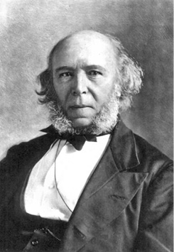
sperm (sperm) Erkeğin üreme organının oluşturduğu, kadının yumurtasını dölleme yeteneği olan koyu sıvı madde; atmık. Bu maddenin içinde temel eleman olarak sperm hayvancıkları denen üreme hücreleri bulunuyor. Bkz. sperm hayvancığı; sperm kanalı.
sperm hayvancığı (spermatozoom) Spermin temel elemanı olan ve döllenme sırasında yomurta ile kaynaşan eleman. Bkz. sperm; sperm kanalı.
sperm kanalı (vas deferens) Testisleri sidik yoluna bağlayan kanal. Bkz. sperm; sperm hayvancığı.
spina bifida (spina bifida) Omuriliğin doğuştan açık olmasıyla tanımlanan ve felç, nörolojik bozukluklar, hidrosefali gibi beyin anormallikleri, bağırsak ve böbrek denetiminin gelişmemesi gibi sonuçlara yol açan doğumsal bir anormallik. Günümüzde bu anormallik, annenin kanında yapılan alfa fetoprotein testiyle gebelik sırasında belirlenebiliyor.
spor (sport) 1. Belli kurallara ve tekniklere uygun olarak yapılan, bedensel gelişime yararlı, eğlenme ve yarışma amacı da olan beden hareketlerinin tümüne verilen ortak ad. 2. Sporcuların giydiği gibi, kullanışlı ve rahat (giysi, ayakkabı ve benzerleri). Bkz. gerilim boşaltma kuramı; spor psikolojisi.
spor psikolojisi (sport psychology) Amatör ve profesyonel sporcularda güdülenme, duygu, stres ve benzeri ruhsal etkenlerin sportif performansla ilişkilerini inceleyen psikoloji dalı; spor ruhbilimi. Bkz. spor.
spor ruhbilimi Bkz. spor psikolojisi.
Spranger’in kişisel ve ülküsel yapı sınıflaması Bkz. yaşam biçimleri.
stabilite (stability) 1. Zamana bağlı değişim ya da hareketin bulunmaması. 2. Belli bir özelliğin, yetinin, duygunun ya da durumun süreklilik göstermesi. 3. Bir sistemin bozulan dengesini yeniden kurabilme yetisi. Bkz. stabilizasyon.
stabilizasyon (stabilization) İntihar girişimi, sinir krizi, cinnet, kalp krizi gibi akut belirtilerle hastaneye kaldırılan kişinin normal tedaviye yanıt verecek duruma getirilmesi için uygulanan geçici, yoğun belirtisel tedavi. Bkz. stabilite.
standardizasyon (stardardization) Bir popülasyonu temsil eden olabildiğince büyük gruplara uygulanan testten yararlanarak testin uygulama ve puanlama normlarını ya da standartlarını belirleme.
standart (standart) 1. Kapasite, miktar, içerik, değer, nitelik, edim, hız, yeterlik ve benzeri konularda örnek olarak belirlenen, ölçüm ve değerlendirmelerde karşılaştırmak için temel alınan şey. 2. Belli bir toplumda toplumsal düzlemde kabul edilen ve beklenen davranışlar; norm. 3. İlk anlamın içinde olsa da metre, kilo gibi sabit fiziksel bir birim. Bkz. standardizasyon; standart fark; standart hata; standart kestirim hatası; standartlaştırma, standart olmayan test; standart ölçme; standart ölçü; standart ölçüm hatası; standart puan; standart sapma; standart tedavi; standart test; standart uyarıcı; standart zekâ testleri.
standart başarı testi Bkz. standart test.
standart fark (standart difference) İki ortalama arasındaki farkın, bu farkın standart hatasına bölünmesiyle elde edilen rakam.
standart hata (standart error) Bir kuramsal örneklem dağılımının standart sapması; standart yanılgı. Her istatistik, bir örneklemden öbürüne farklılık gösteriyor; standart hata da belli bir istatistiğin ortalama değerden ne kadar saptığını belirtiyor.
standart kayma Bkz. standart sapma.
standart kestirim hatası (standart error of estimate) Bir regresyon (gerileme) çizgisinin verilere uygunluk derecesini gösteren bir ölçü; bir değişkeni başka bir değişkenin işlevi olarak hesaplamadaki hataların ortalaması; standart tahmin hatası.
standartlaştırma (standardize) 1. Ham puanların standart puana dönüştürülmesi. 2. Test geliştirme çalışmasında, bir testin uygulama ve puanlama standartlarını belirleme. 3. Belli bir konuda geçerli normları ya da standartları belirleme.
standart olmayan test (informal test) Bir sınıfta ya da okulda kullanılmak üzere sınıf öğretmenlerince hazırlanan testlere verilen ad; öğretmen yapımı test.
standart ölçme (standart measurement) Test alacaklara yapılacak açıklamalar, puanlama biçimleri, testin zamanı, puanların yorumlanması gibi etkenlerin standartlaştırılmış olduğu koşullarda gerçekleştirilen ölçme.
standart ölçü (standart measure) Bir testte ya da başka bir ölçme aracında elde edilmiş olup, bu testin puan dağılışındaki ortalamaya ve standart sapmaya göre belirlenmiş bir işlenmiş puan; standart puan, standart birimli ölçü. Standart ölçü, şunlardan biridir: (1) Puanın ortalamadan uzaklığı (farkı), standart sapmanın bir çarpımı olarak belirlenen ve sapmanın yönü artı ya da eksi işereti ile gösterilen puan (z puanı, sigma puanı, standart ölçü, sigma ölçüsü). Arada bir eksi işaretinden kurtarmak için ortalama ve taban-tavan farkı (ranj), 5’le ya da 0’la 10 arasında değişen bir sayı olarak kabul ediliyor. (2) Belli bir kümedeki puanların dağılışında ortalamayı 50 sayıp puanların bu ortalamaya uzaklığını standart kaymanın onda biri olarak (T puanı) kabul etme yoluyla elde edilen puan. (3) (1)’de tanımlanan standart puanı, bir değişmez sayı ile çarpıp buna, cebirsel olarak değişmez bir başka sayıyı ekleyerek elde edilen işlenmiş puan.
standart ölçüm hatası (standart error of measurement) Gözlemlenen puanların, varsayılan (gerçek) puandan ne kadar saptığını gösteren ölçü.
standart puan (standard score) Uyumluluk, yorumlama kolaylığı gibi nedenlerle ortalaması 0; varyansı 1 olacak biçimde dönüştürülen; sikolojik araştırmaların ve testlerin yorumlanmasında çok kullanılan z puanı ve t puanı. z puanı olarak bilinen temel standart puan biçimi, belli bir puanın standard sapma birimleriyle ortalamadan uzaklığını gösteriyor. Örneğin, belirleyici olarak IQ testlerinin standart puanı 15-16’dır. Öteki standart puanların çoğu, bu tür z puanı farklı ortalamalarla ve standard sapmalarla doğrusal dönüştürmelerdir. Bkz. t puanı; z puanı.
standart sağaltım Bkz. standart tedavi.
standart sapma (standard deviation) Belli bir popülasyonda ölçümler arasındaki farkları ve dağılmayı tanımlamak için kullanılan çeşitli değişkenlik dizinlerinden birisi; en çok kullanılan değişim ölçüsü; standart kayma, ortalama sapma. Matematiksel olarak varyansın karekökü olan standart sapma, puanların ortalamadan ne kadar saptığını gösteriyor. Varyans ise ortalamadan olan farkların kareleri toplamının n’ye bölümünün karekökü alınarak hesaplanıyor. Normal bir dağılımda puanların %68.3’ü, ortalama puan +-1 (artı eksi bir) SD aralığında kalıyor. Puanların %95’i ise ortalama puan +-2 SD aralığındadır.
standart tedavi (tandard treatment) Belli bir hastalıkta ya da bozuklukta etkili olduğu kabul edilen ve yaygın olarak kullanılan tedavi.
standart terapi Bkz. standart tedavi.
standart test (standardized test) Hedeflenen popülasyondan yeterince kişiye uygulanarak ortalama, standart sapma, standart puanlar gibi uygulama ve puanlama normları; güvenirlik katsayısı ve geçerlik katsayısı ile tutarlılık düzeyi belirlenmiş olan test.
standart uyarıcı (standart stimulus) Öbür uyarıcıların karşılaştırılması için standart olarak kullanılan deneysel uyarıcı.
standart yanılgı Bkz. standart hata.
standart zekâ testleri (standardized intelligence test) Hedeflenen popülasyondan yeterli sayı ve nitelikte kişiye uygulanıp ortalama, standart sapma, standarty puanlar ve benzeri uytgulama ve puanlama normları ile güvenirliği, geçerliği ve tutarlılığı belirlenmiş olan zekâ testi.
Stanford-Binet ölçeği (Stanford-Binet Scale) 1905 yılında Fransız hükümetinin okulla ve okulda okutulan araçları öğrenmeyle ilişkili sorunları olan çocukların belirlenmesi yönergesiyle Alfred Binet’nin Theodore Stanford ile birlikte hazırladığı; daha sonra birçok kez farklı ülkelere ve yaş gruplarına uyarlanıp oldukça yaygın biçimde kullanılmaya başlanılan zekâ testi. Bellek, yersel ilişkiler, pratik akıl yürütme gibi yetileri ölçen bu test, sorunun nedenlerinden çok, yaş normlarını ve belli bir bireyin kendi yaş grubu normlarına uygun olup olmadığını belirliyor. Bkz. Stanford hipnotik telkine yatkınlık ölçeği; temel zekâ yaşı.
Stanfort hipnotik telkine yatkınlık ölçeği (Stanford Hypnotic Susceptibility Scale) Deneğin, arkaya yaslanma, gözlerini kapama, uzatılan kolu aşağıya indirme, uçan bir sineği hayal etme gibi telkinlere yönelik tepkileri ile hipnoza yatkınlığını ölçmek amacıyla geliştirilmiş olan 12 maddelik bir standart test. Bkz. Stanford-Binet Ölçeği.
statik (static) Hareketsiz, değişmeyen; dinamik karşıtı.
statoakustik sinir (statoacoustic nevre) 8. kafa siniri. Hem işitme hem de denge duyusunda rol oynayan bir sinir. Bkz. işitme siniri; statokinetik tepki.
statokinetik tepki (statokinetic response) Hareket durumundayken kişinin dengesini ve yönünü korumasını sağlayan duruş ve kas refleksleri. Bkz. statoakustik sinir.
statü (status) 1. Toplumsal olarak belirlenen ve kendisiyle birlikte belli ayrıcalıkları, hakları, yükümlülükleri ve davranış beklentilerini (rolleri) anlatan doğuştan getirilmiş ya da edinilmiş toplumsal konum. Örneğin, önderlik, yöneticilik, doktorluk, öğretmenlik, annelik, evlatlık, öğrencilik statüsü gibi. 2. Durum. 3. Hekimlikte, hastanın tıpsal açıdan acilliği; örneğin, kesintisiz sara gibi. Bkz. statü değişkeni; statü engellemesi; statü gereksinimi; statü grubu; statü seti; statü simgesi; statü suçu; statü tutarsızlığı.
statü değişkeni (status variables) Yaş, cinsellik, sınıf, meslek, medeni durum, ailedeki konum gibi değişkenler.
statü engellemesi (status frustration) Toplumsal, ekonomik ve kültürel engeller ya da olanaksızlıklar nedeniyle beklenti ve hedeflerine meşru yollardan ulaşamayacağına inanan insanların yaşadığı duygusal çalkantıların ve çatışmanın özellikle alt sınıflarda suça ve meşru olmayan yollara yönelme eğilimini artırdığını savunan kuram; gerileme kuramı.
statü gereksinimi (status need) Toplumsal değeri yüksek bir statüye ulaşma, saygınlık kazanma gereksinimi.
statü grubu (status group) Toplumsal statü, ortak kimlik, ortak değer yargıları ve yaşam biçimlerine dayalı olarak birlikte ele alınan insanlar grubu.
statü seti (status set) Bir insanın belli bir anda sahip olduğu statülerin toplamı.
statü simgesi (status symbol) Rozet gibi kişinin sahip olduğu statüyü belirten işaretler ya da davranışlar.
statü suçu (status offense) Belli bir statü için normal kabul edilirken, başka bir statü için suç olarak değerlendirilebilen davranışlar. Örneğin, cinsel etkinlikler ya da evi terk etme, erişkinler için normalken çocuklar için suçtur.
statü tutarsızlığı (status inconsistency) G. Lenski’ye göre, kişinin sahip olduğu statüler arasındaki bir çelişki ya da uyumsuzluk. Örneğin, kişi mesleksel açıdan yüksek bir statüye; etnik köken açısından düşük bir statüye sahip olabilir.
Stenberg yöntemi (Stenberg task) Saul Stenberg’in bellek araştırmaları için geliştirdiği basit bir yöntem. Bu yöntemde deneklere ezberlemeleri için bir dizi araç veriliyor. Daha sonra bunlar teker teker gösteriliyor ve denekten, gösterilen şeyin, başlangıçta ezberlediği grupta olup olmadığını hızlı bir biçimde söylemesi isteniyor ve yanıtlama süreleri kaydediliyor. Bu kayıtlara dayanılarak kişinin belleğine ilişkin yargıya varılıyor.
steroidler (steroids) Karmaşık, dört halkalı steroid bir yapıya sahip olan karbon ve asit bileşenli yağda eriyebilen organik moleküller. Kolesterol, adrenal hormonlar, cinsellik hormonları (androjenler, estrojenler, progesteron) ve D vitamini birer steroiddir. Bunlardan protein anabolizması için kullanılan sentetik testosteron türevi ilaçlar, vücut geliştirici olan body builder’lerce kas yapıcı olarak kullanılıyor. Bu türevler sürekli kullanıldığında bitkinlik, depresyon, öfke patlamaları, cinsel güçsüzlük, karaciğer bozukluğu gibi olumsuz sonuçlar doğurabiliyor.
sterotip (stereotype) Bir grubun bütün üyelerine ilişkin sabit, aşırı basitleştirilmiş ve genelleştirilmiş, genellikle önyargılı bir kanı; bir grubun tüm üyelerinin paylaştığı düşünülen olumlu ya da olumsuz özellikler taşıyan bilişsel şema; basmakalıp yargı. Örneğin, “Bütün gençler, gürültülü müzik dinler.” gibi. Kişilerin eşsiz oluşlarını, bireysel özelliklerini göz ardı eden ve tümüne ortak özellikler yükleyen sterotipleştirme, korku, ekonomik sıkıntılar, günah keçisi bulma gibi çeşitli güdülenmeleri yansıtıyor. Bkz. sterotip duyarlığı; sterotipik davranış; sterotipik davranış bozuklukları; sterotipik düşünme; sterotipik hareketler.
sterotip duyarlığı (stereotype vulnerability) Olumsuz bir sterotipe konu olan grup üyelerinin, bir sterotipe uyan davranış ya da özelliklerinin, var olan sterotipi doğrulamasından duyduğu korku.
sterotipik davranış (stereotyped behavior) Bağlamın ve koşulların değişmesine karşın yinelenen katı, değişmez bir davranış yapısı; basmakalıp davranış. Bu davranışlar, özellikle otistiklerde sıkça gözlemleniyor. Bkz. sterotipik hareketler.
sterotipik davranış bozuklukları (stereotypicmovement disorders) İşlevsiz, anlamsız sterotipik hareketlerle tanımlanan; özellikle ağır zekâ geriliği ve otistik bozukluklarda sıkça gözlemlenen hareket bozuklukları.
sterotipik düşünme (stereotypical thinking) Katı, değişmez şemalarla düşünme; basmakalıp düşünme. Bkz. sterotip.
sterotipik hareketler (stereotyped movements) El çırpma, sallanma, bacakları sallama, eline aldığı şeyi ağzına alma, tırnak yeme, ağız şapırdatma gibi görünürde anlamsız ve gereksiz yere yinelenen davranışlar.
stilling testi (stilling test) Renk körlüğünün belirlenmesinde kullanılan ve farklı renk tonlarına, doygunluklarına ve parlaklıklarına sahip nokta kümelerinden oluşan bir test. Bu nokta kümelerinden bazılarını normal gözün algıladığı; ancak, renk körlüğü ya da zayıflığı olan kişilerin algılayamadağı harfler ya da rakamlar oluşturuyor.
Stocholm sendromu (Stockholm syndrome) Bazen tutsakla tutsak eden arasında; özellikle teröristle rehin alınan kişi arasında gelişen duygusal bağ; zulüm sendromu. Bu terim, adını Stockholm kentinde bir banka soygunu sırasında beş gün süreyle rehin alınan ve soygunculardan birisine duygusal bağla bağlanan; daha sonra da nişanlısını terk ederek tutukluluk süresi boyunca bağlandığı soyguncuyu bekleyen bir kadının öyküsünden almıştır.
strateji (strategy) 1. Belirlenen bir amaca ulaşmak için izlenmesi gereken yol ve yöntemlerin tümü; yöntemi tamamlayan parçalardan her biri. 2. Başarıya ulaşabilmek için öngörülen politikaların etkinliğini artıran ekonomik, toplumsal, kültürel, siyasal ve öbür etkenlerin bir arada ve uyum içinde yönlendirilmesi. 3. Savaş ortamında askeri birlikleri, başarıyla yöneltmek ve yönetmek için en uygun ortama ve mevzilere zamanında yerleştirme. Bkz. stratejik aile tedavisi; stratejik bilgi; stratejik özsunum.
stratejik aile sağaltımı Bkz. stratejik aile tedavisi.
stratejik aile tedavisi (strategic family therapy) Tedavi uzmanının, ruhsal bozukluk belirtilerini, bozuk işlevsel etkileşimlerin yinelenmesi olarak gördüğü bir tedavi biçimi; stratejik aile terapisi; stratejik aile sağaltımı. Uzman, bu tedavide belirtilere hastalık olarak değil, sorun olarak bakıyor. Yaygın olmayan çözüm önerileriyle, kısa sürede olumsuz etkileşimi değiştirmeye çalışıyor. Tedavide, aile içi etkileşimlerin belirtilerle bağlantısı ele alınıyor. Bkz. psikoterapi yöntem ve teknikleri.
stratejik aile terapisi Bkz. stratejik aile tedavisi.
stratejik bilgi Bkz. bilgi yapıları.
stratejik özsunum (strategic presentation) Güç, nüfuz, sempati ya da onay kazanmak için başkalarının izlenimlerini yönlendirmek amacıyla gösterilen bilinçli çabalar.
strefosimboli strephosymbolia) Beynin konuşma merkezinin bulunduğu sol yarımküre baskınlığının oluşmaması nedeniyle harfleri ya da sözcükleri tersten okuyup yazma biçimindeki okuma güçlüğüne Orton’un verdiği ad. Bugün bu terim artık kullanılmıyor. Bkz. beyin; mekânsal konum; tersine çevirme.
stres (stress) Kişinin, gereksinimlerine doyum ararken, kendi içinden ya da çevresinden gelen ve kişiliğinde gerginlik, bozukluk yaratan; çok güçlü olunca da uyumunu sağlayan savunma kaynaklarını yıpratan, kişilik yapısı ve işlevlerinde köklü değişim ve çöküntülere yol açan engellerle karşı karşıya kalması; zorlanma. Bkz. içgüdü kuramı; stres aşılama eğitimi; strese bağışıklık; stres görüşmesi; stres hormonları; stres kuramı; stres tepkisi; stres yönetimi; stres yükleyici.
stres aşılama eğitimi (stress inoculation training) Donald Meichenbaum’un geliştirdiği ve kişinin, stres durumlarında, kendi tutumunda değişiklik yaratarak stresle başa çıkmayı öğrenmesini hedefleyen ve bunu eğitim, prova, uygulama olmak üzere üç aşamada gerçekleştiren bir bilişsel-davranışsal tedavi. Bkz. psikoterapi yöntem ve teknikleri.
strese bağışıklık (stres immunity) Son derece gelişmiş bir duygusal gerilime dayanma yetisi; stres yaratan durumlara ya da olaylara tepkisizlik.
stres görüşmesi (stress interview) Bir zanlının parlak bir ışık altında sorgulanması ve amansız bir çapraz sorgulama ile sorgulanması gibi, kişinin aşırı bir duygusal gerilime sokulduğu görüşmeler; stres mülakatı. Bu tür görüşmeler kimi zaman, kişinin baskıya dayanma gücünü ölçmek için de kullanılıyor.
stres hormonları (stres hormones) Strese tepki olarak salgılanan glukagon, epinefrin, norepinefrin, kortizol ve somatotropin gibi karşı düzenleyici hormonlar.
stres kuramı (stres theory) Hoş olmayan ve tehdit edici olarak algılanan kimi uyarıcıların olumsuz duygusal, davranışsal ve fizyolojik tepkilere neden olduğunu bildiren kuram.
stres tepkisi (stres reaction) Baskı ya da gerilim koşullarından kaynaklanan uyumsuz, bozuk ya da hastalıklı davranışlar. Bunlar arasında aşırı gerginlik ya da panik duygusu, düzensiz konuşma yapısı, alkol, uyuşturucu kullanma ya da duygusal stresin etkisiyle yaşanan kazalar bulunuyor. Stres tepkileri, stresle başa çıkmak için gerekli yapıcı, akla uygun seçeneğin araştırılması biçiminde de ortaya çıkabiliyor.
stres yönetimi (stres management) Kişinin, ruhsal bunalım ya da bedensel belirtiler geliştirmeden, karşılaştığı stres durumlarıyla başa çıkmasını olanaklı kılan becerileri kullanması.
stres yükleyici (stressor) Kişide stres yaratan her şey.
Strong mesleksel ilgi testi (Strong’s occupational interest test) İlgileri en iyi değerlendiren testlerden biri. Testini deneysel yöntemle geliştirmiş olan Strong, iki varsayımdan yola çıkmıştır. Bunlardan ilkine göre, belirli bir işte çalışanların ilgileri aynı türdendir. Aynı işte severek çalışlanların ilgileriyle o işe yönelmek isteyen kişilerin ilgileri aynı ya da benzer olmalıdır. Örneğin, avukat olmak isteyen birisinin, avukatların uğraştığı işlerden hoşlanması gerekir. İkinci varsayıma göre ilgiler, ergenlik çağının sonuna doğru kalıplaşıyor ve yaşam boyunca önemli bir değişime uğramadan sürüp gidiyor. Meslek seçimi, ergenlik çağının sonlarına doğru yapıldığına göre, testin uygulanması ile ortaya çıkan ilgiler, kişinin yaşamı boyunca uğraşmaktan hoşlanacağı bir mesleğe yönelik olacaktır. Bu varsayımlardan yola çıkan Strong, başarılı meslek insanlarının, o meslekle ilgili olumlu duygu ve düşüncelerini saptadı. Belirli bir mesleğe ilişkin elde ettiği verileri başka mesleklerle ilgili verilerle karşılaştırdı. Eşler arasındaki ayrımların yüzdelerini buldu. Örneğin, tiyatro oyuncularının büyük bir yüzdesinin oyunculuğu sevmesine karşılık, mühendislerin tiyatro oyunculuğunu en az sevdiklerini gördü. 1966’da testini yeniden geliştiren Strong, işlevlerini yitirmiş olan soruları testinden çıkardı ve yeni denek grupları kullanarak, eskisi gibi erkek ve kadınlar için 39 mesleeğe yönelik ilgiyi ölçen ayrı formlar düzenledi. Strong’un puanlama yöntemiyle uğraşların değerlendirmesinden başka, erkek deneklerle kadın denekler karşılaştırılarak erkeklere özgü ilgi düzeyi; öğrenciler karşılaştırılarak da akademik başarı düzeyi ortaya konulabiliyor.
Stroop testi (Stroop test) J. R. Stroop’un 1935’te geliştirdiği ve üç bölümden oluşan bir bilişim denetim testi. Testin ilk bölümünde deneklere renk adları sunuluyor ve bunları olabildiğince hızlı okumaları isteniyor. İkinci bölümde renkli mürekkeple basılı nokta kümelerinin renklerinin olabildiğince hızlı söylenmesi isteniyor. Üçüncü bölümde de sunulan rengin adından farklı renkte mürekkeple yazılan sözcüklerin olabildiğince hızlı ve yüksek sesle okunması isteniyor. Örneğin, mavi sözcüğü, kırmızı renkle yazılıdır. Bu deneylerden çıkan ve Stroop etkisi olarak adlandırılan çarpıcı sonuç, deneklerin, farklı renkte mürekkeple yazılan renk adlarını; örneğin, mavi renkle yazılı kırmızı sözcüğünü okumakta oldukça zorlanmaları; doğru okuyabilmek için uzunca bir süre harcamaları; dahası, yazılı sözcüğü değil, mürekkebin rengini söylemeleridir. Örneğin, doğru okuma “kırmızı” olacakken, denek, “mavi” diyor. Bu testin bilişsel psikoloji açısından önemi, “renk” gibi görsel algıyla “rengin adı” gibi simgesel-semantik (anlambilimsel) algı arasında bir çatışma olduğunda görsel algının ağır basmasıdır. Başka deyişle görsel algı, daha temel, daha ilkeldir ve anlamsal süreçlerden önce geliyor.
strüktüral psikoloji Bkz. yapısal psikoloji.
stupor Bkz. donma.
suç (crime) Toplumda geçerli olan ortak değerlere, kurallara ve davranış kalıplarına ters düşen, bunların dışına çıkan eylemler; cürüm. Hangi eylemin suç olduğu, yasayla belirleniyor. Bkz. çocuk suçluluğu; LOMBROSO, Cesare; saldırganlık ve şiddete yönelme; suça yönelme; suç işleme; suçun nedenleri.
suça yönelme Bkz. saldırganlık ve şiddete yönelme.
suç işleme (committing crime) Suç sayılan söz ve eylemleri gerçekleştirme. İşlenen suç çeşitlendirildiği gibi, suçu işleyenler de çeşitlendiriliyor. Çocuk suçluluğu, yetişkin suçluluğu, suçu, işleyene göre çeşitlendirmeyi örneklendiriyor. Çocuk, henüz toplumsal değer ve kuralları, gerektiğince içselleştirmediği için ona özgü suçlara çocuk suçluluğu deniyor. Buna bağlı olarak, çocuk suçlarına da çocuk gelişimini ve çocuk suçlarının niteliğini bilen kişilerin yetkilendirildiği çocuk mahkemeleri bakıyor. Yetişkin suçluların büyük çoğunluğunu da suç işleyegelen çocuk ve ergenler oluşturuyor. Çocukluk ve ergenlik yaşında suç işlemeyip tyetişkinlikte suça bulaşanların çoğunun ortaya çıkan suç eylemlerinin kuluçka dönemi, yine onlarsın geçmiş yıllarında yaşanıyor. Suçun Nedenleri: Bunları suçlunun kişiliğini oluşturan etkenlerden kalıtım ile yaşamını sürdürdüğü çevrenin doğal, toplumsal, ekonomik ve kültürel koşullarının bağlantıları ve bileşenleri yaratıyor. Kalıtımla geçen zekâ geriliği, sara ve ruhsal bozukluklar, biyolojik nedenler olarak nitelendiriliyor. Gelişim sırasında gerçekleşen saplantılar, olgunlaşmamış cinsel güdüler ve yüceltilememiş saldırganlık dürtülerine, psikolojik nedenler arasında yer veriliyor. Toplumsal nedenleri ise başta aile oluşturuyor. Çocuk ve gence çevrenin etkisi de daha çok aile yoluyla aktarılıyor. Önemli olan, suçluyu cezalandırmak değil, suç işlemeyi önlemek; kişiyi suça iten bireysel ve toplumsal etkenleri ortadan kaldırarak suç işlemenin önüne geçmektir. Çocuk, genç ve yetişkinlerin işlediği suçların nedenleri, bu amaçla araştırılıyor. Ülkemizdeki suçluların yaklaşık yarısını, 25 yaşın altındaki çocuk ve gençler oluşturuyor. İleri yaş suçlularının yüzde 90’ının da çocukluk ve gençliklerinde suç işlemiş kimseler olduğu görülüyor. Bu sonuçlar, sorun’un önemini açıkça gözler önüne seriyor. Çocuk ve ergenlerde başlangıçta eve, okula, çevreye uyumsuzluk, geçimsizlik, yalancılık, okuldan ve evden kaçma, hırsızlık, sürekli sinirlilik, söz dinlememe, başkaldırma, kuralları çiğneme, yangın çıkarma, saldırganlık olarak beliren uyum bozuklukları, giderek suç sınırının içine giren eylemlere dönüşüyor. Çocuk, ergen ya da genç, şiddete varan saldırgan eylemlere girişerek toplumsal kurallar ve yasalarla çatışıyor. Çocuk ve gençler, çeşitli hırsızlık, yankesicilik, küfretme, bıçak ve tabanca taşıma, yaralama, dövme, öldürme gibi suçlar ile cinsel suçları işliyorlar. Cinsel suçlar, toplumsal baskının etkisiyle kadın-erkek ilişkisinin çok katı kalıplara sokulması, cinsel eğitimsizlik ve olumsuz toplumsal-ekonomik koşullar nedeniyle cinsel taciz, kız kaçırma ve ırza geçme ve benzerleri biçiminde işlenen suçlar olarak ortaya çıkıyor. Suç konusunda önemli olan, cezalandırmak yerine suçu önlemek ise, önce suça eğilimli ya da suç işleyen genç ve yetişkinlerin ortak psikolojik özellikleri bilinmelidir. Suçluların olumlu davranış kazanmasına yardımcı olabilmek için onların kişilik yapılarını bilmek gerekiyor. Genç, bir yandan sınırsız özgürlük isterken, öte yandan, sorumluluktan kaçınıyor; anne babaya ve öbür otoritelere direniyor. Ergenliklerinde çabuk öfkeleniyor, ölçüsüz ve yersiz tepkiler gösteriyor. Sorunları kaba güçle çözmeye kalkıyor. Kısa yoldan doyuma ulaşmak istiyor. Güvensizlik ve yetersizlik içinde olduğundan, kendisi gibi kişilerin oluşturduğu gruplarda yer alıyor. Cinsel sapma da gösterebilen gençlerin kimisi, alkol ve uyuşturucu madde bağımlısı oluyor. Özellikle büyük kentlerdeki suça eğilimli, suç işleyen çocuk ve gençler, aile ve topluma karşı kıskançlık, kin, nefret duyguları ile dolu olmalarının etkisiyle, saldırgan davranış gösteriyorlar. Bu çocuk ve gençleri, kimi büyüklerin, suç aleti olarak kullandıkları da oluyor. Suç İşlemeyi Önleme: Tüm açıklama ve uyarılara karşın, yaptığı eylemin suç olduğunu bile bile onu sürdüren çocuklara, uyumsuzluklarını büsbütün artıran ezici, aşağılayıcı cezaların verilmemesi, şiddet uygulanmaması; bunların yerine ona eğitici cezalar verilmesi öneriliyor. Örneğin, suç işleyen çocuklar, nedeni onların anlayacağı bir dille açıklanmak koşuluyla, suçun niteliğine uygun olarak, bir süre oyun oynama hakkından, çok sevdiği uğraştan yoksun bırakılıyor; aksattığı sorumluluğunu yerine getirmesi isteniyor. Daha büyük çocuklara, bir süre sokağa çıkmama ve yükümlülüğünü yerine getirme cezası veriliyor. Ders hazırlığını, ödev yapmayı savsaklayan öğrenciye, dersini, ödevini hazırlamadan, çalışma masasından kalkmama cezası uygulanıyor. Televizyon izlememe cezası gibi, çocukları sevdiği şeyden yoksun bırakmak, eğitici sayılan cezalar arasında yer alıyor. Bu tür cezaları ilk uygularken, çocuk ya da gencin bu cezalara karşı göstereceği ağlama, tepinme, bağırıp çağırma, başkaldırma gibi tepkilerini birkaç kez sakin ve kararlı bir biçimde göğüslemeyi başaran kararlı ve tutarlı her anne baba ve öğretmen, ondan sonra çocuğuna, öğrencisine daha kolay söz geçirebiliyor. Yetişkin suçlularla ise güvenlik güçleri ve adalet kurumları ilgileniyor. Onlar için de örneğin, suçluya hapishanelerde, cazası bittiğinde topluma uyumlu bir kişi olmasını sağlayacak eğitici programlar uygulanıyor. Bkz. çocuk ve ergende görülen uyumsuzluklar; saldırganlık ve şiddete yönelme; suçlu çocuk; suçluluk; suçluluk bilimi; suçluluk duygusu; Suçluluk Duygusuna Karşı Girişim Duygusunun Gelişimi; suçluluk karmaşası; suçluluk kuruntusu; suçluluk kültürü; suçluluk sabuklaması; suçsuzlama.
suç işlemeyi önleme Bkz. suç işleme.
suçlu çocuk (delinquent child) Yasaca kovuşturma gerektirecek saldırgan ve benzeri davranışlar gösteren çocuk ya da genç. Bkz. suş işleme.
suçluluk Bkz. suçlu çocuk; suçluluk bilimi; suçluluk duygusu; suçluluk duygusuna karşı girişim duygusunun gelişimi; suçluluk karmaşası; suçluluk kuruntusu; suçluluk kültürü; suçsuzlama.
suçluluk bilimi Bkz. kriminoloji.
suçluluk duygusu (guilt feeling) Yasanın ya da dinin yasakladığı ya da ahlaksal açıdan ayıp sayılan bir şey yapıldığı; toplumun ahlaksal normlarını ya da kişinin kendi standartlarını çiğnediği düşüncesinin yarattığı pişmanlık ve rahatsızlık duygusu. Eğer kişi, yaptığı şeyin yanlışlığına ilişkin yargıyı (ihlale konu olan normu) içselleştirmişse suçluluk duygusundan söz edilebiliyor. Pişmanlık eşliğinde gelişen bu duygu, kişinin kendisine istenç dışı verdiği bir cezadır. Bir yasayı, ahlaksal normu ve benzerlerini çiğneyen ve yalnızca yakalanması durumunda uğrayacağı adli ya da toplumsal ceza korkusuyla pişmanlık duyan kişide suçluluk duygusundan söz edilemez. Adli yargıda mahkeme kararından önce suçlunun pişman olmasının istenmesinin altında yatan mantık da budur. Hastalıklı suçluluk duygusu, gerçek ya da düşsel ihlallere yönelik oldukça abartılı bir tepkidir. Bu tepki bazen, örneğin, Türkiye’de yaşayan birisinin, Japonya’da olan depremden kendini sorumlu tutmasında olduğu gibi paranoid tepki derecesine varabiliyor. Psikanalizde bu duygular, benlik ile ahlaksal otorite olan üstbenlik arasındaki çatışmayla açıklanıyor. Bkz. insanın sekiz çağı ((3) Suçluluk Duygusuna Karşı Girişim Duygusunun Gelişimi); nevrotik suçluluk duygusu; yapısal kuram; varoluşçu psikiyatri (Varoluşsal Suç).
Suçluluk Duygusuna Karşı Girişim Duygusunun Gelişimi Bkz. insanın sekiz çağı (üçüncü evre).
suçluluk karmaşası (guilt complex) Birtakım toplumsal alışkanlıklara, ahlak kurallarına ya da yasalara aykırı davranma inanç ve bilgisinin insanda yarattığı bir bilinçdışı, yoğun kendini suçlama duygusu.
suçluluk kuruntusu (delusions of guilt) Kişinin varlığı ya da durumu ile ailesine, yakınlarına yıkım getirdiği; yaşadığı rahatsızlıkların bu nedenle ona verilmiş bir ceza olduğu yolundaki inancı. Kişi, bazen bu duygularını normal suçluluk duygusuna göre çok abarttığını düşünüyor. Daha aşırı durumlarda ise büyük bir günah, suç işlediğine, dünyaya yıkım getirdiğine; doğal afetlere, kıtlığa, savaşlara ve benzerlerine neden olduğuna; cezayı, dahası ölümü, cehennem ateşini hak ettiğine inanıyor. Genellikle depresif ruh durumu ile birlikte ortaya çıkan ve düşmanca tutumlarla isteklerden kaynaklandığına inanılan bu kuruntulara sıkça yoğun cezalandırılma korkuları da eşlik ediyor. Bkz. paranoid kişilik bozukluğu; paranoya.
suçluluk kültürü (guilt culture) Toplumsal denetleme aracı olarak önceliği kişisel vicdana tanıyan kültür.
suçluluk sabuklaması Bkz. manik-depresif psikoz.
suçsuzlama (impunitive) Kişinin engellenme karşısında kendisini ve başkalarını suçlamayıp durumu sorumlu görmesi.
suçun nedenleri Bkz suç işleme.
su kafalı (hydrocephalus) Beyni çevreleyen sıvının salgı bozukluğu yüzünden aşırı birikiminin neden olduğu, kafatasının anormal ve çarpık büyümesi; beyin ve zihinsel süreçlerin, sıvı basıncı yüzünden gereğince gelişme olanağını bulamaması; hidrosefal.
sulandırma sağaltımı Bkz. sulandırma tedavisi.
sulandırma tedavisi (dilution therapy) Kötü davranışın ya da yetersizliğin herkeste görülen bir şey olduğuna kişiyi inandırarak onu suçluluk duygusundan kurtarma; sulandırma terapisi, sulandırma sağaltımı.
sulandırma terapisi Bkz. sulandırma tedavisi.
SULLIVAN, Harry Stack (1892-1949) Psikiyatride kişiler arasındaki ilişkilere dayanan bir kuram geliştiren ABD’li psikiyatrist. Sullivan, New York, Norwich’te doğdu; Paris’te öldü. Ailenin tek çocuğu olarak dünyaya geldi. Yalnız, arkadaşsız bir çocukluk geçirdi. Fizik eğitimine başladı; ancak, bunu yarıda keserek iki yıl kadar ortada görünmedi. Daha sonra, 1917’de Amerika’nın en kötü tıp okulu sayılan Chicago Hekim ve Cerrah Okulu’nda tıp eğitimini tamamlayarak Eashington St. Elizabeth Hastanesi’nde psikiyatrist William Alanson White ile çalışmaya başladı. White, S. Freud’un ilkelerini hastanede yatan ağır psikozluların tedavisinde de kullanıyor; o dönemdeki Freudcuların çoğunun tersine, işlevsel nevrozlarla sınırlamıyordu. Sullivan, psikanaliz alanındaki yeteneğini ilk kez, bu hastalarla yaptığı görüşmelerde ortaya koydu. Şizofrenlerle iletişimde olağanüstü başarı gösterdi; bu hastaların davranışlarını üstün bir açıklık ve içgörüyle betimledi. Maryland’deki Sheppard ve Enoch Pratt Hastanesi’nde klinik araştırmalar yaparken de psikiyatrist Adolf Meyer ile tanıştı. Meyer, ruhsal bozuklukları, sinirsel bozukluklardan çok, ruhsal ve toplumsal etkenlere bağlıyordu. Sullivan, 1925-1930 yılları arasında Pratt’ta yönettiği araştırmalarla davranışları ne kadar tuhaf olursa olsun, kendileriyle yeterli ilişki kurulduğunda şizofrenlerle iletişim gerçekleştirilebileceğini kanıtladı. Şizofreninin, erken çocukluk dönemlerindeki kişiler arası ilişkilerin bozukluğundan kaynaklandığını; şizofrenlerde zihinsel işlevlerin, düzelmeyecek kadar bozuk olmadığını; uygun ruhsal tedaviyle bu bozukluğun nedenlerinin tanımlandıktan sonra yok edilebileceğini ileri sürdü. 1929’da, erkek şizofrenlere grup tedavisi uygulamak üzere özel bir koğuş düzenlenmesine ön ayak oldu. Sullivan, bunların yanı sıra, kaygının ve öbür ruhsal bozukluk belirtilerinin de bireyin, çevresindekilerle temel çelişkilerinden kaynaklandığını; kişiliğin de insanlarla etkileşim sonucunda geliştiğini ileri sürdü. Geliştirdiği kavram ve düşünceleri, Yale Üniversitesi’nde verdiği dersler aracılığı ile psikiyatri uzmanlık eğitimine kattı. 1930’lardan sonra zamanının çoğunu görüşlerini geliştirip yaymaya ayırdı. Edward Sapir gibi toplumbilimcilerle çalıştı. Şizofreniyi yorumlama biçiminden yola çıkarak ortaya koyduğu kişilik kuramında, normal ve anormal kişiliklerin, kişiler arasındaki ilişkilerde varlığını koruyan kalıpları yansıttığını savundu: Buna bağlı olarak da çevrenin ve özellikle çevredeki bireylerin, kişilik gelişiminde belirleyici rol oynadıklarını ileri sürdü. Bireyin kimliğini, yıllar boyunca kendini, çevresindeki önemli kişilerin gözüyle algılamasının oluşturduğunu; davranış gelişimi sürecinde yer alan farklı evrelerin, farklı etkileşim biçimlerine gereksinim gösterdiğini belirtti. Örneğin, bebeklik döneminde birincil önem taşıyan anneyle ilişkilerin bozukluğunun, çocukta kaygıya yol açtığını belirtti. Çocuğun, bu kaygıyı azaltmak için daha sonra, bir davranış kalıbı geliştirdiğini ve erişkinlikte de varlığını sürdürecek olan kişilik özelliklerini kazandığını açıkladı. Sullivan, 1933’te William Alanson White Psikiyatri Vakfı’nın; 1936’da Washington (D. C. ) Psikiyatri okulu’nun; II. Dünya Savaşı’ndan sonra da Dünya Ruh Sağlığı Federasyonu’nun kuruluş çalışmalarında yer aldı. 1938’de yayımını başlattığı Psychiatry dergisini uzun yıllar yönetti. Geliştirmiş olduğu kişilik kuramı ve ruhsal tedavi teknikleri, ölümünden sonra, özellikle ABD’deki psikanaliz çevrelerinde çok sayıda yandaş buldu. Başlıca yapıtları: The Interpersonal Theory of Psyichiatry (1953) (Kişilerarası Psikiyatri Kuramı), The Fusion of Psychiatry and Social Science (1964) (Psikiyatri ve Toplumbilimlerinin Birleşmesi). Bkz. bireyler arası psikiyatri; çözülme; eşduyum; güvenlik işlemleri; katılımcı gözlem; kısmi uyumlar; kişilikleştirme; özdinamizm; özsistem; parataksis; parataksik çarpıtma; parataksik tepe değer; seçici dikkatsizlik; sentaksi; sentaksik düşünce; sentaksik tepe değer; sosyal psikiyatri; toplumsallaşma; yeniden kurgulayıcı psikoterapi.
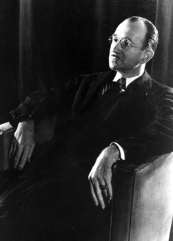
Summerhill Okulu (Summerhill School) Özgür ortamda demokratik ilişkilere dayalı seçenek bir okul ilkörneği. 1921’de Londra’ya 150 km. uzaklıkta Leiston kentinde A. S. Neill ile karısının kurduğu bu okulda yepyeni ve köktenci bir eğitim uygulandı. Bu okula 5-15 yaşları arasında 45 çocuk alınarak eğitime başlanıldı. Neill, “oklula uyan çocukları eğitmek değil, çocuklara uyan bir okul kurmak” için yola çıkmıştı. Bu okulda otorite, disiplin, ceza, ev ödevi, ders notu, sınıf geçme ve sınav yoktu. Derslere girme, istediği dersi seçip seçmeme kararı öğrenciye aitti. Neill, Rousseau gibi çocuğun doğuştan iyi olduğuna, toplum içinde yolundan saptığına inanıyordu. Psikanaliz eğitimi almış olan Neill, Pestalozzi ve Froebel’in ortaya koydukları eğitim anlayışlarını uygulamaya koydu. Suçlu ve suça itilmiş çocuklar yurdunda başarıyla uyguladığı özyönetim ilkelerini kendi okuluna aktardı. Kararlılıkla şu ilkeleri yaşama geçirmeye çalıştı: Eğitimin amacı, çocuğun gizilgüçlerini ortaya çıkarmaktır. Zorlama, baskı, yasak ve ceza, çocukta korku, gizli-açık düşmanca duygular yaratıyor; çocuğu sindiriyor ya da saldırganlaştırıyor. Bunlar, bağımsız bir kişilik gelişimini engelliyor. Özgürlük ise korkuyu ve öfkeyi yok ediyor; çocuğa kendisi olma olanağını veriyor. Öğrenimle kimse yeteneğinden daha yüksek düzeye çıkarılamaz; ama dengeli ve mutlu bir insan durumuna getirilebilir. Özgürlük içinde eğitilen herkes, kendi yeteneğinin doruğuna çıkabilir. Neill, işe, öğretmenleri yetiştirmekle başlıyor. Öğretmenleri çocukları dövmeyen, azarlamayan, suçlamayan, onlara saygı duyan öğretmen durumuna getirmeye çalışıyor. Özgürlüğü, başıboşluk olarak değil, sorumluluk olarak algılıyor. Öğretmenden, çocuğun doğru yaptıklarının desteklenmesi, onaylaması isteniyor; çocuğu yöneltme, ona buyurma, kendi istediklerini yaptırma gibi davranışlardan uzak durması isteniyor. Çünkü çocuk, zorla yaprtırılan işlerden hoşlanmıyor, zevk almıyor. Çocuğa, kendi kendini yönetme yeteneği kazandıran sevgi gösteriliyor. Bu sevgi, ona inandığını, onun yanında olduğunu duyumsatan bir sevgidir. Bu okulda çocuğun yanlış davranışları sorgulanmayıp, onların nedenleri anlaşılmaya çalışılıyor. Örneğin, yalan söyleyen çocuğa, yalancılığın kötülüğü anlatılmak yerine, onu neyin yalan söylemeye zorladığı araştırılıyor. Neill, oyunu çocuğun özgürlüğünün doğal bir sonucu olarak görüyor. Bu okulun bir başka ilkesi, özyönetimdir. Çocuklar, kendi yaşamlarına ilişkin kararları demokratik yolla kendikeri alıp uyguluyorlar. Eğlence, oyun ve ders kararlarını kendileri veriyorlar. Alınan ortak kararlar, herkes için bağlayıcı oluyor. Kararlara uymayanları, genel kurulun seçtiği küçük kurul yargılıyor. Bu kurul üyeleri belli aralıklarla değiştiriliyor. Cezalar, zararı giderme, oyundan men gibi yapıcı uygulamalar oluyor. Örneğin, gece arkadaşlarını uyutmayanlara eğlenceye katılmama cezası veriliyor. Özgürlük ortamında, kabadayı, uyumsuz çocukların kısa sürede özyönetim havasına uydukları görülüyor. Tembel, geçimsiz, başkaldırıcılar da uyumda zorlanmıyorlar. Kişinin duyguları özgürlük içinde eğitilince yetenekler kendiliğinden gelişiyor. İngiliz Eğitim Bakanlığı denetçilerinin raporu, okulun, büyük ölçüde amacına ulaştığını gösteriyor. Raporda okulun gerçekten özgürlük ilkelerine göre işlediği; herkesin kendi çapında bir şeylerle uğraştığı vurgulanıyor. Bu okulda tartışmalara rastlanıyor; ama yumruklaşanı kimse görmüyor. Neill, bu okulu 1973’te ölümüne dek yönetiyor. Sevgi, anlayış, özgürlük ve özyönetimle eğitim yapılabileceğini tam 52 yıllık uygulamasıyla kanıtlamış oluyor. Kendi istek ve eğilimlerine kulak verilmeyen, kendisine özgürlük tanınmayan, saygı duyulmayan çocukların sağlıklı bir kişilik geliştirebileceklerini kimse savunamaz. Bkz. FREIRE, Paulo; IVAN, Illich.
sunuş yoluyla öğrenme (learning through presentation) Sönmez’in belirlediği sekiz öğrenme-öğretme yaklaşımından biri. Sunuş Yoluyla Öğrenme Stratejisinin Kullanımı Sırasında Uyulması Gereken İlkeler: (1) Hedef ve davranışlar bilişsel alanın bilgi; duyuşsal alanın alma; devinişsel alanın uyarılma basamaklarından biriyle ilgili oluyor. Davranışlar ezberden söyleme, yazma, tanıma ve anımsama gibi özellikler taşıyor. (2) Öğretmen, önce olgu, araç gereç, simge, aşamalı dizi sınıflama, ölçüt, kuram, ilke, yöntem gibi bilgi düzeyindeki kavramları sınıfa anlatıyor ve her kavram ile ilgili yaşamdan en az iki örnek veriyor. (3) Öğretmen, “Anlatamadığım yer var mı?” diye soruyor. Varsa yeniden anlatıp değişik bir örnek daha veriyor. (4) Öğrencilerin arkaya yaslanmalarını isteyip anlattığı ve örnek verdiği olgu, yöntem, ilke gibi kavramları sınıfa soruyor ve içinden 5’e dek sayıyor. Sonra, arkadan ve ortadan ikişer; önden bir kişiye soruları soruyor. Yanıtlayamayan ya da eksik yanıtalayan öğrenciye “Doğru yanıtı arkadaşın söyleyecek; dikkatle dinle; sana tekrarlatacağım.” diyor ve doğru yanıtı ona söyletiyor. Doğru yanıtlayan her öğrenciye pekiştireç veriyor. (5) Olguların yer, zaman ve kişileri; ilkelerin özellikleri gibi kavramların tanımlarını her öğrenciye yinelettikten ve yukarıda aşamalı olarak yer alan dört basamaktaki işlemleri yaptıktan sonra öğrencilerden, olgu, yöntem, ilke gibi kavramların her biri için yeni birer örnek istiyor. Soruyu sorduktan sonra, içinden 20’ye kadar sayıyor; önden iki; ortadan bir; arkadan iki öğrenciye söz hakkı veriyor. Örneklerin doğruluğu, yanlışlığı üzerinde sınıfta tartışma açıyor. Doğru yanıtlayamayan öğrencilere ipucu veriyor; onun doğru yanıtı bulmasını sağlıyor. Tartışmadan sonra doğru yanıtlara pekiştireç veriyor. (6) Öğretmen sürekli olarak 7-8 dakikadan fazla konuşmuyor. İlkokul 1., 2., 3. sınıflarda 2-3 dakika; 4. ve 5. sınıflarda 4-5 dakika; ortaokul ve liselerde 5-6; üniversitede ise 7-8 dakika sürekli konuşuyor. Çünkü uzun süren konuşmalarda öğrencinin dikkati dağılıyor. Öğretmenin sürekli konuşması, ayrıca, tek yönlü bilgi aktarımı olduğundan istendik davranışların kazanılmasını sağlamıyor. İletişim, çift yönlü olduğuna göre, öğrenci de konuşturulmalıdır. Üstelik, öğrenecek olan öğrenci olduğuna göre, onun konuşmanın dışında tutulması yanlış olacaktır. Sürekli öğretmenin konuşması, öğrencilere anlattıklarını sormaması, onlardan örnekler istememesi durumunda öğretmen, çöğrencileri denetleyemiyor (iç dönütü kullanamıyor). (7) Öğretmen, sınıfı eğitim ortamında sürekli denetliyor ve her öğrenciyle göz iletişimi kuruyor. Olgu, ilke gibi her kavramı en az beş öğrenciye soruyor. Herkes bir kez konuşmadıkça aynı öğrenciye ikinci kez söz vermemeye özen gösteriyor. Bu stratejiyi kullanan öğretmen, bununla birlikte düzanlatım, soru-yanıt yöntemlerini; informal öğretmen konuşmasını; sempozyum, söylev gibi teknikleri de işe koşuyor. Soru-yanıt yönteminde kullanılan soruları kapalı uçlu olarak düzenliyor. Bkz. öğrenme-öğretme yaklaşımları.
survey yöntemi (survey method) Temel olarak, belli özelliklere sahip olan bir nüfusun belli soruları nasıl yanıtladıklarını çalışma konusu yapan; örneklem surveyi diye adlandırılan yöntem. Bu yöntemle genelde çok sayıda kişiye ulaşılmak isteniyor. Yazılı olarak ya da sözlü görüşme biçiminde verilen anketlerle amaca ulaşılmak isteniyor. Bu anketler daha çok derin değil; geniş kapsamlıdır. Araştırılan olguların birbiriyle anlamlı ilişkiler içinde olup olmadığı, kullanılan korelasyonlarla ortaya konuluyor. Ancak, korelasyonlar, temelde nedensel ilişkileri göstermiyorlar. Survey yönteminde çoğu kez örneklem kullanılıyor. Çünkü evren çok büyüktür. Bu yöntemdeki en önemli nokta, seçilen örneklemi, genellenmesi istenen nüfusu temsil etmesidir. Survey yönteminin üstünlükleri şunlardır (1) Sayısal çalışma olanağı vardır. (2) Dikkatle hazırlanmış olan ölçeklerden geniş ölçüde yararlanılabiliyor. (3) Bir ölçüde az sayıda kişiye sorulan sorularla büyük bir nüfusun özelliklerine ilişkin bilgi toplanabiliyor. (4) Özellikle gruplara yazılı anket uygulama yoluyla kısa sürede çok çeşitli bilgiler elde edilebiliyor. Bu uygulamanın masrafı da az oluyor. Survey yönteminin üstünlüklerini ise şunlar oluşturuyor: (1) Geenelleme yapılacak nüfus çok büyük olduğunda örnekleme, sorun olabiliyor. (2) Özellikle görüşme anketi surveylerinde büyük örneklemeler, çok zaaman ve para gerektiriyor. (3) Surveyler, derinleme tepki yaratabilen bir yöntemdir.sine bilgi vermiyor. (4) Türlü etkenlerle etkilenme olasılığı bulunan yanıtlara bağlı kalınma zorunluluğu bulunuyor. Bu özelliği ile survey, araştırdığı konuyu etkileyen, çalışılan kişilerde
susuzluk (thirst) Vücut dokularındaki en uygun su ve elektrolit dengesini sağlamaya yönelik artan su gereksiniminin yarattığı duygu. Suyun çeşitli yollardan vücuttan atılması sonucu vücuttaki su miktarı belli bir düzeyin altına düşünce, duyu hücreleri ağızda bir kuruluk duygusuyla beynin ilgili merkezini uyarıyor ve sıvı alma gereksinimi duyumsanıyor. Sıvı miktarının azalmasıyla kanın kimyasal bileşiminin değişmesi de susuzluk alıcıları için kimyasal bir uyarıcı yaratıyor. Araştırmalar, vücuttaki su miktarını düzenleyen ve büyük ölçüde kozmotik ölçülerle çalışan bir düzenek bulunduğunu gösteriyor. Bu düzeneğin uyarılması, örneğin, gereksinim olmadığı halde susuzluk duygusu yaratabiliyor. Bkz. açlık.
sübje Bkz. özne.
sübjektif Bkz. öznel.
süblimasyon Bkz. yüceltme.
sübyancılık (pederasty) Bir yetişkinle bir çocuk arasındaki; özellikle yetişkin erkekle erkek çocuk arasındaki cinsel ilişki; oğlancılık. Bkz. cinsel suç; sodomi.
süje Bkz. denek.
sünnet (circumcision) Penisin ucundaki derinin cerrahi yöntemle kesilip alınması. Sünnet, Yahudi ve Müslüman toplumlarda dinsel bir gereklilik olarak genellikle çocukluk döneminde yapılıyor. Batılı ülkelerde ise yalnızca temizlik ya da derinin çok kapalı olması gibi tıpsal nedenlerle gerçekleştiriliyor.
süperego Bkz. yapısal kuram (Üstbenlik).
süper gen Bkz. üstün gen
süreç (process) İlerleyen, yol alan, sürüp giden; proses, vetire. Bkz. birincil süreç; süreç içinde ikna modeli.
süreç içinde ikna modeli (process model of persuasion) Tutum değişikliği araştırmalarında ikna iletisinin etkisinin dikkat, kavrama, benimseme, saklama ve davranış olmak üzere beş aşamalı bir süreçle gerçekleştiğini saptayan model. Bkz. süreç.
süreğen (chronic) Yavaş yavaş gelişen ve uzun süren hastalık, davranış bozuklukları ya da durum; kronik. Süreğen hastalıklar, tedaviye direniyor ve genellikle kalıcı özellik gösteriyor. Kötüye gitmeleri, ancak tedaviyle önlenebiliyor. Bkz. akut; süreğen diyet; süreğen yorgunluk sendromu.
süreğen diyet (cronic dieting) Özellikle lise ve üniversite çağındaki bayanlarda rastlanan yaygın bir yeme bozukluğu; kronik diyet. Sağlıklı yeme alışkanlıklarını bozan süreğen diyet, kişinin kendisine ilişkin, dış görünüme dayalı olumsuz düşünceleri içeriyor. Bu kişilerin özsaygısı, daha çok görünüme bağlı bulunuyor.
süreğen yorgunluk sendromu (cronik fatigue syndrome) İnatçı bir yorgunluk, yoğunlaşma güçlükleri, kimi zaman kaygı ya da panik nöbetleri, eklem ve kas ağrısı, nörolojik sorunlar gibi belirtilerle ortaya çıkan hastalık. Bkz. fibromiyalji sendromu.
sürekli bellek yitimi Bkz. bellek yitimi.
sürekli eğitim Bkz. yaşam boyu eğitim.
sürekli kayıt (continuous recording) Davranışçı yaklaşımda belli bir zaman diliminde oluşan her davranışı kaydetme biçimindeki veri toplama tekniği. Sürekli kayıt için olması gereken koşullar şunlardır: (1) Yinelenen davranışların her biri kısa süreli ise ve birbirinden kolaylıkla ayrılabiliyorsa; (2) Davranışın her oluşu, süre açısından, aşağı yukarı birbirine eşitse; (3) Belirli bir süre içinde davranışın toplam yinelenme sayısı ilgi alanımıza giriyorsa, sürekli kayıt yapılıyor. Bkz. davranışçı psikoloji; veri toplama teknikleri.
süreklilik varsayımı (continuityhypothesis) Özellikle klasik psikanalize göre, normaldışı davranışın, normal davranışların aşırı bir biçimi olduğu görüşü. Bkz. yaşlanma.
süreklilik yasası (law of continuity) Kesintisiz bir biçim yaratıyor gibi görünen duyu uyarımlarının birbirine aitmiş gibi algılandığını belirten bir Gestalt gruplandırma ilkesi. Bkz. Gestalt düzenleme yasaları.
süreksizlik varsayımı (discontinuity hypothesis) normaldışı davranışın, normal davranışlardan ve normal ruhsal sorunlardan farklı olduğu görüşü.
sürrealizm Bkz. gerçeküstücülük.
sürtüşme friction) İki ya da daha çok kişi arasındaki ters, çelişik amaçlar, karşılıklı birbirini kızdırma ve sürekli; ama genellikle hafif uyuşmazlıklar gösteren bir ilişki biçimi. Bu terim, psikolojik danışma ve tedavide, aile içindeki üyelerin birbiriyle anlaşmazlık, uyuşmazlık durumlarını belirtmek için kullanılıyor.
sürü içgüdüsü (herd instinct) Hayvanlar ve insanlarda bulunduğu ileri sürülen doğal bir arada yaşama eğilimi.
sürü psikolojisi (mob psiychology) Bireylerin yalnızca duygusal durumlarına dayanarak ortak davranışlar gösterme eğilimleri; güruh psikolojisi; sürü ruhbilimi. Gösteri, bombalama, linç etme ve benzerleri, bu psikolojinin etkisiyle de yapılıyor. Güruh üyeleri, grubun desteğini aldıklarında, özellikle saldırganlık ve yıkıcılık duygularını denetleyemiyorlar. Bu konuda, ortaya konulmuş olan çeşitli açıklamalar vardır. Bunlara göre, normal koşullarda yasaya, düzene saygılı yurttaşlar, kalabalığın anonimliği nedeniyle sorumluluğun ortadan kalkması; “herkes aynı şeyi yapıyor” izlenimi; yaşamın öteki alanlarından kaynaklanan engellenme duygularını açığa vurma olanağını bulma gibi nedenlerle bu tür olumsuz tepkilere karışıyorlar. Bkz. bulaşma kuramı; kitle histerisi; kitlesel davranış.
sürü ruhbilimi Bkz. sürü psikolojisi.
süt emme dönemi (lactation) Çocuğun anne sütü ile beslendiği dönem. Bkz. memeden kesme.
süzgeç kuramı (filter theory) Algı psikolojisinde, algı mekanizmasının çevredeki uyarıcılar yığınının kimilerini seçip özel işlemlerden geçirdiğini; öbürlerini ise göz ardı ettiğini; bununla dikkatin işlevinin, önemli şeylerde kullanılacak işlem kapasitesinde tasarruf sağlandığını savunan kuramlara verilen ad; filtre teorisi. Bkz. seçici dikkat; süzgeç paradoksu.
süzgeç paradoksu (filter paradox) Algı sisteminin, çevredeki uyarıcıların tümünü sürekli olarak taradığını ve bir ön süzgeçten geçirdiğini; belli ölçütlere uyan uyarıcılara farklı bir işlem uyguladığını belirten görüş. Seçici dikkat deneyleriyle, dikkat edilmeyen (bilincine varılmayan) uyarıcıların da kimi koşullarda oldukça yüksek düzeyde çözümlendiğini gösteren bulgular elde edilmiştir. Bu, dikkat edilmeyen girdilerin de dikkat edilenler kadar işleme alındığını düşündürüyor ve sonuçta süzgeç kuramı yanlılarının, “Dikkat, işlem kapasitesinde tasarruf sağlıyor.” biçimindeki savını zayıflatıyor. Buna “Farklı dikkat; dolayısıyla farklı işlem düzeyleri vardır.” biçiminde bir açıklama getiriliyor. Bu açıklamaya göre algı sistemi, çevredeki uyarıcıların tümünü sürekli olarak tarıyor ve bir ön süzgeçten geçiriyor; belli ölçütlere uyan uyarıcılara farklı bir işlem uyguluyor.
Szondi ölçeri Bkz. Szondi testi.
Szondi testi (Szondi test) Psikozlu deneklere bir dizi resim arasından en çok beğendiği ikisi ile hiç hoşlanmadığı ikisi seçtirilerek onların yorumlanmasıyla hastaya ilişkin tanı koymaysa yarayan yansıtıcı kişilik testi.